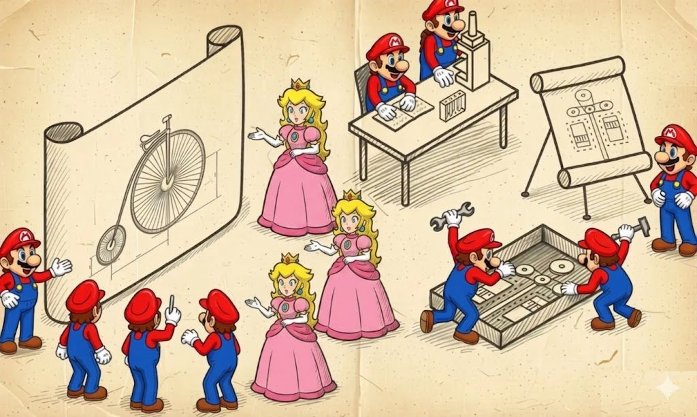
Ho un libro intitolato Game++ e diversi articoli in cui ho passato in rassegna quali pattern vengono usati nei giochi e nei motori. Il libro dedica quasi un centinaio di pagine proprio a questi pattern e descrive in dettaglio quali tipi esistono, come si presentano in C++, dove sono le loro insidie e come applicarli. Cioè esattamente quei dettagli implementativi che di solito vale la pena rileggere quando decidi ancora una volta se fare di una factory una classe separata o provare a cavartela con std::function. Quando lo scrivevo, mi sembrava che sarebbe stato un testo pratico molto utile, e così è stato, e una persona esperta ci trova ciò di cui ha bisogno abbastanza rapidamente.
Ma se leggi il libro nel suo insieme invece di questi singoli capitoli, si vede chiaramente come, con l'inesperienza e la sicumera di un giovane autore, mi sia buttato dritto nella mischia e abbia subito iniziato a parlare di implementazioni, come se il lettore avesse già deciso tutto per conto suo e fosse interessato solo alla sintassi — dando per scontato che qui stiamo tutti costruendo un ipotetico motore AAA, in cui la serializzazione è inevitabile e gli script sono obbligatori. Il risultato è un classico caso in cui il libro risponde al "come" ma salta il "perché", e senza una risposta a quello, tutte le risposte sul "come" risultano o accidentalmente utili o sistematicamente dannose, perché una persona prende un approccio da lì, lo cala nel proprio progetto o lo avvita al proprio mini-gioco, e poi si lamenta di avere ora millecinquecento righe di infrastruttura per lo stesso mini-gioco, che funziona esattamente come prima, solo più lento.
Questo articolo è nato dal tentativo di riconoscere e correggere quell'errore, e allo stesso tempo da un'ennesima rilettura di GoF, che ho visto per la prima volta da studente, e allora mi sembrava troppo astratto e non abbastanza pratico. E adesso voglio fare un paio di passi indietro e percorrere questa strada come si deve, partendo non da come viene implementato un pattern ma da quale problema ingegneristico esso risolve davvero, e a quali condizioni diventa o la salvezza di un progetto o un layer di astrazione in più che costa tanto e non dà nulla.
Se all'improvviso ti stancassi di leggere questi 106 minuti, alla fine c'è una sezione TL;DR con un breve riassunto.
Sezioni
Perché servono i pattern
La maggior parte delle conversazioni sui pattern comincia con qualcuno che prende GoF, lo apre a una pagina a caso e dice che questo <inserisci il tuo> è presumibilmente l'unico vero modo di fare una factory o un observer, e poi passa a discutere se il metodo debba essere virtuale o non virtuale, e se il nostro compilatore non supporta ancora la reflection, come faremo mai a vivere. È molto simile alla situazione in cui compri un martello al negozio di ferramenta e ti spiegano a lungo e nel dettaglio esattamente con quale chiodo in esattamente quale legno funziona meglio, senza prima chiarire se stai costruendo una casa o una casetta per gli uccelli.
Il primo pericolo dei pattern è che nella vita reale un pattern non è la risposta corretta a quale dimensione di casetta per gli uccelli stiamo costruendo questa volta, ma proprio un compromesso tecnico tra diverse forze. Queste forze tirano la tua architettura in direzioni diverse, e senza un simile compromesso l'architettura semplicemente si lacera, e nessun pattern la aiuterà più. Il secondo è che quando leggi di "evitare i cambiamenti" o di "accoppiamento debole", ti stanno cercando di vendere un solo lato della medaglia, e abbastanza spesso te lo vendono, anche se nel tuo particolare gioco non serve affatto.
Queste forze possono essere piuttosto tecniche, come accoppiamento contro coesione, cache locality contro flessibilità, header hell contro forward declaration, e un sacco di altre cose che sono descritte abbastanza bene nei manuali. E poi ci sono le forze organizzative, di cui i manuali non dicono quasi nulla, e che in un progetto reale risultano più forti di tutte quelle tecniche messe insieme. Per esempio, quante persone hai, qual è la loro esperienza, se si mettono d'accordo facilmente, quanto spesso cambieranno i requisiti di game design, se arriverà un localizzatore a chiedere il cinese, e quante volte il tech lead riuscirà a dare un'occhiata al codice del motore e vorrà "questo, solo migliore".
Quando scegli un pattern, in realtà stai rispondendo alla domanda su dove esattamente sei disposto a pagare e con cosa esattamente pagherai, e a seconda della risposta la scelta giusta sarà o un pesante design data-driven con generazione di header da uno schema, o un piatto file C++ da mille righe dove tutto è scritto a mano e semplicemente funziona. Questa è una semplificazione grossolana.
Da qui diventa chiaro perché domande come "quale architettura GUI è la migliore" o "cosa scegliere, ECS o una gerarchia di oggetti" sono tecnicamente prive di senso, proprio come la parola "universale" nella descrizione di un motore, perché l'universalità ha un prezzo concreto, e si misura in megabyte di sorgenti, anni-persona di manutenzione e numero di giochi che non hai scritto. Tim Sweeney una volta ha espresso l'idea che se vedi un motore universale più piccolo di un centinaio di megabyte di sorgenti — all'incirca quanto pesa Unreal — passa oltre, perché tutto il codice che non è scritto in un motore universale dovrai scriverlo da solo.
D'altro canto, quello stesso Unreal Engine, che ha superato da tempo la soglia delle centinaia di megabyte, non è nemmeno universale — è costruito per generi ben precisi con un modello di simulazione e replicazione specifico, e un tentativo di costruirci sopra, diciamo, un RTS al livello di StarCraft II con le sue particolari regole di sincronizzazione finisce o nel riscrivere metà del motore o nel passare a qualcos'altro — ma di certo non ti dissuaderò dal provarci.
È molto utile tenere a mente alcuni esempi applicati sui quali questa idea diventa vivida. Quando id Software fece il primo DOOM, avevano tre programmatori per tutti i sistemi core, un compilatore, un target e vincoli hardware molto chiari. Qualsiasi design data-driven con generazione di codice da uno schema sarebbe stato per loro esattamente lo stesso overengineering, e per questo i sorgenti contengono un denso codice C ottimizzato per la cache, molto difficile da estendere a qualsiasi altra cosa ma facile da leggere.
Ai tempi di DOOM, id Software non era "due persone" ma già un'azienda affermata di 8 (Carmack, Romero, Hall, Petersen, due artisti, un designer). "Due programmatori" qui è più una leggenda che viene spesso citata, ma quella è in realtà la storia di Wolfenstein 3D (1992), quando Carmack scrisse il motore da solo, con Romero che dava una mano.
L'altro lato della medaglia è BioWare, che quindici anni dopo stava facendo Dragon Age. A quel punto avevano quattro dozzine di game designer, la localizzazione in una dozzina di lingue e quasi un centinaio di programmatori di motore e di gioco, e lo stesso approccio al codice in C avrebbe garantito la morte del progetto molto prima dell'uscita. Così il team spese prima due anni a scrivere un editor, schemi e serializzazione, pagando decine di volte di più in infrastruttura rispetto a id, ma guadagnando la possibilità di assumere designer che non avevano mai visto una singola riga di codice C. Entrambi i team fecero la scelta giusta, mentre le loro scelte sono diametralmente opposte, e anche questo è normale, perché gli obiettivi finali dei progetti erano diversi.
Perciò è più utile trattare i pattern non come ricette o un dizionario di incantesimi da memorizzare e gettare nel codice, ma come una discussione non conclusa, e proprio quando devi metterti d'accordo con un tech lead, con l'architetto di un sottosistema vicino, o con te stesso tra sei mesi su quale compromesso esattamente hai scelto e perché, i pattern iniziano a far risparmiare tempo e nervi. E invece di un'ora di improvvisazione con il pennarello alla lavagna dici "qui abbiamo un MVC perché la view viene riscritta più spesso del model", e il tuo interlocutore ha il diritto di essere d'accordo e tutti vanno a prendere un caffè in terrazza, oppure di obiettare con argomenti, e allora la discussione si muove verso una decisione invece che in tondo. Tutto il resto sui pattern è ormai dettaglio tecnico che dipende molto dal linguaggio, ed è di questo che parla il resto.
I layer
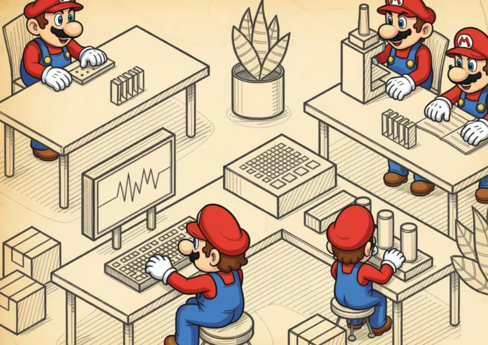
Un layer non è solo una cartella nel progetto o una libreria compilata, ma una promessa architetturale molto concreta che il team fa a se stesso: "ci accordiamo sul fatto che questo codice parla con il mondo solo attraverso questa facciata, non usa nient'altro, non sbircia mai nessuno sopra di sé, e se domani ci venisse voglia di buttarlo via e riscriverlo da zero, lo butteremo via e lo riscriveremo senza avvisare nessuno, perché non dobbiamo niente a nessuno tranne la facciata".
Idealmente ottieni la classica torta di layer, in cui ogni layer vede solo i servizi di quello sottostante, e il risultato disegnato alla lavagna è una bella verticale uniforme che alla gente piace mostrare alle conferenze, nei libri e negli incontri con gli investitori.
+----------------------------------+
| Gameplay / Game Logic |
+----------------------------------+
| Replication / RPC |
+----------------------------------+
| Render Graph + Material | <-- layer puri
+----------------------------------+
| RHI (facciata comune su API) |
+----------------------------------+
| DirectX 12 / Vulkan / Metal |
+----------------------------------+
| Driver + GPU |
+----------------------------------+
^
| utility laterali
| log, hash, allocator, mathNella vita reale questa immagine funziona all'incirca nella stessa percentuale di casi dell'immagine IKEA di una cucina finita, e i layer vengono raramente applicati correttamente, perché è difficile, costoso e lento. Devi pagare per la torta fin dal primo giorno, quando non hai ancora un renderer, il suono o il gameplay, ma stai già facendo una discussione di più ore su cosa esattamente entri nell'interfaccia del layer più basso e chi lo scriverà.
Ma se quella discussione l'hai fatta e hai convinto tutti che serve davvero, allora tra tre anni, quando dovrai passare il renderer da DirectX 11 a DirectX 12, o cambiare la piattaforma da PS4 a PS5, o buttare via del tutto lo stack di rete e riscriverlo sui messaggi di Apple, o sostituisci semplicemente un layer, oppure riscrivi metà dell'app esattamente come prima — ma ora consapevole di riscrivere metà dell'app, non "beh, ritocchiamo un paio di punti".
L'esempio più comune e ancora vivo di layer è una qualsiasi API di sistema, e il layer OpenGL nelle app è vivo proprio perché è semplice e se ne infischia altamente del fatto che tu stia renderizzando Crysis o un lettore di GIF. La facciata dal lato del layer inferiore è disposta in modo che nessuno di quelli superiori vi trapeli dentro, e Win32, POSIX, Vulkan, DirectX, il Wwise SDK, la Steamworks API, la libpad di PlayStation — tutti questi sono layer allo stato puro, che ti danno funzioni, tipi e la promessa che queste funzioni funzionano, e non danno alcun impegno a tenere conto della tua architettura, del tuo resource manager o dei tuoi piani per i DLC.
Ma quando scrivi il tuo layer dentro il gioco, il principale criterio di successo diventa la capacità di assicurarti che nulla trapeli dall'alto verso il basso. Se il layer inferiore sa qualcosa di te oltre alle funzioni e ai tipi della sua facciata, non hai più un layer ma solo due moduli che hai fatto sposare di soppiatto, ma per qualche motivo ti sei dimenticato di dirlo al resto del team.
Perché servono i layer
Le ragioni tecniche per suddividere un programma proprio in layer sono di solito secondarie, e quelle organizzative vengono sempre prima. Un layer è un modo per assumere un team separato per un pezzo specifico del sistema e non vederlo ogni giorno alle riunioni allo stesso tavolo del team del layer vicino, perché entrambi i team possono lavorare a ritmi molto diversi.
I layer sono utili quando hai team incompatibili. Per esempio, c'è un layer che dovrebbe essere scritto da specialisti del team di render, che sanno bene cos'è una GPU, gli shader, le barriere di Vulkan e le insidie del resource binding. E un layer di game design che dovrebbe essere scritto dalla gente del gameplay, che capisce bene come si comporta una combo al terzo colpo se il giocatore ha rilasciato il pulsante al secondo frame dell'animazione, e questi due mondi si intersecano raramente a livello di persone, mentre a livello di codice il loro intersecarsi è categoricamente dannoso. E per loro GPU significherà Game Progression Update, ovvero la curva di progressione del gioco.
Ci sono anche dei bonus tecnici, e ce ne sono due e mezzo. Il primo dà la possibilità di sostituire interamente l'implementazione di un layer — diciamo, per una diversa API grafica, una diversa piattaforma, o per autotest con un renderer mockato. Il secondo dà una buona localizzazione dei bug, perché se il tuo layer è reale e la facciata è pulita, un bug è o "sopra la facciata" o "sotto la facciata", e la ricerca si restringe di un ordine di grandezza. Il mezzo-bonus va alla velocità di compilazione, perché l'header della facciata è di per sé piccolo, mentre i pesanti tipi interni sono nascosti in una lib che puoi ricompilare anche solo una volta a settimana.
Dove i layer si rompono
Il principale problema dei layer è che il layer N vede solo il layer N-1, e non ha la minima idea dell'esistenza del layer N±2, e questo, per quanto strano, risulta essere un problema molto più spesso che una feature. Un classico esempio dallo sviluppo reale ha più o meno questo aspetto: hai un layer di asset che mette in cache le texture caricate per nome di file, perché allo sviluppatore del layer di asset sembra ovvio che le texture possano essere richieste di nuovo; sopra di esso c'è un layer di material che mette anch'esso in cache le texture, ma per GUID univoco, perché allo sviluppatore del material sembra ovvio che le texture siano identificate da un GUID; e ancora più in basso c'è un layer di render che mette anch'esso un po' in cache le texture "calde" nelle proprie strutture, perché lo sviluppatore del render non ha fatto in tempo a capire se qualcuno più in alto le stesse mettendo in cache.
Di conseguenza la stessa texture 4K dell'eroe vive in memoria in tre copie, e nessuno dei tre autori fa nulla di tecnicamente sbagliato dal punto di vista del proprio layer, finché qualcuno non atterra su una console con otto gigabyte di memoria condivisa e va in OOM sulla location iniziale. Ma è scritto bene e dentro il pattern.
Il secondo grande problema dei layer sono i cosiddetti cross-cutting concern. Sono cose come il logging, il profiling, l'allocator, la telemetria e il sottosistema delle stringhe, che per loro natura permeano tutto, e qualsiasi onesto "un layer vede solo il layer inferiore" applicato ad essi assomiglia al dover far passare logger* e allocator* attraverso tutti i confini come parametri.
In due mesi il progetto si trasforma in una ghirlanda di quattro parametri in più in ogni funzione, dopodiché il tech lead sputa veleno per una settimana e in una notte fa un g_logger globale, implementando l'ennesimo anti-pattern nel progetto — ma in cambio lavorare diventa due volte più facile e veloce.
Esempi di layer nei giochi
Quasi sempre lo stack di rete di un gioco sopra TCP/IP è l'esempio più pulito possibile di torta di layer, perché nel codice di rete lo scambio tra layer va fisicamente in pacchetti, e puoi catturare questi pacchetti in Wireshark, guardarli e confermare che il layer superiore non sa davvero nulla di quello inferiore tranne ciò che il pacchetto inferiore trasporta.
In fondo abbiamo IP, sopra di esso UDP con un paio di campi standard, sopra ancora il canale affidabile del motore, che può reinviare i pacchetti persi e riassemblarli nell'ordine giusto (è così che si fa, per esempio, nel Source Engine con i suoi netchannel o nel NetDriver di Unreal con le sue bunch), sopra di esso è avvolta la replicazione, che trasforma "l'HP di quel giocatore è cambiato" in "metti quattro byte nel pacchetto a un certo offset e non dimenticare il delta con il tick precedente", e sopra tutto questo c'è la logica di gioco, che sa solo che il giocatore ha degli HP e non sospetta che sotto di sé ci siano quattro piani di infrastruttura.
Quake III all'epoca fece esattamente uno stack del genere e ne pubblicò i sorgenti, e ancora oggi metà degli sparatutto indie trae ispirazione dal suo netcode proprio perché la separazione dei layer lì è molto pulita, e possono essere portati su un nuovo motore senza capire gli interni dei livelli inferiori.
Lo stack grafico è la stessa torta di rete, solo dieci volte più spessa. In fondo abbiamo il driver della GPU, sopra di esso DirectX 12 o Vulkan con la sua API, sopra ancora di solito costruiscono un cosiddetto RHI (Render Hardware Interface, un termine di Unreal; in Frostbite si chiama diversamente ma significa la stessa cosa), che astrae le diverse API grafiche dietro una facciata comune; sopra l'RHI sta il Render Graph (FrameGraph in Frostbite, RDG in Unreal, RenderGraph in Unity SRP), che costruisce un grafo di dipendenze tra i pass e piazza da solo le barriere e le transizioni di risorse, e sopra di esso c'è il sistema di material e il renderer di alto livello, che può disegnare un modello nella scena e non sa nulla di "una resource barrier da COPY_DEST a SHADER_RESOURCE".
Ogni confine in questa torre è un vero layer, così quando Epic un bel giorno rinominò il proprio Render Graph e ne cambiò metà dell'API, i layer superiori sopravvissero, perché lavoravano attraverso la facciata invece che attraverso l'accesso diretto agli interni. E viceversa, i motori in cui il codice di gameplay in qualche modo riesce a sapere di ID3D12CommandList vengono di solito riscritti interamente quando si cambia l'API grafica, e ci mettono molto più del previsto.
Lo stack audio è disposto in modo molto simile, perché i suoi compiti sono gli stessi. Eventi di alto livello come "una pistola ha sparato vicino al giocatore" devono essere trasformati in sample concreti, fatti passare attraverso una catena di DSP, mixati con una dozzina di altri suoni e inviati a uno specifico buffer hardware dell'OS. Wwise, FMOD, Audiokinetic — sotto il cofano si scompongono tutti nei propri layer interni, che hanno gli Events in cima, i Sound Banks sotto di essi, il Mixer e il Bus Routing un livello più in basso, un grafo di DSP ancora più in basso, e WASAPI su Windows, CoreAudio su macOS e qualche AudioRenderer sulle console in fondo, mentre il tuo codice di gameplay parla rigorosamente con il layer superiore, inviando PostEvent("Wpn_Pistol_Fire"), completamente ignaro di quanti filtri e bus attraverserà questa chiamata.
id Tech 4 (Doom 3, 2004) è probabilmente l'esempio da manuale più chiaro di un motore a layer, perché quando Carmack ne rilasciò i sorgenti, chiunque poteva vederci una suddivisione fisica in sys, renderer, framework, idlib e game, dove game.dll è compilata come una DLL separata, non si linka direttamente con il renderer, non sa nulla di OpenGL e parla con il mondo attraverso l'interfaccia idGameLocal e una manciata di callback. Ecco perché i modder all'epoca fecero total conversion del gioco senza toccare una riga di codice del motore.
Quello stesso Source Engine sulla carta sembra anch'esso a layer, ma se guardi il codice reale, ci sono molti punti in cui client.dll sa inaspettatamente molto sul sistema di material e sui vertex format. Si concede ai modder con minore disponibilità proprio per il motivo che i layer sono un contratto, e basta iniziare a violarlo di soppiatto una sola volta perché i layer alla fine lascino dietro di sé solo file sorgente con nomi significativi.
Quando i layer non andrebbero usati
I layer funzionano molto male su tre tipi di progetti — qui mi appoggio ai miei stessi lividi. Primo, sui piccoli progetti di una o due persone, dove progettare i layer divorerà così tanto tempo che non scriverai il gioco questo trimestre, e forse nemmeno il prossimo, e in questo caso un "grasso" main.cpp con chiamate dirette al renderer e al suono sarà esattamente la decisione giusta che ti permette di arrivare alla release, e solo dopo affliggerti perché il codice è diventato illeggibile.
Secondo, sui progetti con un tasso molto alto di cambiamento dei requisiti — per esempio, i primi prototipi di gameplay dove il game designer cambia le regole del combattimento ogni settimana, e qualsiasi "contratto tra layer" viene riscritto esattamente quando cambiano le regole, e i layer in questo caso risultano essere una forma di burocrazia che rallenta l'iterazione.
Terzo, su qualsiasi sistema in cui diversi "layer" fisicamente devono comunicare con la stessa risorsa senza copie o intermediari, come tra simulazione fisica e animazione scheletrica, tra il mondo ECS e il planner dell'AI, tra il renderer e lo streaming degli asset. Lì, un tentativo di nascondere l'uno all'altro dietro una facciata produce di solito o una tonnellata di copie, o chiamate molto costose, o entrambe le cose insieme.
Perciò, quando scegli i layer come principale mezzo per organizzare il codice, è ragionevole porsi subito tre domande: puoi spendere una parte notevole del budget dei primi mesi a progettare interfacce prima di vedere il primo frame del gioco? sei pronto a mantenere nel team la disciplina "il layer N+1 non sa nulla del layer N+2" su un orizzonte di almeno un anno? c'è una possibilità di ottenere un ritorno da questa architettura che ne giustifichi il costo?
Se la possibilità c'è e il team è pronto, i layer ripagano molto bene, e se no, costruirai una bella torre a layer in cui il game designer inizia a trapanare buchi gridando "mi serve urgentemente l'accesso diretto al renderer", e da questi buchi cresce gradualmente un'architettura unitaria che non avevi mai pianificato. Sull'architettura unitaria c'è di più nel libro, ma penso che ci si possa fare un'idea generale anche dall'articolo.
I metalayer
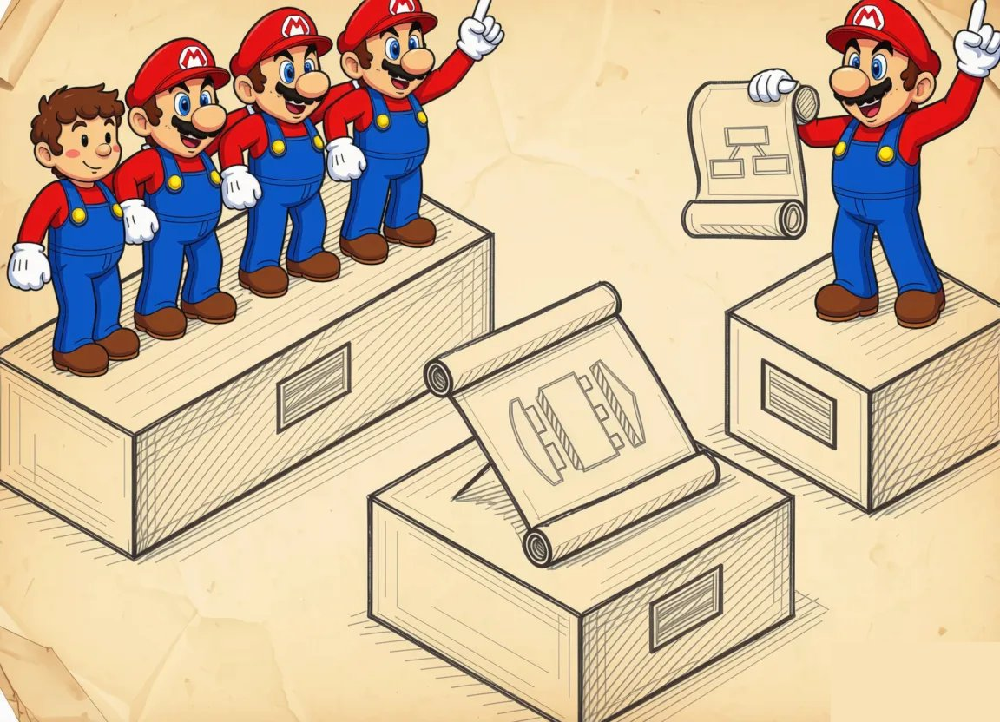
Se un layer è il contratto "parlo con il mondo solo attraverso una facciata", allora un metalayer è già il contratto "non mi limito a parlare, ma ti formulo le mie intenzioni nella tua lingua, e sei tu a decidere esattamente come portarle a termine".
Un metalayer di solito si colloca tra un layer reale e una pipe (un canale), perché dall'esterno sembra un layer e usa la stessa facciata, ma all'interno è strutturato diversamente. Ora il codice non chiama più le funzioni una a una sperando che il layer inferiore le esegua onestamente nello stesso ordine, ma assembla una descrizione dichiarativa di ciò che vuole ottenere, consegna questa descrizione al metalayer nel suo insieme, e il metalayer poi traduce la descrizione in una sequenza di chiamate all'API inferiore — il più delle volte non nella sequenza in cui la descrizione è stata scritta, ma in quella più vantaggiosa in termini di performance, memoria, sincronizzazione o qualunque altra cosa il metalayer sappia ottimizzare.
Questo si vede particolarmente bene nei motori di Naughty Dog e nel loro DSL chiamato GOAL (Game Oriented Assembly LISP) sulle prime PlayStation, che all'epoca di The Last of Us si era trasformato nel più modesto ma architettonicamente simile DC (Data Compiler), e in entrambi i casi il codice gameplay di Crash Bandicoot o Uncharted non è fatto di funzioni C come per la maggior parte delle persone, ma di espressioni in stile Lisp che si compilano nel proprio bytecode e vengono eseguite da una macchina virtuale sopra il normale layer del motore.
Questo è probabilmente l'esempio più vivido di come un metalayer non sia un'"astrazione" ma un secondo linguaggio di programmazione a tutti gli effetti all'interno del progetto, con il proprio parser, compilatore, ottimizzatore e runtime, e mantenere un tale serraglio ha senso esattamente quando non stai facendo un solo gioco ma una serie, in cui gli anni risparmiati sulle iterazioni dei game designer ripagano l'investimento infrastrutturale.
Cosa dà davvero un metalayer, e cosa pagherai in cambio
Il vantaggio principale di un metalayer, oltre alla velocità e alle ottimizzazioni in sé, è che ottieni un sistema separato che puoi salvare, versionare, diffare e validare ancora prima che il gioco parta del tutto. E quello stesso render graph può essere esportato in JSON e confrontato tra le build, un materiale può essere aperto nell'editor e puoi vedere cosa è cambiato da ieri, e un behavior tree (BT) può essere fatto passare attraverso un centinaio di test di navigazione, e ognuna di queste azioni è impossibile per un layer ordinario in cui tra "sopra" e "sotto" c'è solo una chiamata di funzione.
Sui grandi progetti questa capacità di costruire separatamente, salvare separatamente e verificare separatamente si rivela più importante di tutte le ottimizzazioni messe insieme, perché è esattamente ciò che permette a 30 artisti tecnici e 10 programmatori di AI di lavorare al gioco in parallelo senza collidere in qualche bug 200 volte a settimana.
Anche per questo dovrai pagare, e il prezzo del metalayer è piuttosto caratteristico. C'è sempre un certo ritardo tra "ho cambiato la dichiarazione" e "ho visto il risultato", perché tra i due si frappone un compilatore o uno scheduler, quindi devi montarci accanto in parallelo un hot reload del metalayer (Hot reload, Unreal Live Coding, Unity hot reload, compilazione al volo di Niagara) oppure convivere con lunghi cicli di iterazione e odiare in silenzio la tua pipeline.
Debuggare un metalayer è di un ordine di grandezza più difficile che debuggarne uno ordinario, perché quando un errore si è verificato nell'API inferiore, il percorso di ritorno alla riga nella descrizione passa attraverso una catena di traduzioni, e senza buoni strumenti come RenderDoc o un debugger di Behavior Tree integrato, l'indagine si trasforma nella lettura dei fondi di caffè.
I metalayer amano crescere verso linguaggi di programmazione a tutti gli effetti, e a un certo punto il Material Editor acquisisce un Custom HLSL Node, il Behavior Tree ottiene un Composite Decorator con codice C++ arbitrario, e il Render Graph impara ad accettare "callable passes" con, di nuovo, codice arbitrario all'interno. A questo punto vale la pena dirsi onestamente che il tuo metalayer è diventato un DSL (Domain Specific Language), documentarlo come un linguaggio e trattarlo come un linguaggio anziché come un insieme di "nodi in un grafo".
Dichiarazione (grafo, albero, materiale)
|
v
+------------------+--------------------+
| Metalayer: |
| parse -> validate -> analyze -> | <-- qui vivono il compilatore
| schedule -> codegen | e/o lo scheduler
+------------------+--------------------+
|
v
Comandi del layer inferiore
(DX12/Vulkan, HLSL,
programma compute, AI Task)Se proviamo a formulare una regola pratica, suona così: vale la pena fare un metalayer quando nel tuo progetto c'è un gruppo separato di persone che ci lavorerà quotidianamente, e allo stesso tempo il layer inferiore è abbastanza complesso da far sì che una generazione ingenua di chiamate a ogni modifica del genere darebbe un risultato scadente in performance, o in correttezza, o nella quantità di lavoro manuale, o in qualcos'altro ancora.
Se la prima condizione non è soddisfatta, il metalayer verrà scritto e mantenuto esattamente dalla stessa persona che avrebbe comunque scritto le chiamate dirette, e per lei il metalayer sarà solo un peso. Se la seconda non è soddisfatta, il tuo metalayer sarà un modo molto costoso di infilare codice semplice in un grafo perché è carino e lo si può mostrare a una conferenza.
Ma se entrambe le condizioni sono soddisfatte — e progetti del genere nell'industria moderna sono più la regola che l'eccezione — un metalayer diventa abbastanza rapidamente il luogo in cui si concentrano al contempo sia le principali ottimizzazioni del motore sia la principale produttività del team dei contenuti, e un tech lead che è riuscito a vendere, costruire e spedire un tale metalayer di solito può tranquillamente andare a chiedere il prossimo achievement sul proprio profilo, e magari qualche altro procione morto.
I sottosistemi
Se i layer vengono bene di rado, o vengono pesanti, dei sottosistemi si può dire l'opposto. Questa è la scelta tipica quando sei disposto in anticipo a barattare la purezza con un rischio minore, ed è così che è organizzata la stragrande maggioranza dei motori effettivamente vivi oggi, dai più piccoli ai più grandi.
Un sottosistema assomiglia molto a un layer dall'esterno — ha anch'esso il proprio codice, la sua facciata condizionata e la sua responsabilità — ma mentre i layer disegnano sulla lavagna una bella torre verticale con confini tracciati in modo netto, i sottosistemi sulla stessa lavagna vengono fuori come un mucchietto di cerchietti con frecce, e queste frecce volano in direzioni diverse, perché il renderer vuole sapere dalla fisica quali oggetti sono vivi ora, la fisica vuole sapere dall'animazione quali ossa si sono spostate e dove, e l'animazione vuole sapere dall'AI in quale direzione sta andando il combattente. L'AI non dovrebbe, ma vuole tantissimo chiedere al renderer se la telecamera al momento vede quel mostro, per decidere se valga anche solo la pena di avviare la costosa logica di controllo della visibilità con i raycast.
La differenza principale tra un layer e un sottosistema non è che l'uno sia migliore dell'altro, ma che i confini di un sottosistema sono riconosciuti in anticipo da tutti i partecipanti come permeabili. Un layer è il contratto "tu non mi vedi, io non ti vedo, parliamo attraverso la facciata", mentre un sottosistema è il contratto "siamo costretti a comunicare spesso, per ogni sorta di ragione e in entrambe le direzioni, quindi mettiamoci almeno d'accordo su chi chiama chi e come, e quali oggetti volano tra di noi".
Così, quando fai un layer, spendi due settimane a progettare la facciata, e poi per due anni difendi quella facciata perché nessuno di troppo ci si infili attraverso. Quando fai un sottosistema, spendi due giorni sulla sua prima interfaccia, e poi per due anni ritocchi quell'interfaccia man mano che il game designer inventa nuove ragioni perché la tua AI parli con il tuo audio, e questo fa parte del prezzo per un rischio minore all'inizio.
Perché mai i sottosistemi, se i layer sono più puliti?
Perché in un gioco reale la comunicazione tra potenziali "layer" è così densa che nasconderla dietro una gerarchia verticale con facciate è o fisicamente impossibile o così costoso che il gioco non arriverà alla release. Quando il renderer a ogni frame deve percorrere la scena, chiedere alla fisica il bounding box di ogni oggetto dinamico, tastare le matrici delle ossa per lo skinning dall'animazione, e anche scoprire dal LOD manager quale mesh è attualmente attiva, e fare tutto questo in un millisecondo e mezzo per consegnare il frame alla GPU in tempo, qualsiasi tentativo di nascondere un vicino dietro una facciata pesante con chiamate virtuali e conversioni di tipo trasforma 1,5 ms in 4,5, e spendi metà del frame per il solo fatto di aver organizzato il tuo codice in modo carino.
Quindi i sottosistemi compaiono non per amore della purezza ma dal riconoscimento che un gioco ha un insieme di grandi moduli, ognuno dei quali vive la propria vita, è mantenuto da un team separato, viene profilato separatamente, ha le proprie strutture dati e i propri piani di ottimizzazione, ma al tempo stesso sono costretti a scambiarsi continuamente informazioni su un mondo grande e condiviso.
L'unico modo sensato di organizzare tutto ciò è separare questi moduli in sottosistemi e permettere loro di sapere l'uno dell'altro, concentrando gli sforzi non sull'isolamento ma sul minimizzare il numero e il costo delle loro interazioni.
Cosa di solito si chiama sottosistema, e cosa no
Sulla carta un sottosistema è di solito un modulo abbastanza grande che possiede un pezzo sostanziale di stato del gioco (il renderer possiede la scena, la fisica possiede il mondo fisico, l'AI possiede il proprio planner e la blackboard). Ha anche il proprio regolare loop di aggiornamento, chiamato dal main game loop a ogni tick o a ogni fixed step, e ha un'API esterna più o meno indipendente dalle strutture dati interne.
Se hai del codice che non possiede un proprio stato e non ha un tick regolare, molto probabilmente non è un sottosistema ma o una libreria di utility o un insieme di helper. A rigore dovrebbe essere spostato negli strumenti e non sventolato come una conquista architettonica.
Un insieme tipico di sottosistemi in un motore moderno ha più o meno questo aspetto: Renderer, Physics, Animation, AI, Audio, Streaming, ResourceManager, Input, Network, UI, e sopra tutto questo World/Scene, che di solito non è un sottosistema in senso puro ma piuttosto un oggetto condiviso che tutti questi sottosistemi conoscono e possono interrogare.
Tra i sottosistemi volano entità del mondo di gioco, il più delle volte come puntatori o handle, e a seconda dello stile del motore questo è o un GameObject con componenti alla Unity, o un Actor con componenti alla Unreal, o un'Entity senza comportamento ma con un insieme di tag e componenti alla ECS, e la scelta architettonica di questo "oggetto condiviso" determina in larga misura quanto sarà confortevole la vita dei sottosistemi fianco a fianco.
Il Source Engine come esempio modello di sottosistemi
Il Source Engine di Valve è probabilmente l'esempio più accademico di motore organizzato precisamente come un insieme di sottosistemi, perché Valve ha fisicamente separato questi sottosistemi in singole DLL, e qualsiasi sottosistema in Source è un IFooSystem* ottenuto attraverso uno speciale meccanismo di factory al momento del caricamento del motore.
Nello specifico hanno studiorender.dll per il rendering dei modelli con l'interfaccia IStudioRender, vphysics.dll per la fisica con l'interfaccia IPhysics, soundemittersystem.dll per astrarre i suoni di gioco sopra IEngineSound, materialsystem.dll per i materiali, vgui2.dll per la UI, e una dozzina di altre, e ogni DLL al caricamento ottiene una funzione CreateInterface(const char* name, int* return_code), attraverso la quale engine.dll le richiede le implementazioni, mentre la DLL stessa attraverso la stessa funzione richiede al motore le implementazioni di altri sottosistemi.
Questo schema è meraviglioso in quanto un bel giorno Valve è riuscita a passare dal motore GoldSrc di Half-Life 1 a Source senza riscrivere tutto il gioco, e un altro bel giorno è riuscita a scambiare la fisica dalla propria fatta in casa a vphysics di Havok, e un terzo bel giorno è riuscita ad aggiungere nuovi tipi di rendering senza toccare l'interfaccia di quello vecchio, e la community di modding ha acquisito la possibilità di scrivere le proprie DLL di mod.
È stato pagato a un prezzo noto, e chi ha mai dato un'occhiata ai sorgenti dell'SDK sa che chiamare anche una sola semplice funzione in un sottosistema vicino è una chiamata virtuale attraverso un'interfaccia, che nel complesso, su un frame, si somma in un overhead non dei più piccoli.
CryEngine e le grandi finestre sui sottosistemi
CryEngine ha seguito una strada simile ma ha preso l'estremo opposto: invece di una manciata di piccole DLL con piccole interfacce, Crytek ha fatto meno DLL, ma ognuna ha ottenuto un'interfaccia enorme e piatta con decine di metodi esposti. I3DEngine è tutto il renderer più la scena più la vegetazione più l'oceano più il terreno, IPhysicalWorld è tutta la fisica con i suoi Vehicles, Particles, Cloth e Ropes, ICharacterManager è tutta l'animazione e il meccanismo scheletrico, IAISystem è tutta l'AI, e così via e così via, e qualsiasi codice nel gioco che abbia bisogno di fare qualcosa con uno qualsiasi di questi sottosistemi fa gEnv->p3DEngine->FuncName(...), il che trasforma istantaneamente gEnv in un god object attraverso il quale puoi raggiungere qualsiasi cosa da qualsiasi punto del codice, e Crytek lo ammette onestamente nella documentazione.
Anche questa decisione ha una sua logica dietro, perché abbassa notevolmente la soglia d'ingresso per un nuovo arrivato che viene dalla scena delle mod o dall'indie e vuole "semplicemente far brillare di verde quell'oggetto" e non ha voglia di capire factory, factory di factory e dependency injection.
Ma il prezzo della stessa decisione è che dentro I3DEngine, nell'arco di quindici anni, si sono accumulati così tanti metodi che sono comparse connessioni nascoste tra di loro, non espresse nell'interfaccia, e chiunque abbia provato a fare qualcosa su CryEngine sa che se tocchi un parametro in una funzione, dopo un po' scopri di aver cambiato il comportamento della vegetazione nella nebbia al tramonto, perché questi pezzi di codice condividevano implicitamente una cache globale.
Unreal e la mutazione in blocco: i sottosistemi come entità esplicita del motore
Unreal Engine ha vissuto a lungo con un modello molto specifico in cui il ruolo dei sottosistemi era svolto da UEngine, UWorld, UGameInstance e UGameViewportClient, cioè diversi oggetti grandi a cui tutti gli altri arrivavano attraverso getter statici o un puntatore al mondo, e questo funzionava ma scalava male quando si aggiungeva nuovo codice.
Così a partire da UE 4.22 Epic ha aggiunto al motore un meccanismo esplicito USubsystem, che ha diversi sottotipi: UEngineSubsystem vive per tutta la durata del processo, UGameInstanceSubsystem vive finché la sessione di gioco è in corso, UWorldSubsystem vive finché il mondo esiste, e ULocalPlayerSubsystem vive finché il giocatore locale esiste, e tutti vengono recuperati con la stessa chiamata templatizzata GetSubsystem() dal rispettivo owner. Questa è una decisione molto significativa, perché Epic ha di fatto preso il pattern riconoscibile "un sottosistema come oggetto che vive la propria vita con una durata dichiarata" e lo ha integrato nella generazione del codice, nella reflection e nell'editor, dopodiché qualsiasi sviluppatore di codice gameplay poteva dichiarare i propri sottosistemi in un paio di righe senza scavare nelle viscere del motore, mentre il motore in cambio ha acquisito la capacità di gestirne automaticamente le durate.
Sotto il cofano è pur sempre un mucchio di cerchietti con frecce, perché i sottosistemi di Unreal si vedono l'un l'altro attraverso gli stessi lookup GetSubsystem, ma dall'esterno è comparsa almeno un po' di disciplina, e questo è un fenomeno raro e piacevole per l'industria, quando una grande azienda fa qualcosa non per una bella slide al GDC ma per ridurre il numero di colpi al piede tra gli sviluppatori di gameplay.
Unity, Bevy, DOTS: un sottosistema come "system" in ECS
I motori ECS dell'ultima generazione hanno elevato quasi letteralmente la nozione di sottosistema a primitiva architettonica principale, e in Unity DOTS, in Bevy e nei motori basati su EnTT un sottosistema significa esattamente ciò che nel codice si chiama System, cioè un pezzo di codice che a ogni tick scorre sui componenti di un certo insieme di tipi e ci fa qualcosa.
Tra i system ECS gli oggetti non circolano come entità indipendenti con comportamento, ma giacciono in un World condiviso, e ogni system vi ottiene accesso; di conseguenza il pattern viene fuori uguale a quello di Source e CryEngine, solo spostato su un diverso livello di astrazione, più simile al lavoro con un database.
Dal punto di vista architettonico qui è interessante che i confini dei sottosistemi sono diventati ancora più espliciti perché l'accesso ai dati passa attraverso un unico world manager, e al tempo stesso si conserva tutta la stessa logica del "si conoscono a vicenda", perché il movement system vuole dati dal navigation system, il render system vuole i risultati dell'animation system, e così via. Solo che invece di IFooSystem* o gEnv->pFooBar il codice ha una query di componenti come Query<&Position, &Velocity>, e invece di chiamare manualmente i metodi dei vicini c'è una sincronizzazione implicita attraverso un dispatcher, che decide da solo in quale ordine eseguire i system e quali di essi possano essere eseguiti in parallelo.
Come comunicano di solito i sottosistemi
I sottosistemi non hanno molti modi di comunicare, e ognuno di essi ha anche il proprio prezzo. Il primo e più ovvio è una chiamata diretta attraverso l'interfaccia di un vicino, e assolutamente tutti lo usano perché è il più comprensibile e facilmente debuggabile. Il prezzo per questo è un accoppiamento rigido, e se il sottosistema A chiama direttamente il sottosistema B, allora buttare via B o sostituirlo con qualcos'altro è già doloroso.
Il secondo è un oggetto condiviso del mondo di gioco attraverso il quale i sottosistemi si scambiano stato senza chiamarsi a vicenda, limitandosi a leggere e scrivere i dati delle entità. Ora il renderer non chiama l'animazione ma legge le sue matrici di skinning dall'Entity, l'animazione non chiama la fisica ma legge la posizione dal transform, e così via, e questo riduce il numero di chiamate dirette ma in cambio aumenta bruscamente la complessità del modello di coerenza dei dati, perché ora devi rispondere alla domanda "quando i dati di chi sono attuali, chi ha sovrascritto quelli di chi, e in quale tick è successo".
Il terzo modo sono i messaggi e gli eventi, dai semplici segnali alla Qt/UE Multicast Delegate fino a event bus a tutti gli effetti con coda e priorità, e funzionano bene per interazioni asincrone rare come "il giocatore è morto, trasmetti a tutti una notifica", ma funzionano male per i frequenti tick regolari, perché aggiungono un ritardo di un frame e perdono località.
Il quarto e più insidioso è il Service Locator, cioè un registro globale di servizi da cui qualsiasi codice può ottenere qualsiasi sottosistema per nome o per tipo, e il Service Locator è comodo all'inizio di un progetto ma ha la pessima abitudine di trasformarsi in un ennesimo god object con un paio di centinaia di "servizi" registrati, e in questo momento riscopri silenziosamente per te stesso esattamente quel gEnv di CryEngine, solo in una forma che hai coltivato tu stesso e riguardo alla quale prima pensavi che di certo non sarebbe capitato a te.
Dove si rompono i sottosistemi
Ci sono tre problemi principali, ma ognuno di essi arriva col tempo. Il primo sono le dipendenze cicliche, perché i sottosistemi per definizione si conoscono a vicenda, e in un anno salta fuori che l'AI legge la visibilità della telecamera dal renderer, mentre il renderer legge le priorità di selezione dei LOD dall'AI, e quando provi a separare uno qualsiasi di questi due sottosistemi in una DLL a parte ottieni un include circolare o un linker che si lamenta di dipendenze cicliche tra simboli. Sulla carta tutto ciò si risolve estraendo le interfacce comuni in un modulo separato o introducendo un intermediario, ma in pratica è un doloroso refactor di più settimane che non ottiene mai la priorità, perché l'architettura attuale "in qualche modo funziona".
Il secondo problema è la crescita del numero di god object, che puoi vedere sia da Crytek con il loro gEnv sia in un mucchio di motori fatti in casa in cui compare una classe Game, o World, o Engine che possiede tutti i sottosistemi, e attraverso la quale qualsiasi codice può raggiungere qualsiasi sottosistema. All'inizio questo è molto comodo, finché non sorge la domanda di come testare un sottosistema senza venti vicini, o come parallelizzare l'aggiornamento sui core senza ottenere data race.
Il terzo problema è l'overhead, e non tanto sulla chiamata virtuale in sé quanto sull'attraversamento del confine della cache della CPU e sul lavoro con i puntatori. Quando il sottosistema A chiama nel sottosistema B una funzione che internamente va a prendere dati nel sottosistema C, otteniamo un cache miss all'indirizzo B, poi un altro all'indirizzo C, poi un altro sui dati puntati da C, e con un numero sufficiente di tali attraversamenti per frame ti ritrovi un bel budget di frame silenziosamente spalmato sui sistemi.
Quando scegliere i sottosistemi come principale mezzo di organizzazione
Su un orizzonte di più di una o due persone, i sottosistemi sono una decisione ragionevole, dato che danno divisione del lavoro e una modularità relativamente comprensibile senza il costo umano richiesto per layer rigorosi, e la maggior parte dei motori su cui hai visto girare dei giochi è organizzata esattamente così.
E se i layer si applicano ragionevolmente là dove hai già una base stabile e non troppo spesso soggetta a cambiamenti — per esempio il tuo HAL sopra le API di piattaforma o la tua facciata sopra Vulkan — e dove sei consapevolmente pronto a pagare disciplina extra per la possibilità di sostituire un giorno l'implementazione, allora vale la pena scegliere i sottosistemi quando hai diversi grandi moduli con il proprio stato e il proprio loop di aggiornamento, con un'interazione inevitabilmente frequente tra loro, e il team è pronto fin dall'inizio a concordare le interfacce non come contratti inviolabili ma come un documento vivo raffinato una volta a sprint sulla base degli esiti delle riunioni.
In parallelo a questo vale la pena decidere subito: quale sarà il tuo oggetto condiviso delle entità di gioco? come esattamente un sottosistema trova un vicino (factory, locator, un puntatore diretto dal costruttore, registrazione in un registro)? e chi chiama i loro tick, e in quale ordine?
Queste tre domande determinano metà dell'architettura del motore e risparmiano al team un gran numero di guai lungo la strada. Oppure più tardi si trasformano in quei famosi refactor pluriennali che non auguro a nessuno dei miei colleghi.
+----------------+
| World |
| (entità di |
| gioco, stato |
| generale) |
+-------+--------+
|
+----------+------------+------------+----------+
| | | | |
+---v---+ +---v----+ +----v----+ +----v----+ +---v---+
|Render | |Physics | |Animation| | AI | | Audio |
+---+---+ +---+----+ +----+----+ +----+----+ +---+---+
^ ^ ^ ^ ^
| | | | |
+----------+------+-----+------+-----+---------+
| |
Streaming ResourceManager
le frecce vanno in entrambe le direzioni
i sottosistemi si vedono a vicenda
l'oggetto mondo condiviso contiene le entità che leggono e
scrivono congiuntamente
le utility (log/hash/allocator/math) stanno di lato e sono disponibili a tuttiLa cosa principale da tenere a mente dopo tutta questa analisi: i sottosistemi non sono mattoncini piccoli e ordinatamente isolati, come a volte si prova a rappresentarli nelle lezioni, ma blocchi grandi, più o meno indipendenti, ognuno con i propri interessi e il proprio stato, e l'architettura a sottosistemi è un tentativo a sé di organizzare la loro vita condivisa in modo che si portino a vicenda più beneficio che guaio.
Se ci sei riuscito, hai sulla lavagna quel famoso "mucchio di cerchietti con frecce", ed è buono proprio perché riflette la vera fisica del codice di gioco, in cui i dati fluiscono non dall'alto verso il basso lungo una bella torre ma in tutte le direzioni contemporaneamente, e l'architetto che ha accettato questo si ritrova con un motore funzionante, mentre l'architetto che continua a disegnare verticali di solito si ritrova o con una bella presentazione a slide o con un refactor molto costoso al terzo anno di sviluppo.
La pipeline (Pipes & Filters)
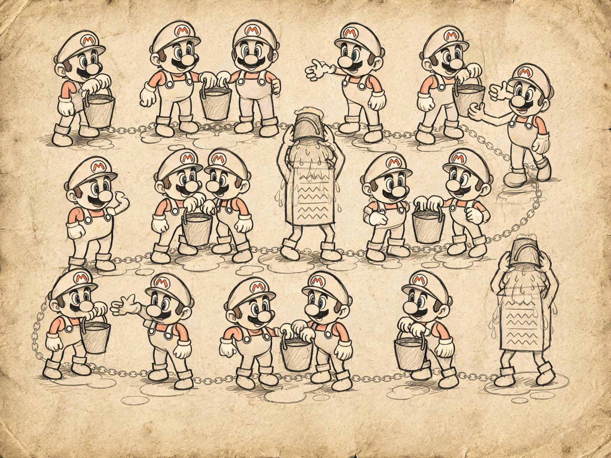
Se un layer riguarda soprattutto una facciata e i livelli piu bassi di un sistema, e un metalayer riguarda descrizioni e strutture, allora pipes e filters sono gia meccanica: "io prendo semplicemente i dati in ingresso, ci faccio qualcosa e metto il risultato in uscita, e chi lo raccoglie dopo e dove lo porta non e un problema mio".
Ogni filtro qui e una piccola utility/codice/logica con una firma chiara "prende questo, restituisce quello". Utility del genere si possono assemblare in una catena o in un grafo, e sopra di esse di solito c'e un orchestratore come nmake, Jam, Bazel, una build farm o il task runner interno del motore, che decide in che ordine eseguire i singoli anelli.
Idealmente otteniamo un insieme di piccole utility combinabili che "per la loro flessibilita e componibilita risolveranno qualsiasi compito", perche una pipeline ha una proprieta del tutto assente in layer e sottosistemi: che la puoi toccare a mano, riordinare, inserire un nuovo filtro nel mezzo e capire cosa e uscito, senza ricompilare l'intero gioco.
Una pipeline di solito si usa come meccanismo per costruire e processare dati, e qui si trova benissimo, perche i dati di solito scorrono in una direzione, e lo stato mutabile tra i filtri o e del tutto assente oppure ha un ulteriore piccolo filtro scritto apposta per gestirlo.
C'e anche chi prova a usare una pipeline come mezzo per processare i messaggi di gioco o come architettura runtime a tutti gli effetti, ma non ho quasi mai visto casi in cui pipes/filters facessero una normale architettura. Il motivo e puramente pratico, perche il runtime non gradisce il "e crollato tutto, facciamo rollback", ha semplicemente bisogno di finire di disegnare il frame, mentre una pipeline per design non ha una normale gestione degli errori, e un filtro che ha visto dati corrotti o li passa avanti con un errore o restituisce qualcosa di completamente strano, e una qualunque di queste opzioni nel runtime significa o un frame andato in crash, o un eroe invisibile, o un effetto strano.
Build offline dei contenuti
Il posto piu comune e ancora vivo per le pipeline nei giochi e la build degli asset del tipo create_normal_map(highpoly.max, lowpoly.max, 666, …), che viene interpretata come un misto dell'istruzione "prendi questi due file, passali attraverso l'utility bake_normal_map e metti il risultato sotto il tal nome".
In forma moderna questa stessa idea si e dispiegata in sistemi a tutti gli effetti come UnrealBuildTool + AutomationTool in Unreal, AssetImporter + AssetPostprocessor + la Addressables Build Pipeline in Unity, la Frostbite Build Farm alla EA Dice, Houdini Engine + PDG (Procedural Dependency Graph) per la generazione procedurale, e sistemi fatti in casa da Naughty Dog, Rockstar, Guerrilla e chiunque altro abbia le risorse per farsene uno proprio.
Architetturalmente questi sistemi sono disposti come un insieme di piccoli importer e cooker, ciascuno dei quali puo convertire un tipo di input in uno o piu tipi di output; tra gli asset c'e un grafo delle dipendenze, costruito a partire dai metadati e dalle dichiarazioni stesse degli importer; e c'e uno scheduler che guarda le date di modifica degli input e decide quali anelli ricalcolare e quali si possono recuperare da una cache, locale o di rete.
Quando un artista in Maya salva Hero_LOD0.fbx, il sistema fa scattare una catena tipo "parser fbx → estrattore di mesh → generatore di tangenti → packer del formato dei vertici → .uasset cotto", in parallelo a essa "parser fbx → estrattore di scheletro → clip di animazione → compressore → animazione scheletrica cotta", e per un singolo modello sorgente ci possono essere una decina di queste catene parallele, e tutto questo serraglio viene processato o dalla build locale dello sviluppatore o da una farm che di notte ricalcola tutto cio che e cambiato durante il giorno.
Le pipeline si usano quasi ovunque per costruire gli shader, perche lo stesso materiale sorgente in Unreal o Unity produce in uscita decine di migliaia di varianti di shader, ciascuna delle quali e un artefatto separato con le proprie dipendenze da piattaforma, qualita, feature level e impostazioni delle texture.
Se tutto questo venisse calcolato come un monolite, qualsiasi modifica a un materiale banale ricalcolerebbe tutto da zero per diverse ore, ma grazie al fatto che la build degli shader e fatta come una pipeline con dipendenze e cache, la ricompilazione reale dopo aver modificato un parametro richiede secondi sulla macchina di uno sviluppatore e minuti su CI.
Per questo si paga nel triage degli errori quando qualcosa si rompe in mezzo alla pipeline. Allora lo sviluppatore riceve un log vago tipo "cook failed for asset X at stage Y", e poi e lasciato a capire da solo esattamente quale filtro ha fallito e perche, perche una pipeline non ha un normale call stack, ha solo una catena di dieci utility, ciascuna delle quali logga qualcosa a modo suo.
In un grande studio di solito c'e una persona dedicata il cui lavoro e tenere in vita proprio questa infrastruttura di debug attorno alla pipeline, perche senza di essa gli artisti vanno dai programmatori ogni trenta minuti con "la mia c... roba di nuovo non si compila".
I grafi DSP nell'audio
Con l'audio la storia e esattamente la stessa della build degli asset, e qui la pipeline ha raggiunto cio che difficilmente si puo raggiungere altrove, ovvero una vita a tutti gli effetti a runtime su decine di milioni di dispositivi. FMOD Studio, Wwise, Unreal MetaSounds, Unity Audio Mixer: sono tutti costruiti attorno a un grafo DSP, in cui la sorgente sonora e il primo filtro in assoluto (un sampler dalla memoria, o un decoder in streaming, o un generatore sintetizzatore), poi vengono gli effetti DSP per canale come low-pass, high-pass, distortion, reverb, occlusion, pitch shift, bus di send/return, poi il master bus, e alla fine di tutto l'uscita hardware.
Ogni anello e il suo piccolo filtro con un input e un output chiari di un array di sample, l'orchestratore e il motore audio, che ogni N millisecondi assembla un nuovo blocco e lo tira attraverso il grafo. La pipeline qui funziona a runtime proprio perche l'audio, a differenza di render e gameplay, ha due caratteristiche. Primo, il flusso dei dati e garantito andare in una direzione, e non c'e praticamente feedback tra "dove scrivere" e "dove leggere", perche non puoi ascoltare un suono che non e ancora stato riprodotto. Secondo, un errore in un filtro nel peggiore dei casi significa "questa traccia suonera storta o restera muta", e questo e certamente spiacevole per il giocatore, ma non e un frame andato in crash ne un personaggio invisibile, percio una pipeline con la sua debole gestione degli errori qui vive tranquilla. E terzo, il sound designer ha assolutamente bisogno della possibilita di sostituire o aggiungere un effetto in qualsiasi punto del grafo, perche quello e tutto il senso della sua professione, e un sistema audio che non lo permette si guadagna l'odio attivo della gente del suono e viene rapidamente sostituito da uno che lo permette.
Lo stack di post-process e la pipeline di rendering
Nella grafica la pipeline vive come catene di post-process, e questo e probabilmente il posto visivamente piu familiare per uno sviluppatore alle prime armi. Unity URP/HDRP lo chiama Volume Profile + Post Process Stack, Unreal lo chiama Post Process Volume, Godot ha il suo WorldEnvironment, Frostbite e id Tech hanno i loro nomi interni, ma architetturalmente e la stessa cosa ovunque.
Dopo che il renderer assembla la scena, comincia una catena di filtri tipo "motion vectors → TAA o DLSS o FSR → SSAO/GTAO → SSR → bloom → depth of field → exposure → tonemap → color grading → film grain → vignette → blit finale", in cui ogni filtro e un compute o screen shader separato che consuma uno o piu target e scrive su un altro, e chi imposta la scena puo abilitare, disabilitare e riordinare questi filtri tramite la UI senza toccare il codice del motore.
Funziona anche a runtime perche soddisfa gli stessi criteri dell'audio. I dati vanno in una direzione, un errore significa "il frame e stato calcolato male, ma il frame e stato calcolato", e l'artista grafico deve poter toccare questi effetti a mano senza chiamare un programmatore.
Quando in una release vedi "wow, un nuovo trailer, hanno aggiunto un figo effetto di polvere nell'aria", allora molto probabilmente questo mese nessun programmatore ha fatto qualcosa specificamente per quell'effetto, il render designer ha semplicemente finalmente acceso fog volume + dust particles + bloom o ha sostituito un paio di filtri e ha registrato il risultato.
Molto spesso una pipeline e incastonata in un metalayer, e il Render Graph in Unreal o il FrameGraph in Frostbite e un metalayer che prende una dichiarazione del frame e la ricostruisce in una sequenza ottimale per la pipeline. Cioe forma una sequenza ottimale di filtri e pass con dipendenze, e viene fuori che una pipeline raramente vive da sola ed e piu spesso nascosta sotto uno o due metalayer che gestiscono l'input dichiarativo, mentre la pipeline gestisce l'esecuzione. Questa e la giusta distribuzione delle responsabilita, perche l'input dichiarativo da un modello chiaro agli autori dei contenuti, e la pipeline da un modello chiaro agli ingegneri.
Dove la pipeline si rompe
La debolezza principale della pipeline e la gestione degli errori, e si manifesta da piu lati contemporaneamente. C'e la perdita di contesto, quando un filtro nel mezzo della catena riceve "dati corrotti" e fisicamente non sa chi li abbia rotti, dove e cosa farci, e tutto cio che puo segnalare e "input non valido", ma "input non valido" nel log di una build farm significa per un artista piu o meno quanto la frase "non si compila niente, proprio niente" significa per un programmatore.
C'e anche l'assenza di transazioni, e se la pipeline ha costruito un livello per 4 ore ed e andata in crash allo stage 18 di 20, hai su disco un insieme di file parzialmente generati che formalmente esistono ma sono semanticamente invalidi, e puoi buttare le 4 ore nella spazzatura.
E infine c'e il debug delle catene lunghe. Piu filtri hai tra input e output, piu e difficile capire in quale esatto stage i dati abbiano cominciato a differire dall'atteso, e qualsiasi infrastruttura di build seria a un certo punto acquisisce un sistema separato per tracciare gli artefatti attraverso tutti gli stage con dump dei risultati intermedi su disco, e questo sistema di solito vive con un team separato e viene finanziato separatamente.
Una caratteristica a parte e lo stato che non entra in un filtro. Una pipeline se la cava splendidamente con compiti in cui ogni anello e una funzione pura dell'input, ma non appena nel sistema compare uno stato globale che filtri diversi devono leggere o scrivere (per esempio un allocatore condiviso, un contatore del tempo condiviso, un log condiviso, un hash di dedup condiviso), la pipeline o comincia a trascinare questo stato attraverso tutti i filtri come parametro esplicito, oppure devi introdurre variabili globali, e in entrambi i casi il bel modello di "anelli indipendenti" si trasforma in "anelli che sanno l'uno dell'altro attraverso una scatola nera".
Quando scegliere pipes/filters
Architetturalmente una pipeline va bene esattamente quando hai un compito con un flusso di dati unidirezionale in cui gli anelli si possono descrivere come "input di tipo A, output di tipo B", e al contempo un errore nel mezzo e o "fermati e lamentati con un umano" o "butta via il risultato e riprova", ma mai "dobbiamo in qualche modo continuare a lavorare con cautela".
Se queste condizioni sono soddisfatte, una pipeline offre la migliore divisione del lavoro del settore tra gli autori dei diversi stage, si incastra perfettamente nel caching e nella build distribuita, e si estende facilmente a nuovi tipi di input e output. E proprio per questo vive dove vive, cioe nella build degli asset, nel bake dei livelli, nel processing offline delle texture, e nelle pipeline non realtime come Houdini e Substance.
Ma se le condizioni non sono soddisfatte, e hai feedback, dipendenza dallo stato o il requisito di "continuare a vivere dopo un errore", la pipeline o comincera ad accumulare stampelle come bus per il contesto, o si trasformera in un sottosistema con un'API simile a una pipeline. Ma quella non sara piu pipes/filters bensi qualcos'altro, e va trattata come qualcos'altro, e forse serve un metalayer o un sottosistema, e il tentativo di allungare pipes/filters su quel compito finira comunque con il dover buttare tutto e riscriverlo da capo.
.fbx .png .max .wav .ttf
| | | | |
v v v v v
+------+ +-----+ +-----+ +-----+
|fbx | |png | |max | |wav | <-- importer,
|->mesh| |->tex| |->geo| |->snd| ognuno per conto suo
+--+---+ +--+--+ +--+--+ +--+--+
| | | |
v v v v
+-------------+ +-------------+
| tangent gen | | compression |
+------+------+ +------+------+
| |
v v
+----------------+ +-------------+
| vertex packer | | texture |
| + LOD chain | | block comp |
+-------+--------+ +------+------+
| |
+--------+----------+
v
+-------------+
| cooker | <-- cooker finale
| .uasset/ | degli artefatti del livello
| .pak/.iostore|
+------+------+
v
runtime buildSe proviamo a formulare una regola pratica di applicazione, una pipeline di filtri e il costrutto architetturale piu economico in termini di carico mentale che esista, e al contempo il piu pericoloso quando provi a uscire dalla sua zona di comfort.
Nella zona di comfort, cioe nella build degli asset, nel processing offline, nel DSP audio e nelle catene di post-process, funziona quasi gratis, e qualsiasi motore che qui prova a cavarsela senza una pipeline sembra strano e va lento.
Fuori dalla zona di comfort, cioe nel processing dei messaggi di gioco, nella logica di gameplay a runtime e nei sistemi di combattimento, i tentativi di costruire una pipeline di filtri finiscono piu o meno allo stesso modo: strisciando indietro dentro i sottosistemi, e l'unico motivo per cui lo ripeto dopo vent'anni e che uno sviluppatore fresco con una nuova brillante idea "facciamo dell'intero gioco un Reactive Stream" compare nel settore circa una volta ogni paio di mesi.
Il microkernel
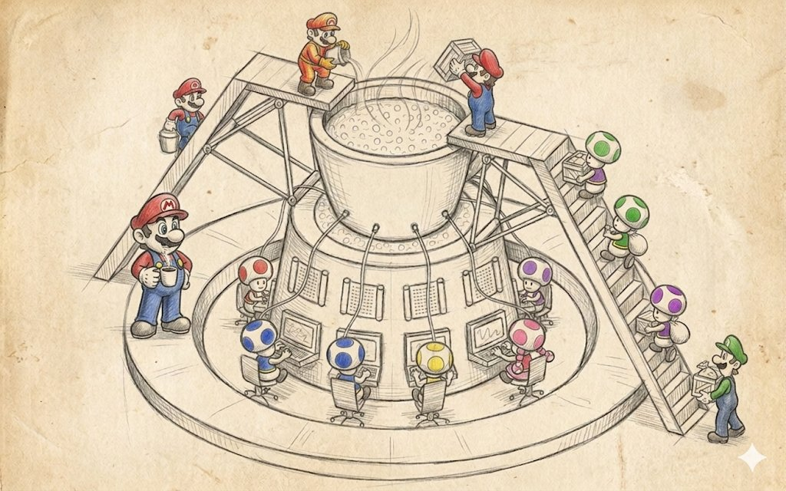
Questo è forse il più frainteso tra i "grandi" pattern, perché nei manuali viene di solito disegnato come "un piccolo core ordinato al centro e una moltitudine di moduli ben disposti tutt'intorno", e da questa immagine il lettore ricava la piacevole illusione che il microkernel riguardi la bellezza e la correttezza piuttosto che qualcosa di applicato.
In realtà questa immagine nasconde un'idea molto più interessante, e cioè che il microkernel è affine al contratto "non so e non voglio sapere quali pezzi di funzionalità avrò esattamente su questo progetto". I manuali descrivono il microkernel come un modo di costruire un sistema estensibile separando un insieme di meccanismi semplici per costruire e usare interfacce.
I plugin nella maggior parte dei motori sono un'applicazione quasi corretta di questo pattern. Se proviamo a distinguere il microkernel dai layer e dai sottosistemi, otteniamo che i layer hanno una torre verticale, i sottosistemi una dispersione orizzontale di cerchi con frecce, mentre il microkernel ha un grande cerchio al centro, attorno al quale spuntano radialmente cerchi di estensione più piccoli, e in ciascun cerchio di estensione può arrivare uno o più plugin.
Inoltre, i plugin non sono tenuti a conoscersi tra loro, il core non è tenuto a sapere in anticipo cosa esattamente gli verrà collegato, e l'insieme stesso dei plugin può differire da un avvio all'altro. Questo è un livello di flessibilità completamente diverso rispetto a layer e sottosistemi, perché i layer ti proteggono dai cambiamenti nell'implementazione, i sottosistemi ti proteggono dalla crescita numerica del team, e il microkernel ti protegge dal fatto che non conosci in anticipo l'elenco completo delle feature, ma ti aspetti che alcune di esse compaiano dopo il rilascio, arrivino dai modder, oppure vengano abilitate su abbonamento.
In cosa un microkernel differisce da una semplice DLL e da un semplice plugin
Qualsiasi sistema che abbia il caricamento dinamico di librerie ha una possibilità di essere chiamato "plugin-based", ma questo non è ancora un microkernel, e qui bisogna ricordare quattro caratteristiche distintive.
Primo, il core dichiara un'interfaccia minimale, stabile e versionata dei punti di estensione che non cambia senza gravi motivi, perché qualsiasi sua modifica rompe tutti i plugin esistenti in un colpo solo. Secondo, il core non sa nulla dei plugin specifici, e in particolare non incastona i loro nomi e tipi nel proprio codice, ma ottiene informazioni su di essi attraverso un meccanismo di discovery standard, di solito scandendo una cartella su disco, leggendo un manifest, registrandosi in un registry, oppure chiamando una funzione esportata come CreateInterface. Terzo, i plugin devono poter morire senza conseguenze per il core, ovvero lo scaricamento di un plugin o il suo crash non deve distruggere il thread di esecuzione principale, e per questo il core mantiene meccanismi di isolamento attorno ai plugin, da un semplice try/catch e l'azzeramento dei puntatori fino a processi sandbox con IPC. E infine, i plugin non dipendono l'uno dall'altro, e qualsiasi comunicazione tra di loro passa attraverso il core o attraverso i servizi standard del core, perché altrimenti l'idea stessa di "un piccolo core più estensioni indipendenti" si trasforma, già alla primissima release, in ordinari sottosistemi con un registry globale.
Queste quattro caratteristiche sono raramente tutte soddisfatte insieme, e i motori di gioco reali di solito te ne danno tre e mezzo su quattro, perché quasi tutti coloro che dichiarano di avere un microkernel nella pratica barano su almeno uno dei quattro punti, il più delle volte il primo, concedendosi di rompere l'ABI tra le major version, oppure il quarto, permettendo ai plugin di raggiungersi a vicenda direttamente attraverso cast di tipo e nomi.
Dove vive un microkernel nei giochi reali
Il template di gioco più chiaro di un microkernel è il file system virtuale di un gioco sopra i file pak, e qui questo pattern vive esattamente come descritto nel manuale. Il core del VFS dichiara un'interfaccia molto ristretta come IFileSystem con un paio di metodi Open(path) -> IFile*, Exists(path), Mount(point, provider), e sotto questa interfaccia possono registrarsi diversi provider.
Uno lavora con il file system reale del sistema operativo, un altro può leggere da .pak (come Quake), un terzo da .vpk (Valve, Source Engine), un quarto dai chunk .pak dello iostore (Unreal Engine 5), un quinto da .bsa e .ba2 (Bethesda), un sesto da .npk (Quake), un settimo dalla memoria, un ottavo da uno storage di rete, e così via. Dal punto di vista del codice di gameplay è sempre lo stesso Open("textures/hero_d.tga"), e dal punto di vista del VFS è una lookup nel registry dei provider e la delega della richiesta a quello giusto, e il giocatore non si rompe mai le gambe sulle migliaia di piccoli file dentro un grande archivio, perché l'archivio è trasparente per lui.
Questo schema si è rivelato così comodo da attecchire nella maggior parte dei motori, a partire da Quake nel 1996, che inventò .pak, poi Half-Life nel 1998, che realizzò .wad/.pak, ed è fiorito nel Source Engine, che portò l'idea al .vpk con la suddivisione in chunk e la possibilità di sovrapporre più archivi con priorità e patch. In ogni caso il core è il gestore del VFS, i plugin sono i moduli provider per formati specifici, e la community di modding ottiene un enorme bonus sotto forma dell'aggiunta di nuovi formati di archivio che non richiedono la modifica del motore.
Unreal come doppio microkernel
Unreal Engine è un caso interessante a sé, perché ha un microkernel su due livelli contemporaneamente, ma sono responsabili di cose diverse. Il core inferiore, chiamiamolo così, è un sistema modulare basato su IModuleInterface e .Build.cs, in cui l'intero motore è tagliato in centinaia di moduli (Core, CoreUObject, Engine, RenderCore, RHI, Renderer, SlateCore, Slate, UMG, OnlineSubsystem, e decine di altri). Ciascun modulo del core inferiore viene compilato come artefatto separato e collegato al core attraverso un unico meccanismo.
Quando scrivi PublicDependencyModuleNames.AddRange(new string[]{ "Core", "Engine", "UMG" }), partecipi al sistema di discovery e avvio dei moduli, che vede ciascun modulo attraverso la sua funzione esportata IMPLEMENT_MODULE e li tira su nell'ordine giusto, invia gli eventi StartupModule e ShutdownModule, supportando l'hot reload grazie al quale il Live Coding in UE4/UE5 è affatto possibile.
Il core superiore è invece costituito dai plugin tramite .uplugin, e sono organizzati esattamente come descritto nel manuale. Un plugin è un insieme di moduli con il proprio manifest che descrive quali feature offre il plugin, quali moduli ha al suo interno, su quali piattaforme funziona, se è obbligatorio o opzionale, in quali fasi di caricamento del motore deve tirarsi su (PreDefault, Default, PostEngineInit, PostDefault), e se ha dipendenze da altri plugin.
Quando Epic rilascia Lumen, Nanite, MetaHumans, Niagara, Chaos Vehicles, Online Subsystem Steam, tutti questi sono tecnicamente plugin, non parte del motore, e possono essere disattivati completamente con un solo checkbox nel .uproject, dopodiché il motore si compila semplicemente senza di essi e senza la loro funzionalità. Lo stesso meccanismo è usato dagli sviluppatori terzi, che pubblicano di tutto sull'Unreal Marketplace, da modelli e materiali fino a veri e propri sottosistemi di render e reti neurali per l'IA, e questo funziona perché il core superiore e quello inferiore sono separati l'uno dall'altro, e ciascuno è responsabile del proprio livello di isolamento.
Unity, Bevy, Godot e diversi gradi di radicalismo del microkernel
Unity alcuni anni fa prese la decisione strategica di suddividere il suo motore un tempo monolitico in pacchetti tramite l'Unity Package Manager, e questo divenne di fatto l'inizio di un movimento verso un microkernel da parte di un motore che originariamente non lo era. Oggi in Unity quasi tutti i grandi sottosistemi vengono distribuiti come pacchetti: URP, HDRP, TextMesh Pro, Cinemachine, Burst, Entities (DOTS), Netcode for GameObjects, Visual Scripting, XR Interaction Toolkit, e ciascuno di questi pacchetti ha un manifest con dipendenze, versioni e compatibilità, e un progetto Unity oggi viene assemblato non come "tutta Unity dentro più il tuo codice" ma come "un piccolo core di Unity più un insieme di pacchetti che hai scelto più il tuo codice".
Questo dà a Unity la possibilità di sperimentare con nuovi sottosistemi senza rompere la compatibilità nel motore principale, e così un nuovo sistema di render esce come pacchetto in preview, viene rodato per un paio d'anni, e se attecchisce passa nella linea principale.
Bevy ha portato l'idea a un estremo radicale; non ha affatto il concetto di "core del motore", c'è un App e un insieme di plugin, e letteralmente ogni feature, incluso il rendering, la finestra, l'input, l'ECS, il tempo, il registry dei tipi, viene aggiunta all'App attraverso app.add_plugin(…), e un progetto privo del plugin di render si compila ed esegue tranquillamente come server headless, perché il core al suo interno è così piccolo che di fatto funziona senza metà dei plugin.
Godot ha preso un'altra strada; ha un core monolitico grasso, ma all'esterno pende il meccanismo GDExtension, che ti permette di scrivere plugin in C++, Rust, Swift, qualsiasi linguaggio con un ABI C, e collegarli al motore attraverso lo stesso insieme di interfacce virtuali che il motore usa per i propri nodi.
Tutti e tre gli approcci sono un microkernel di grado variabile di radicalismo, ed è interessante che più grande è il team e più spesso il progetto ha bisogno di compilarsi in configurazioni diverse (mobile, console, web, server headless), più forte è la pressione a muoversi nella direzione di Bevy e meno il team vuole restare come Godot.
Il microkernel e il modding
Una linea a sé nella storia dei giochi è id Tech 3 e la sua QVM (Quake Virtual Machine), che Carmack iniziò a realizzare già nel 1999 e che è ancora oggi un esempio da manuale di come un microkernel nei giochi possa risolvere contemporaneamente i compiti del modding, del supporto multipiattaforma e dell'aggiornamento del gameplay indipendentemente dal motore.
L'idea era di fare in modo che tutto il codice di gameplay di Quake III (fisica del giocatore, armi, IA dei bot, la UI del menu, la logica del server) fosse scritto in C, ma non compilato in codice nativo; invece, attraverso lo speciale compilatore LCC veniva compilato in bytecode per la sua stessa macchina virtuale QVM, e a runtime il motore carica tre programmi QVM separati (cgame.qvm per il gameplay client, ui.qvm per il menu, qagame.qvm per la logica server), li esegue nella propria sandbox con un insieme molto ristretto di chiamate verso l'esterno, e documenta pubblicamente questo insieme di system call per i modder.
L'effetto fu fantastico. Primo, i modder poterono cambiare il gameplay di Quake III senza avere i sorgenti del motore, e da questo nacquero Defrag, CPMA, OSP, Urban Terror (che in seguito divenne un gioco a sé) e decine di altre mod. Secondo, poiché la QVM girava dentro una sandbox, i modder non avevano modo di scrivervi virus o cheat che accedessero direttamente alla memoria del motore, e questa resta a tutt'oggi una delle soluzioni più eleganti al problema della sicurezza nel modding. Terzo, il formato binario QVM era multipiattaforma, e lo stesso file .qvm funzionava su Windows, Linux e Mac, grazie a cui la scena delle mod di Quake III fu una delle più internazionali del settore.
E anche il motore poteva aggiornarsi senza costringere a un aggiornamento del gameplay, e viceversa, perché il confine tra i due non stava nel codice C ma nell'API astratta della macchina virtuale. Quindici anni dopo, Roblox e Dota 2 con Counter-Strike 2 hanno preso esattamente la stessa strada, in cui lo scripting di gameplay interno è organizzato come un microkernel con sandbox, e i contenuti di gioco degli autori dei contenuti dentro il gioco sono in sostanza plugin del motore che possono fare solo ciò che il motore ha loro consentito. Quindi se vedi che un nuovo cappello in TF2 o un nuovo oggetto in Dota 2 entra nel gioco attraverso un normale aggiornamento di contenuti anziché una patch del motore, stai vedendo esattamente lo stesso trucco che Carmack inventò nel 1999.
Il Source Engine e il microkernel
Il Source Engine di Valve è un caso in cui l'idea del microkernel si è diffusa in tutto il motore al punto da diventare difficile da distinguere dai sottosistemi. Source è composto da un insieme di DLL (engine, client, server, vphysics, materialsystem, studiorender, vguimatsurface, e una dozzina di altre), ciascuna delle quali al caricamento esporta una funzione CreateInterface(const char* name, int* return_code). Il motore all'avvio percorre queste DLL una per una dalla lista, chiede a ciascuna a turno le interfacce per le loro versioni (VEngineClient013, IPhysics032, IStudioRender026), le mette in un registry condiviso, e poi qualsiasi codice in qualsiasi DLL può, attraverso lo stesso CreateInterface, ottenere un puntatore a un servizio di qualunque altra DLL.
Questa è l'idea del microkernel nella sua forma più pura, perché il core del motore è in sostanza solo questa stessa registrazione di servizi più un paio di dispatcher di comandi e cvar, mentre tutta la restante funzionalità è implementata come un insieme di servizi collegati attraverso un ABI stabile. Con questo meccanismo Valve fa contemporaneamente sia modding sia l'assemblaggio del proprio motore da moduli sviluppati indipendentemente, ma il prezzo di questo approccio diventa chiaro se provi ad aggiornare il numero di versione di una delle interfacce in Source — ora qualsiasi DLL che ha richiesto il vecchio numero, dopo l'aggiornamento, andrà in crash con un nullptr da CreateInterface, e così in Source non puoi semplicemente aggiungere un metodo a IPhysics, devi aggiungerlo come IPhysics033, dare la vecchia IPhysics032 come alias con un'implementazione proxy, e mantenere entrambe le versioni in parallelo finché tutte le mod e i prodotti non migrano.
Questo è proprio il prezzo di "un ABI stabile" che ho menzionato all'inizio della sezione, e nei grandi sistemi a microkernel vivi si trasforma col tempo nella principale voce di spesa dello sviluppo.
Dove il microkernel si rompe
Di solito sono diversi punti, in ciascuno dei quali uno sviluppatore c'è già stato almeno una volta e ha pianto. Il primo e più doloroso è un ABI fragile, ovvero l'instabilità dell'interfaccia binaria, perché il microkernel dipende radicalmente dal fatto che i plugin siano compilati per lo stesso ABI del core. Al core basta cambiare la dimensione di una struttura di base, aggiungere un metodo virtuale in mezzo alla tabella, passare il compilatore da una versione all'altra, oppure attivare un nuovo flag di ottimizzazione, e tutti i plugin compilati con la vecchia versione nel migliore dei casi vanno in crash all'avvio, nel peggiore funzionano e corrompono la memoria. In UE5 questo si risolve legando rigidamente i plugin alla versione del motore fin nella release di bugfix; per il motore di Skyrim si risolve con la community che mantiene diversi fork di SKSE per diverse versioni binarie; in Source si risolve con i numeri di interfaccia. Ciascuna di queste soluzioni costa tempo e persone.
Il secondo problema è la performance delle chiamate attraverso il core, perché ogni volta che un plugin chiama un servizio del core, otteniamo una chiamata virtuale attraverso un'interfaccia, un accesso alla tabella del plugin, a volte uno switch tra DLL che attraversa segmenti di codice, e un cache miss all'indirizzo di un altro sottosistema. Per le operazioni rare questo è gratis, ma per i punti in cui un plugin chiama il core diecimila volte per frame comincia a incidere sensibilmente sul tempo di frame. Alla lunga c'è sempre un compromesso tra la purezza delle idee del microkernel e il costo di ogni attraversamento del confine core/plugin.
E l'ultimo è la difficoltà di debug, perché in un sistema del genere un errore in un plugin appare all'esterno come un errore nel core, un errore nel core appare come un errore in un plugin, e un doppio errore appare come "beh, è crollato tutto, e dove esattamente non è chiaro". I buoni sistemi investono nel tracciamento delle chiamate attraverso i confini, in un log dettagliato del registry dei plugin, e in crash report che annotano quale plugin di quale versione ha chiamato il core di quale versione in quale momento, e senza questa infrastruttura l'intero sistema si trasforma in una scatola nera in cui nessuno capisce nulla.
Quando scegliere un microkernel e quando no
È ragionevole scegliere un microkernel quando hai un ecosistema esterno a cui vuoi dare la possibilità di estendere il gioco o il motore senza ricompilarlo. Questo riguarda prima di tutto i giochi orientati al modding (Skyrim, Minecraft, Factorio, Cities: Skylines, Civilization, ARK, Rimworld), i motori general-purpose (UE, Unity, Godot, Bevy, CryEngine, O3DE), e i giochi live-service con aggiornamenti di contenuti regolari (Dota 2, CS2, Fortnite, Roblox), perché in tutti e tre i casi sai in anticipo che l'elenco delle feature non è chiuso, che parte di esse vivrà separatamente dal core, e che sei pronto a pagare per la stabilità dell'ABI e per l'infrastruttura di estensione in cambio di questa possibilità.
Ha senso anche usare un microkernel all'interno di una sola azienda se hai più prodotti su un unico motore (come Activision con Call of Duty sul proprio motore, o EA con Frostbite, o Sony Interactive con Decima tra Killzone, Death Stranding e Horizon), perché team diversi su giochi diversi possono convivere con lo stesso core e i propri insiemi di plugin.
È ragionevole non scegliere un microkernel quando hai un solo gioco, un piccolo team e un elenco chiuso di feature, perché in questo caso il livello aggiuntivo di transizioni attraverso il registry dei plugin è puro spreco di tempo e di budget di frame, e ordinari sottosistemi e un paio di librerie di utility ti saranno molto più utili. Ed è specialmente da evitare abbracciare questa idea se non hai le risorse per mantenere un ABI stabile e l'infrastruttura di estensione, perché un microkernel senza stabilità è come Petka senza Vasilij Ivanyč — beh, si può, ma il senso delle barzellette è ormai perduto.
+--------------+
| Plugin |
| Audio |
+-------+------+
|
+------+ | +------+
|Plugin| | |Plugin|
|Render|---+ | +-----| Net |
+------+ | | | +------+
v v v
+---------------+
| |
| Microkernel | <-- un piccolo core stabile
| (servizi, | con un ABI stabile e un
| registry, | registry di estensioni
| discovery) |
| |
+---------------+
^ ^ ^
| | |
+------+ | | | +------+
|Plugin|---+ | +---|Plugin|
| AI | | | Mod |
+------+ | +------+
+-------+------+
| Plugin |
| VFS pak |
+--------------+Se proviamo a formulare una qualche regola, suona così: il microkernel è un pattern con una zona di applicabilità molto ristretta ma profonda, e non dovresti trascinarlo fuori da quella zona, perché non riguarda la modularità in generale ma l'apertura dell'elenco delle feature nel tempo. Se il tuo progetto è aperto nel tempo perché stai facendo un motore, un gioco moddabile o una piattaforma live-service, un microkernel ripaga profumatamente e piuttosto in fretta. Ma se stai facendo un singolo gioco con un elenco di feature fisso, un piccolo team e un rilascio una tantum, il microkernel si trasforma rapidamente in un costoso ornamento che divora il budget e non restituisce nulla in cambio.
La blackboard
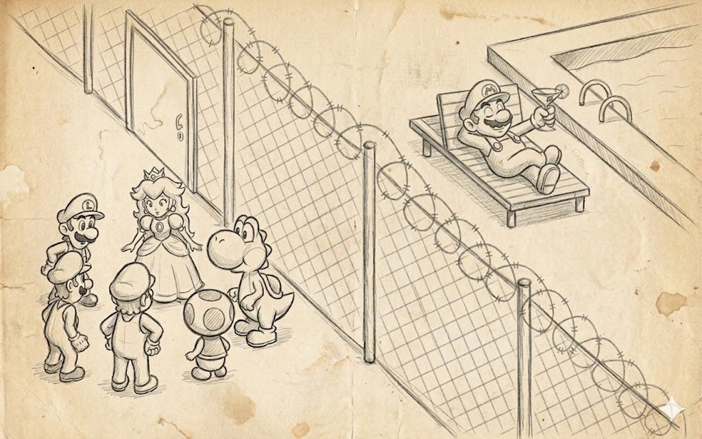
La blackboard è probabilmente il più astratto di tutti i pattern "grandi", molto amato alle conferenze e negli articoli e molto detestato da scrivere a mano in produzione. Eppure è in qualche modo stranamente filtrata quasi ovunque nell'industria gamedev moderna, solo sotto altri nomi e mescolata con altri pattern.
La sua storia è piuttosto veneranda e viene dalla ricerca sull'IA degli anni '70, quando alla Carnegie Mellon provavano a riconoscere il parlato e capirono che un solo specialista non ce la faceva, e fecero lavorare insieme diversi specialisti di natura diversa (sui fonemi, sulle parole, sulla grammatica, sulla semantica), ciascuno dei quali guardava una struttura dati condivisa, vedeva lì le ipotesi intermedie dei colleghi e vi scriveva anche le proprie.
Ne è nata l'idea che invece di far chiamare i moduli l'uno con l'altro direttamente tramite interfacce, si dovrebbe mettere una lavagna condivisa tra loro e lasciare che ogni modulo pubblichi in modo indipendente su questa lavagna le proprie osservazioni, ipotesi e conclusioni, e si sottoscriva in modo indipendente ai cambiamenti, senza sapere né voler sapere chi esattamente le scrive.
Se, come ricorderai, un layer è "parla attraverso la mia facciata", e un sottosistema è "conosciamoci un pochino a vicenda", allora una blackboard è già "nessuno chiama nessuno, comunichiamo attraverso fatti su una lavagna condivisa". E questo è tutto, davvero... Se i layer stanno in verticale, i sottosistemi come uno sparpaglio di cerchi, una pipeline come una freccia, un microkernel come una stella, allora una blackboard sembra un grosso e grasso piano rettangolare al centro, dentro il quale guardano da diversi lati i plugin seduti intorno, senza alcuna freccia tra i plugin.
In cosa una blackboard è fondamentalmente diversa da un sottosistema con un oggetto condiviso? Questa domanda sorge inevitabilmente, perché i nostri sottosistemi comunicano già attraverso un oggetto World condiviso, e sembra che una blackboard sia la stessa cosa, solo messa da parte e inchiodata. Ma anzitutto una blackboard non ha il concetto di "proprietario dei dati", qualsiasi agente/plugin ha il diritto di scrivere qualsiasi chiave, e nessuno è formalmente considerato la fonte di verità, mentre nei sottosistemi c'è quasi sempre un proprietario, la fisica possiede il mondo fisico, il renderer possiede la coda di disegno, e questo è fissato esplicitamente nel codice.
Inoltre, una blackboard non ha il concetto di "chiamata", nessuno chiama nessuno, si limitano a scrivere e leggere, e questa asimmetria ti permette di aggiungere e rimuovere agenti senza coordinarti con i vicini. E in una blackboard la semantica delle chiavi è dichiarata separatamente dai dati, cioè l'insieme delle chiavi è un artefatto indipendente che esiste a prescindere da chi in questo momento si appoggia a queste chiavi e come, e può essere modificato separatamente in uno strumento, versionato separatamente, validato separatamente per l'assenza di campi inutilizzati.
Queste differenze rendono una blackboard un'eccellente sede per un compito molto specifico, ovvero l'IA e il processo decisionale in condizioni di informazione incompleta, dove hai diverse fonti di conoscenza (vista, udito, memoria, un ordine dal gruppo, un'istruzione dall'AI director, lo stato del mondo), e dove il consumatore principale di queste informazioni non è più un modulo ma un "bot nel gioco" che ogni N tick corre alla lavagna, guarda cosa c'è di nuovo e prende una decisione. Quindi una blackboard nell'industria vive principalmente lì, nell'IA, e quasi non vive dove hai flussi di dati ben ordinati con proprietari chiari.
Blackboard di Unreal più Behavior Tree
L'implementazione più ordinata di una blackboard nello sviluppo moderno è la AI Blackboard di Unreal, ed è buona perché puoi aprirla nell'editor e vederla letteralmente sullo schermo. L'oggetto UBlackboardData è dove dichiari in anticipo un insieme di chiavi con i loro tipi (Object, Vector, Float, Bool, Enum, Name, Class), imposti se necessario se queste chiavi si sincronizzano tra i bot di uno stesso gruppo, e lo salvi come file di progetto. L'oggetto UBlackboardComponent è l'istanza runtime di questo schema, una per bot, che può leggere e scrivere valori per queste chiavi, metterli in cache e inviare eventi ai sottoscrittori quando i valori cambiano.
Un Behavior Tree costruito su questo funziona come uno dei bot che interrogano la lavagna, e i suoi nodi BlackboardDecorator controllano i valori delle chiavi e decidono lungo quale ramo dell'albero scendere, mentre i suoi nodi periodicamente calcolano nuovi valori e li scrivono sulla lavagna, oppure prendono i valori correnti dalla lavagna e li traducono in comandi di livello inferiore (movimento, anim, arma). In parallelo al Behavior Tree la lavagna è usata da altri sistemi del motore. EQS (Environment Query System) chiede al mondo potenziali punti di copertura o bersagli e scrive il risultato sulla blackboard sotto il nome BestCoverLocation o TargetActor. AIPerception tramite l'UAIPerceptionComponent ascolta gli eventi di vista e udito, accumula una lista di sorgenti di stimolo rilevate e scrive una chiave come EnemyActor sulla blackboard quando vede qualcuno di ostile.
Un gruppo di bot può condividere alcune chiavi in una speciale Shared Blackboard per coordinarsi nell'attaccare uno stesso giocatore o nel disperdersi tra coperture diverse. E dal punto di vista di un programmatore gameplay è molto importante che in questo schema nessun componente chiami direttamente un altro componente, l'udito non sa nulla del behavior tree, l'albero non sa nulla del sistema di copertura, eppure lavorano tutti in concerto perché hanno una struttura dati condivisa e un linguaggio condiviso di chiavi.
Questo dà a Unreal pro molto caratteristici e contro altrettanto caratteristici. Tra i pro è subito chiaro che un nuovo programmatore di IA può aggiungere una fonte di conoscenza completamente nuova (per esempio, un sistema per udire gli spari indipendentemente dalla linea di vista) semplicemente scrivendo un componente che crea una chiave LastGunfireLocation sulla lavagna, e il comportamento inizierà a vederla e a reagire senza richiedere modifiche al codice. Tra i contro è altrettanto chiaro che le chiavi sono uno spazio dei nomi piatto, e in un grande progetto compaiono presto chiavi con nomi sospettosamente simili — EnemyActor, TargetActor, LastKnownEnemy, CurrentThreat — tra cui esiste una differenza semantica, ma nessuno dei nuovi sviluppatori ricorda esattamente quale sia, e compaiono bug divertenti come "il bot spara a uno e cammina verso un altro". Questo si risolve documentando la lavagna, con code review e pulizie periodiche, ma questo, come capisci, non è affatto "gratis".
F.E.A.R. e il GOAP su una blackboard
La celebre IA di F.E.A.R. (Monolith, 2005) è probabilmente il caso più spesso citato di uso di una blackboard nell'industria, anche se l'idea stessa fu poi impacchettata nel brand più riconoscibile GOAP (Goal Oriented Action Planning). Sotto il cofano del GOAP di F.E.A.R. c'era proprio una blackboard, sulla quale il comportamento del bot, la squadra e la memoria scrivevano le loro osservazioni (dove ho visto il giocatore l'ultima volta, quale copertura c'è adesso, se ci sono compagni nelle vicinanze, quanto tempo fa ci hanno sparato, quante munizioni ho), mentre il planner GOAP leggeva lo stato corrente dalla lavagna, vi sovrapponeva un obiettivo di "uccidere il giocatore" o "ritirarsi con onore", e attraverso una serie di azioni collegate con precondizioni ed effetti costruiva un piano d'azione per il paio di secondi successivi.
Il risultato fu scioccante per l'industria di quel tempo, perché i soldati in F.E.A.R. erano spesso più intelligenti dei giocatori, si coprivano a vicenda, si ritiravano e aggiravano sui fianchi, e dietro tutto questo non c'era una macchina a stati ingombrante da centinaia di stati ma un insieme relativamente piccolo di azioni e una lavagna condivisa che tutti gli agenti tenevano aggiornata. La cosa più istruttiva di questa storia è che gli sviluppatori raccontarono poi pubblicamente molte volte, e il talk "Three States and a Plan: The AI of F.E.A.R." è ancora nella GDC Vault, che gran parte dello sviluppo non è andata nel planner stesso, che era relativamente semplice, ma nel tuning della blackboard. Nell'ideare il giusto insieme di chiavi, nelle regole di chi le aggiorna e quando, nella disciplina del "non scrivere sulla lavagna ciò che hai appena letto da essa senza tenere conto del delta", nel profiling, perché la lavagna veniva interrogata migliaia di volte a frame su decine di bot, e qualsiasi getter diventava immediatamente un collo di bottiglia. Questa è una caratteristica molto tipica dei sistemi a blackboard nel mondo dei giochi, quando il pattern stesso è semplice, mentre il 90% del lavoro sta nella gestione delle chiavi e nel tooling di debug.
Halo 2 e la blackboard come architettura
Halo 2 portò probabilmente il passo più audace nello sviluppo dei bot, mostrando che l'intera architettura dell'IA può essere costruita su una blackboard. I loro bot erano di fatto un insieme di comportamenti, ognuno dei quali guardava la lavagna e prendeva decisioni, mentre la lavagna stessa era gerarchica, e ogni bot aveva la propria lavagna locale, il gruppo di bot una lavagna di squadra condivisa, e la missione una lavagna globale di livello, e attraverso questa gerarchia l'informazione saliva dal basso verso l'alto e scendeva dall'alto verso il basso. Quando il comandante di squadra diceva "ritirata", in realtà scriveva la chiave SquadOrder = Retreat sulla lavagna di squadra, e ogni membro della squadra vedeva questo cambiamento e reagiva a modo suo: uno iniziava a lanciare una granata di copertura, il secondo strisciava verso la copertura, il terzo curava un compagno.
Questo ci dà un'osservazione utile, ovvero che una blackboard funziona meravigliosamente con una gerarchia di cooperazione, e che diversi livelli decisionali possono vivere su diverse lavagne di uno stesso formato, e questo si mappa naturalmente su "individuo, gruppo, esercito, campagna". Più tardi un approccio simile fu adottato da Killzone 2/3, The Last of Us e Crysis, e in qualsiasi sparatutto tattico più o meno moderno con azioni nemiche coordinate c'è molto probabilmente sotto il cofano qualche variazione di una blackboard gerarchica.
The Sims e la blackboard rovesciata
The Sims realizzò una delle variazioni più eleganti di una blackboard, in cui la lavagna è essenzialmente il mondo di gioco stesso, e gli agenti sono i sim. L'idea, descritta nelle pubblicazioni di Ken Forbus e Will Wright e in un mucchio di interviste successive al team Maxis, è che un oggetto in The Sims (un divano, un frigo, una vasca, una TV) fa pubblicità di sé ai sim attraverso un sistema di "punti", il divano dice "ti do +Comfort -Energy se ti siedi su di me", il frigo dice "ti do +Fame ma richiedo di camminare 10 caselle", la vasca dice "ti do +Igiene se non sei al lavoro", e questi "punti" sono disposti in uno spazio condiviso su cui i sim intorno possono leggerli e confrontarli con i propri bisogni.
Il sim stesso in ogni momento ha un vettore di bisogni (Hunger, Energy, Bladder, Hygiene, Social, Fun, Comfort, Environment), guarda tutti i "punti" intorno, calcola per ciascuno un'utilità come funzione dei propri bisogni e del costo del percorso, sceglie il migliore e va a eseguirlo. Questa è un'inversione molto bella di una blackboard, perché la lavagna qui non è una struttura separata ma il mondo stesso nel ruolo di lavagna, ed estendere il gioco con nuovi oggetti estende automaticamente le opzioni disponibili per i sim senza modificare la loro IA.
In questo approccio le espansioni e i DLC funzionano completamente gratis, e un nuovo oggetto in The Sims 2 Pets mostra semplicemente i propri "punti", e i sim iniziano a usarlo senza sapere in anticipo dell'esistenza di questo oggetto, e nessuno scrive una riga di nuovo codice IA. A proposito, considero The Sims l'implementazione più elegante di una blackboard nell'industria, e chiunque pianifichi di costruire un'IA su una blackboard dovrebbe guardare come è costruito il gioco per percepire la gamma delle possibilità.
Dove altro vive una blackboard
Se guardi da vicino, una blackboard nella forma di "una struttura dati condivisa attraverso cui diversi moduli si scambiano fatti" si è insinuata nell'industria moderna in moltissimi posti. Semplicemente si chiama in modo diverso. Le influence map negli RTS, da Empire Earth e StarCraft a Total War: Warhammer III e Company of Heroes 3, sono la blackboard più naturale, in cui le celle della mappa fungono da chiavi, e diverse fonti di conoscenza (unità nemiche, unità alleate, risorse, zone di pericolo, bersagli dell'IA) scrivono le loro stime numeriche in queste celle, sopra le quali lo stratega IA prende decisioni sulla direzione di attacco e difesa. Le threat table negli MMO, in World of Warcraft, FFXIV, Guild Wars 2, sono un'altra blackboard, in cui le chiavi sono la lista dei giocatori e i valori sono l'aggressione accumulata, e i boss leggono questa lavagna a ogni tick e decidono su chi passare.
L'ECS come strumento architetturale può anch'esso essere letto come una blackboard globale, in cui le chiavi sono (Entity, ComponentType) e gli agenti sono i sistemi che leggono e scrivono componenti. Questa analogia non è forzata, perché in EnTT, flecs, Bevy ECS, Unity DOTS l'accesso ai dati avviene proprio attraverso la dichiarazione "scrivo questi componenti, leggo quelli", e il mondo stesso (World o Registry) funge da lavagna, e i sistemi da agenti. I ricercatori degli anni '70 difficilmente avrebbero potuto prevederlo, ma in forma moderna sembra che la blackboard sia cresciuta, si sia trasformata in una vera architettura data-oriented ed sia diventata il modo standard di scrivere codice server nei motori moderni.
Alla stessa serie dovremmo aggiungere i GameplayTags in Unreal e i sistemi di tag proprietari in Frostbite e Decima, che sono essenzialmente ancora un altro nome sulla lavagna senza un valore (o con un valore implicito "true"), e il World State in senso stretto dei planner GOAP, e l'AI Director in Left 4 Dead, che guarda in una lavagna condivisa dello stato emotivo dei giocatori (quanto tempo fa hanno sparato, quanto è divisa la squadra, quanto tempo è passato dall'attacco) e decide quando mettere in scena la prossima ondata di zombie. Quando vedi nel diagramma architetturale del sistema di un gioco un grande "World State" centrale verso cui arrivano frecce da tutti i lati, quello è una blackboard, solo rinominata per comodità dei marketer.
Dove una blackboard si rompe
Ci sono diversi problemi principali. Il primo sono le race sull'accesso ai dati, perché una blackboard per sua idea permette più scritture della stessa chiave, e se in un tick tre fonti di conoscenza aggiornano la chiave EnemyActor con le proprie versioni (una per vista, la seconda per udito, la terza per ordine di squadra), allora il valore finale è determinato da chi ha scritto per ultimo, e questo dipende fortemente dall'ordine in cui il motore aggiorna i componenti, e qualsiasi cambiamento a questo ordine cambia silenziosamente il comportamento dell'IA. Questo si cura o con una prioritizzazione esplicita delle fonti, o separando le chiavi in distinti spazi di dominio ("ciò che so per vista" separato da "ciò che mi ha detto il comandante"), o introducendo il versioning dei dati sulla lavagna, in cui vengono preservati la fonte e il tempo di ogni scrittura, ma ognuna di queste soluzioni aggiunge infrastruttura e grava sullo sviluppatore.
Il secondo sono le dipendenze implicite attraverso i nomi delle chiavi, e questa è forse la malattia più caratteristica di una blackboard. Nel codice non ci sono connessioni dirette tra due agenti, sembrano indipendenti, e puoi cambiarne uno senza paura, ma se quell'agente ha smesso di scrivere la chiave BestCoverLocation, o ha iniziato a scriverla una volta ogni dieci frame invece che a ogni frame, o ne ha cambiato la semantica da "il miglior punto di copertura" a "il più vicino", allora tutta l'IA che si appoggiava a questa lavagna inizia a comportarsi in modo nuovo. In un piccolo progetto questo si cura con disciplina e sviluppo in coppia, in un grande progetto nessuno riesce più a curarlo, e a parte schemi formali della lavagna con regole specificate per ogni chiave e test automatici dei cambiamenti non c'è rimedio.
E l'ultimo problema è la performance. Al crescere del numero di agenti e chiavi si comporta molto male: quando hai 10 bot e 20 chiavi, interrogare la lavagna è gratis, ma quando hai 200 bot e 200 chiavi con validazione, la lavagna diventa improvvisamente una struttura dati calda, e ogni lettura tramite FindKey(name) — o una hash table o un array con ricerca lineare — inizia a mangiarsi le perf in modo evidente. Questo si cura passando dai nomi stringa delle chiavi a indici, compilando in una struttura piatta con accesso diretto per offset, oppure con fast path separati per le chiavi più calde, il che alla fine trasforma la blackboard in una struttura simile a un ECS in cui una chiave è solo un numero di componente e un agente è solo un sistema con un filtro dichiarato.
Quando scegliere una blackboard
Vale la pena prendere una blackboard quando il tuo sistema ha contemporaneamente una moltitudine di fonti di conoscenza indipendenti di natura diversa, per le quali è scomodo sapere l'una dell'altra. Questo è, di regola, l'IA con vista, udito, memoria, alleati, direttive dal comandante e dall'AI director, e qualsiasi accoppiamento rigido di queste fonti attraverso chiamate dirette crea una ragnatela di codice. Quando ci sono diversi consumatori indipendenti di queste informazioni, che è anch'esso scomodo ficcare in un grande oggetto "cervello del bot", e nell'IA moderna questi sono diversi sottosistemi dello stesso bot (planner, movimento, hint di animazione, hint di combattimento), più i bot vicini, più l'AI director. E quando c'è la disponibilità a investire in strumenti di debug, perché senza un debugger dei dati, una storia dei loro cambiamenti e la validazione, una blackboard si trasforma molto rapidamente in una scatola nera in cui nessuno capisce più nulla.
Se tutte le condizioni sono soddisfatte, una blackboard dà una meravigliosa decomposizione dell'IA in moduli indipendenti e scala bene, e non è un caso che io dia così tanti esempi da grandi sparatutto e strategici, perché è esattamente lì che questo legame di moduli è giustificato. Ma se anche una sola condizione non è soddisfatta, una blackboard porterà più problemi che benefici, perché otterrai un'ulteriore indirezione dei dati, o l'indipendenza delle fonti senza una moltitudine di consumatori, o entrambi senza strumenti, e alla fine ti ritroverai comunque tra le mani una ragnatela di codice.
BLACKBOARD
+------------------------------------------------+
| EnemyActor = Player_3 |
| LastSeenAt = (123, 45, 8) |
| BestCoverPoint = (130, 50, 8) |
| SquadOrder = Flank_Left |
| Suspicion = 0.72 |
| TimeSinceShot = 1.8 |
+-+----------+----------+-----------+-------------+
^ ^ ^ ^
| scrivi | scrivi | scrivi | scrivi
| | | |
+-+--+ +--+---+ +--+----+ +--+-----+
|Sight| |Hearing| |Squad | |Director |
|Sense| |Sense | |Comms | |AI |
+-----+ +-------+ +-------+ +---------+
v v v v
| leggi | leggi | leggi | leggi
| | | |
+-+--+ +--+---+ +--+----+ +--+-----+
| BT | | EQS | | GOAP | | Anim |
| | |Query | |Planner| |Hints |
+----+ +------+ +-------+ +--------+Se proviamo a formulare una regola di applicazione, una blackboard nella sua forma pura è un pattern per esattamente un'area. L'IA e il processo decisionale con diverse fonti di conoscenza indipendenti e diversi consumatori indipendenti, e in quest'area non ha un sostituto adeguato. I tentativi di cavarsela con chiamate dirette e sottosistemi portano a una ragnatela di codice impossibile da estendere in un anno. Ma al di fuori dell'IA una blackboard quasi sempre o si trasforma in un altro pattern sotto un altro nome (ECS, GameplayTags, Influence Map, World State, Threat Table), o serve come sostituto costoso e ingombrante di soluzioni più semplici, e una miscela di una blackboard con altri pattern è la norma, ed è così che dovrebbe funzionare, davvero.
Strategie di progettazione
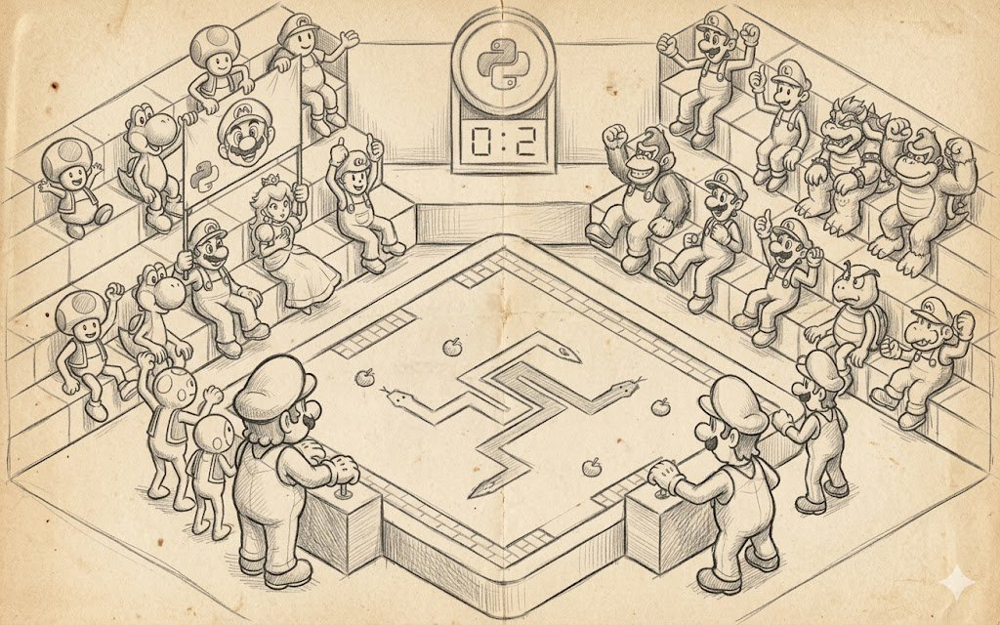
Se i "grandi" pattern descritti sopra rispondono alla domanda "come impacchettiamo il codice in mattoni e che forma avranno", le strategie di progettazione rispondono alla domanda ben più dolorosa "da quale estremità cominceremo addirittura a posare questi mattoni". Poche persone si concentrano affatto su questo tema, perché l'industria ama pensare "noi facciamo top-down" oppure "noi facciamo bottom-up", e quasi nessuno considera che la direzione della progettazione è di per sé una decisione architetturale da prendere all'inizio del progetto, non da ottenere secondo il capriccio del tallone sinistro del tech lead dopo aver letto l'ennesimo opus.
Un gioco non si progetta top-down, né bottom-up, né dal centro. In realtà esistono tre direzioni più o meno distinguibili, ognuna un peculiare compromesso tra diverse forze di attrazione. Lo sviluppo top-down, chiamiamolo così, funziona bene dove c'è già un forte game design o concept di prodotto, e il rischio tecnico è che devi programmare una lista di sistemi nota in anticipo. Il bottom-up funziona bene dove c'è una tecnologia forte, e il gioco in un certo senso si assembla attorno ad essa, e solo dopo arrivano game design, sistemi e tutto il resto. E il refactoring continuo funziona dove non c'è né l'uno né l'altro, e i requisiti reali nascono proprio nel processo di gioco, e sei pronto a pagarlo riscrivendo ogni sottosistema due o tre volte.
Top-down: i dettagli dopo
Il top-down è un approccio in cui ti siedi all'inizio del progetto e lo distendi partendo dall'affermazione "che gioco abbiamo" attraverso una lista di sistemi ("economia, combattimento, diplomazia, IA, multiplayer, meta-progressione") fino ai moduli e alle interfacce specifiche dentro ogni sistema. Sulla carta sembra bellissimo, e qualsiasi investitore, qualsiasi manager e qualsiasi game designer nella prima metà del progetto ti amerà per questo e ti porterà in palmo di mano, perché il top-down produce bei diagrammi, tanti bei... moltissimi bei... beh, hai capito... piani chiari e stime di calendario prevedibili. Qualsiasi project manager darebbe un rene per la possibilità di lavorare su un progetto simile, che di solito inizia con un documento di design testuale di, diciamo, tre o quattrocento pagine.
Il top-down funziona quando il gioco è un seguito o un terzo capitolo ed è già piuttosto grande, quando stai facendo Civilization VII, FIFA, Football Manager, Call of Duty, o un altro Assassin's Creed, e hai il capitolo precedente appeso al muro, hai la telemetria su quali sottosistemi i giocatori visitano più spesso e quali feature vanno rafforzate, e hai una squadra che due anni fa ha già assemblato esattamente la stessa architettura, quindi il top-down qui è normale lavoro ingegneristico di rifinitura di una costruzione notoriamente funzionante. Il top-down funziona anche per grandi progetti MMO e live-service di grandi team come World of Warcraft, Final Fantasy XIV, Destiny 2, EVE Online, perché questi progetti hanno già una piattaforma, un'infrastruttura server, una pipeline di contenuti collaudata, e ogni prossima espansione è prima di tutto una decomposizione di una nuova feature nello stack esistente del gioco.
Il prezzo del top-down si nasconde nella parola "realtà", perché lo sviluppo top-down detesta mortalmente quando il quadro d'insieme pianificato non sopravvive al primo scontro con una build reale. Perché in cima le interfacce e i moduli sono già costruiti per il vecchio quadro, mentre il nuovo quadro richiede una decomposizione diversa, e ogni transizione significa o riscrivere metà di quel che è fatto o tirare il nuovo gufo sul vecchio mappamondo, accontentando il mappamondo senza però far arrabbiare troppo il gufo. Ripeti tre volte prima della release.
Quindi il top-down nell'indie e nelle nuove IP finisce quasi sempre in uno di due modi: o la squadra pubblica un gioco che sembra "fatto correttamente ma non divertente da giocare", perché il game design non ha fatto in tempo a maturare nel momento in cui il sistema era già pronto; oppure dopo un anno di progettazione top-down la squadra passa in modalità refactoring continuo e riscrive metà dell'architettura, perdendo un altro anno.
Dal punto di vista del processo il top-down dà un altro caratteristico effetto collaterale: tollera male i programmatori che arrivano tardi. Se su un progetto avviato top-down compaiono nuovi sviluppatori dopo un anno di lavoro, devono leggere tutta quella tonnellata di documenti apparsi dalla nascita del progetto, assorbirne i principi e imparare a scrivere nel suo stile. Il costo dell'onboarding su progetti simili risulta significativamente più alto che nel bottom-up o nel refactoring continuo, perché in un progetto top-down l'architettura è fortemente verticale, e una parte è difficile da capire senza capirne un'altra. D'altra parte, una volta fatto l'onboarding, la persona diventa altamente produttiva, e questo spiega in gran parte perché il top-down funziona bene nei grandi studi affermati con lenta rotazione del personale e funziona male nelle startup dove parte della squadra cambia nel giro di un anno.
Bottom-up: prima la tecnologia, poi il gioco
Il bottom-up è l'approccio opposto, in cui parti non da un documento di design ma direttamente da un pezzo di tecnologia che vuoi o hai vitale bisogno di avere, e poi assembli il gioco attorno a questa tecnologia, scegliendo il genere e le meccaniche in modo che usino questa tecnologia al massimo. Sulla carta sembra molto dilettantesco, perché qualsiasi metodologia di business degli ultimi vent'anni pretende di partire dall'utente, dal prodotto e dal marketing, e un ingegnere che dichiara "prima scrivo il renderer, e poi penseremo a che gioco farci sopra" viene percepito come un i... a cui è stato permesso di avvicinarsi allo sviluppo per un malinteso. Ma in pratica il bottom-up è uno degli approcci più praticabili, e metà dei giochi leggendari ci sono passati.
L'esempio canonico è id Software nella prima metà degli anni novanta, quando prima Carmack scrisse un rasterizzatore veloce e un motore 3D software, e poi la squadra pensò a cosa farne e quale gioco avrebbe mostrato meglio sia questo rasterizzatore sia questo motore. Così nacque Wolfenstein 3D, poi Carmack scrisse un nuovo motore in cui comparvero gli alberi BSP e il portal rendering, e ci fu assemblato sopra DOOM, poi realizzò il 3D completo, e ci fu assemblato sopra Quake. In ogni caso la tecnologia veniva prima, il design veniva assemblato per adattarcisi, e questa era una scelta consapevole della squadra, descritta in una massa di interviste e nel libro di David Kushner "Masters of Doom". Lo stesso approccio fu usato da Bullfrog nell'epoca di Theme Park e Dungeon Keeper, da Frontier Developments con Elite, da Origin Systems con Wing Commander e Ultima Underworld, e da Crytek con il primo Far Cry, originariamente concepito come dimostrazione tecnologica di CryEngine 1. E, naturalmente, i miei amati Naughty Dog, che attorno al proprio DSL GOAL (Game Oriented Assembly LISP), e successivamente GOOL e ICE, costruirono interi progetti da Crash Bandicoot e Jak and Daxter fino ai primi Uncharted, e il gameplay si appoggiava fortemente sulle capacità specifiche di questi linguaggi.
GOAL non gira in un interprete, ma viene invece compilato direttamente in codice macchina PlayStation 2 per l'esecuzione. Sulla console il linguaggio si compilava in chiamate di sistema e di motore alla pari con C/C++. Il primo Uncharted non usava GOAL: a quel punto Naughty Dog era già passata completamente al C++ sotto pressione di Sony.
"Naughty Dog dovette creare i propri strumenti per GOAL... Naughty Dog ricominciò a usare GOAL. Lo usarono per lo scripting in alcuni giochi PlayStation 3. Tra questi The Last of Us." Cioè, il Lisp tornò come linguaggio di scripting nell'era PS3, non come principale linguaggio di gameplay. Uncharted 1 e 2 furono scritti in C++ con i propri sistemi di scripting.
Il bottom-up funziona dove la tecnologia stessa è una cosa vendibile, cioè quando i giocatori vengono al tuo gioco principalmente per ciò che gli altri non fanno. Il primo Crysis con la distanza di visuale e la vegetazione dinamica, il primo Half-Life 2 con la fisica Havok come elemento di gameplay, il primo Portal con i portali come meccanica stessa, il primo The Last of Us Part II con la simulazione facciale via motion matching, il primo Microsoft Flight Simulator 2020 con il mondo reale su dati in streaming.
Il motore originale concesso in licenza da Valve era Ipion Virtual Physics (IVP), acquistato da Havok nel 2000... e in seguito le soluzioni IVP confluirono in Havok.
Funziona anche dove le fondamenta tecnologiche sono uniche e si riutilizzano male, come i motori voxel di Minecraft, Star Citizen con il suo mondo infinito, o nei progetti di ricerca dove non sai in anticipo che gioco ne uscirà, e la scoperta delle proprietà della tecnologia è l'obiettivo principale. Il prezzo del bottom-up è il rischio di ottenere una bella tecnologia senza un gioco, e l'industria ha pagato questo prezzo molte volte. Si fa una tech demo, la si presenta all'E3, riceve applausi, va da un publisher, e due anni dopo o il progetto viene chiuso perché un gioco non si è assemblato attorno alla tecnologia, oppure esce un gioco commercialmente debole in cui la tecnologia esiste ma non serve a nessuno tranne ai suoi autori. La storia conosce molti casi simili, e non punterò il dito su progetti specifici, perché chiunque abbia giocato anche solo un po' può citarne un paio di esempi a memoria.
Il secondo prezzo del bottom-up è una forte dipendenza dalla persona chiave che tiene la tecnologia in testa. Il motore id Tech 1 era un grosso pezzo del lavoro di John Carmack, la sua partenza o malattia minacciava immediatamente l'intero portafoglio prodotti dell'azienda, lo stesso valeva alla Bullfrog con Peter Molyneux nelle prime fasi, e ai Naughty Dog con Andy Gavin prima che l'ICE Team diventasse una squadra. I bottom-up spesso crescono senza una cultura del trasferimento di conoscenza e senza una rigida disciplina di documentazione, trasformandosi in progetti con un bus factor = 1.
Refactoring continuo: riscrivere tutto, ma un pezzo alla volta
Il terzo approccio è il refactoring continuo, e si differenzia dai primi due per non avere affatto una direzione fissa. Puoi partire da qualsiasi estremità, da qualsiasi lato, scrivi la variante funzionante più semplice di un qualsiasi sottosistema, giochi la tua stessa build, capisci esattamente cosa non ti piace, riscrivi quel sottosistema, giochi di nuovo, e così via ancora e ancora, finché in un anno o tre ottieni un gioco in cui ogni sottosistema è sopravvissuto ad almeno tre o quattro riscritture, e i sistemi critici cinque o sei, e il gioco funziona bene perché ogni volta la soluzione del problema è stata decisa in base alla tua stessa sessione di gioco. Sulla carta sembra follia, e se vai da un investitore con un progetto simile, ti manderà molto gentilmente a quel paese. Qualsiasi manager efficiente sosterrà che il refactoring continuo è semplicemente un'idea non vitale e "non avete architettura", ma in realtà la maggior parte dei giochi indie ha proprio uno sviluppo a refactoring continuo sotto il cofano, e non ne soffrono affatto.
Minecraft nei suoi primi anni era puro refactoring continuo, e Markus Persson nel suo blog descrisse abbastanza apertamente come riscrisse più volte il sistema dei chunk, il sistema di illuminazione, il sistema di fisica lava-acqua, il renderer dei cubi, perché in ogni sessione successiva capiva che la versione precedente non reggeva ciò che voleva dal gioco. Factorio è passata attraverso riscritture ben note all'industria a diversi livelli dello stack, dal renderer alla simulazione dei nastri, e nei Factorio Friday Facts descrivevano regolarmente tali riscritture pubblicamente, a volte con un livello di dettaglio considerato segreto commerciale nei grandi studi. Dwarf Fortress dei fratelli Adams è il più lungo refactoring continuo nella storia dell'industria, perché i fratelli riscrivono lo stesso progetto da vent'anni, espandendone gradualmente le capacità e rompendo regolarmente la compatibilità con le versioni precedenti. Stardew Valley è un altro modello dello stesso approccio, in cui uno sviluppatore solitario in quattro anni riscrisse più volte metà del codice del motore, il sistema di dialoghi, il sistema della fattoria, e come risultato pubblicò un gioco che molti oggi definiscono un modello di artigianato.
Il refactoring continuo funziona quando il fatto stesso di quale gioco otterrai alla fine non è noto in anticipo, e scoprire questo fatto è possibile solo giocando la tua stessa build. Questo riguarda, primo, i prototipi, perché un prototipo per definizione non sa in cosa si trasformerà. Secondo, i progetti indie in cui un singolo autore o un piccolo collettivo vuole che il gioco sembri una continuazione delle proprie idee piuttosto che l'implementazione di un documento scritto in anticipo. Terzo, i progetti in early-access, perché per loro è un normale stile di sviluppo, quando pubblichi una build funzionante ma incompleta, raccogli feedback, rielabori, e pubblichi di nuovo, e così per diversi anni. Lo Steam Early Access in dieci anni di esistenza ha cementato questo modello come una strategia di business a tutti gli effetti.
Il prezzo del refactoring continuo è anch'esso tutto suo e anch'esso piuttosto doloroso. Il prezzo principale è il costo delle riscritture, perché riscrivere un sottosistema è sempre costoso, specialmente se durante la sua vita altri sottosistemi hanno fatto in tempo a incastrarsi in esso, gli artisti hanno fatto in tempo ad appoggiarcisi con gli asset, o gli sceneggiatori con i dialoghi. Ogni riscrittura ha una probabilità non nulla di rompere qualcosa nei sistemi vicini e costringerti a rifare anche il sistema vicino. In realtà i progetti a refactoring continuo vivono spesso con lunghi branch di refactoring in Git, con complessi processi di merge, con regressioni che spuntano dal nulla dopo ogni nuovo aggiornamento, e qualsiasi sviluppatore indie seduto sul refactoring continuo ti dirà che metà del suo tempo di lavoro non va nel nuovo codice ma nel "riparare ciò che funzionava tre mesi fa".
Nelle squadre più grandi di 5-7 persone il refactoring continuo di solito comincia a perdere bruscamente efficacia, perché il lavoro parallelo di più persone su codice fortemente mutevole porta a costanti conflitti di merge e reciproci risentimenti, e questa è una delle ragioni per cui i grandi team gravitano più spesso verso il top-down anche dove il progetto stesso chiede vitalmente il refactoring continuo. C'è anche il rischio di ottenere un refactoring eterno senza un gioco: semplicemente quando l'autore non ha pressione esterna sotto forma di scadenza, investitore, o accordo con un publisher, il refactoring continuo può impercettibilmente diventare fine a se stesso. Ogni iterazione migliora l'architettura ma non avvicina la release, e in cinque anni il progetto ha un codice magnifico e sottosistemi in ordine ma ancora niente da giocare. I giocatori scherzano dicendo che Dwarf Fortress è in questo stato ufficialmente fin dall'inizio, e Tarn Adams dice abbastanza apertamente che intende fare il gioco fino alla fine della sua vita, ma questa è l'eccezione che conferma solo la regola, perché la maggior parte dei progetti che vivono così semplicemente non li vediamo mai.
Cosa succede davvero sui progetti
Nella sua forma pura nessuno dei tre approcci di solito sopravvive fino alla fine in un grande progetto, e quasi sempre la squadra fa un ibrido, e la tipica traiettoria reale di un progetto ha questo aspetto: i primi sei-dodici mesi sono bottom-up con elementi di refactoring continuo, perché la squadra costruisce il nucleo tecnologico, fa prototipi, e tasta il gioco. L'anno e mezzo o due successivi sono top-down, perché il prototipo è approvato, il design è fissato, e il resto dei sistemi e dei contenuti va costruito secondo il piano, e l'ultimo anno è di nuovo refactoring continuo, perché playtest e focus group rivelano problemi da curare, e le riscritture di grandi sistemi in questo momento sono praticamente inevitabili. Questa, tra l'altro, è esattamente una delle ragioni per cui molti sviluppatori amano lavorare all'inizio e alla fine di un progetto e detestano la sua parte centrale, perché nel mezzo la squadra vive nella modalità più top-down, in cui ogni passo è scritto e c'è il minimo spazio di manovra.
La scelta della direzione influenza sia la struttura della squadra sia la struttura del codice. Il top-down scala meravigliosamente fino a centinaia di persone, perché il design viene passato lungo la gerarchia agli sviluppatori, ognuno ottiene il suo pezzo e non interferisce con il vicino. Il bottom-up limita naturalmente la squadra alla dimensione del nucleo che tiene la tecnologia più un piccolo involucro sopra, e per questo si trova raramente in progetti più grandi di 20-30 persone. E il refactoring continuo praticamente non scala oltre le 5-7 persone, e non a caso sopra faccio esempi con sviluppatori solitari, perché il refactoring continuo con venti persone è un inferno organizzativo con costanti conflitti e imprecazioni in cucina. Quindi, scegliendo la direzione della progettazione, scegli contemporaneamente in modo implicito la dimensione massima della squadra su cui questa scelta funzionerà, e viceversa, la dimensione della squadra detta quale direzione è possibile in linea di principio.
Dimensione squadra
|
|
1-3 4-10 11-50 50+
+---------+---------+-----------+-----------+
CR | ******* | ***** | ** | . | refactoring continuo
BU | ***** | ******* | ***** | ** | bottom-up
TD | * | *** | ******** | **********| top-down
+---------+---------+-----------+-----------+
* più stelle ci sono, più naturale e l'approccio
per una squadra di questa dimensioneCome scegliere
La regola pratica che formulerei sopra tutto questo suona così: se hai un forte documento di design basato o su un capitolo precedente della serie, o su un genere consolidato, o su un franchise formale con vincoli chiari, e allo stesso tempo hai una squadra più grande di dieci persone, scegli il top-down, perché lo pagherai in puro sforzo ingegneristico, e questo sforzo si trasformerà garantito in un prodotto. Il rischio principale qui è perdere il contatto con il gioco e fare un progetto "costruito correttamente ma noioso", e si cura con playtest regolari fin dall'inizio, non meno di una volta a settimana.
Se hai un prototipo tecnologico, o stai costruendo un motore, o assemblando un gioco attorno a una tecnologia specifica, scegli il bottom-up e assumi un ingegnere molto bravo o una piccola squadra di ingegneri, e allo stesso tempo uno o due game designer che capiscano questa tecnologia e sappiano inventare meccaniche per le sue capacità. Il rischio principale qui è ottenere una bella tech demo senza un gioco, e si cura con la severa esigenza "mostra un prototipo giocabile ogni due mesi", anche se è imbarazzante.
Se hai un progetto indie, una piccola squadra, e un concept non ovvio, punta sul refactoring continuo e non scusarti con nessuno per questo. Qui il rischio principale è il refactoring eterno senza release, e si cura con una scadenza esterna, un accordo con un publisher, o una promessa personale a te stesso che tra due anni pubblichi a ogni costo.
Ma qualunque approccio tu scelga, non dichiararlo una religione. L'industria non ha posto né per "noi facciamo sempre top-down", né per "noi lavoriamo bottom-up per principio", né per "noi abbiamo Agile e refactoring continuo dappertutto", perché qualsiasi formulazione del genere significa che la direzione di progettazione è stata scelta in anticipo senza riguardo per il progetto, e sia il progetto sia la squadra soffrono di questa cecità metodologica. È molto meglio trattare la direzione come un'altra leva che tieni in mano e a ogni momento del progetto decidere in che verso girarla ora, e un tech lead che sa passare consapevolmente tra top-down, bottom-up e refactoring continuo a seconda della fase del progetto fa a lungo termine giochi notevolmente più di successo di un tech lead che ha scelto un unico approccio "corretto" per la vita e usa con sicurezza solo quello.
Push vs Pull
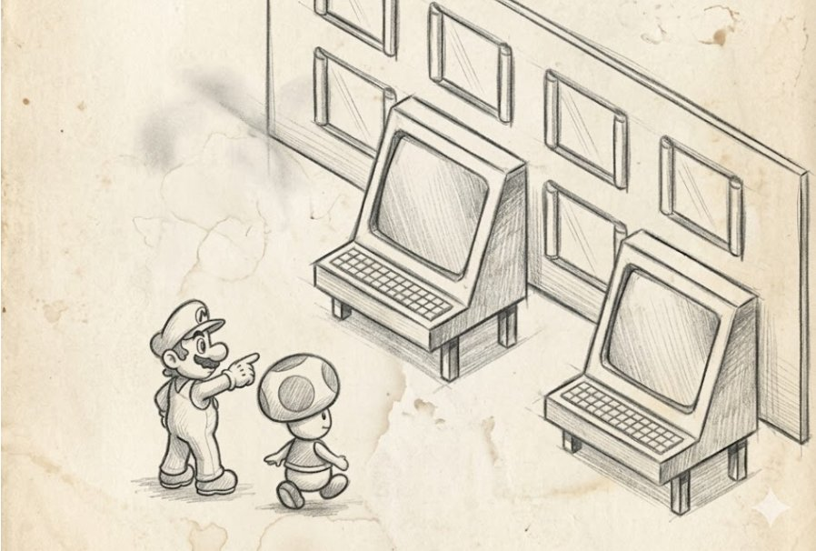
Dopo che hai deciso la direzione di progettazione, sorge immediatamente la domanda successiva: come esattamente il tuo codice otterrà i valori correnti, dal volume audio corrente alla lista degli asset sul livello corrente. Andrà a prendersi il valore da solo ogni volta, là dove giace, oppure chi cambia questi valori lo avviserà dei cambiamenti?
Sembra un dettaglio tecnico minore, quasi una questione di gusto personale, ma sull'orizzonte di un progetto triennale la scelta tra push e pull conta più o meno quanto la scelta tra sottosistemi e layer, perché push e pull non differiscono solo nello stile delle chiamate, rispondono in modo fondamentalmente diverso alla domanda "chi è responsabile del fatto che i dati siano correnti".
Nel modello pull, la responsabilità della correntezza ricade sul consumatore dei dati, cioè su di te, e quando il codice di gameplay ha bisogno di sapere la scala dell'HUD, chiama game::get_setting("hud.scale") e ottiene il valore al momento della chiamata; quando il renderer ha bisogno di un modello 3D, chiama render::Load3DModel("hero.fbx") e si blocca finché il modello non è in mano. Quando l'IA ha bisogno di sapere se al momento vede il giocatore, chiama IsActorVisible(player) e calcola il risultato sul posto. Questa è l'intuizione di base di qualsiasi sviluppatore alle prime armi, perché nel pull tutto è organizzato nel modo più diretto possibile, e i dati sono conservati da qualche parte in disparte, sai dove, ci vai, li prendi, e torni.
Nel modello push, la responsabilità della correntezza ricade sulla sorgente dei dati, e quando un'impostazione è cambiata, qualcuno te lo dice tramite OnSettingChanged("hud.scale", old, new); quando un asset è diventato disponibile, l'AssetManager ti invia OnAssetReady("hero.fbx", handle); quando il giocatore è entrato nel campo visivo dell'IA, il bot riceve un evento OnSensedPawn(player), e poi è compito tuo reagire a questo evento invece di provare a interrogare tutti una volta per frame.
In un sistema push non puoi scrivere un ciclo del tipo "scorrerò tutte le risorse e caricherò quelle che corrispondono a un pattern di nome", perché nel push nessuno "va a prendersi i dati" da solo. In un sistema pull un ciclo simile è del tutto normale e ricorre a ogni pagina di codice, quindi se prendi un qualsiasi progetto e ci lanci sopra grep cercando cicli che caricano risorse per indice o per pattern di nome, in mezz'ora determinerai con molta precisione in quale modalità lavora davvero l'asset manager, indipendentemente da cosa ne dica la documentazione architetturale.
Spesso il risultato diverge dalla documentazione, perché il manager è dichiarato push mentre metà del codice va pull, perché era più veloce da scrivere. Lo stesso controllo funziona per le impostazioni, per le cvar, per i dati dell'IA, per lo stato del mondo, e se il codice contiene interrogazioni di massa come "scorrerò tutti i bot e chiederò a ognuno se vede il giocatore", quello è pull. Se invece il codice ha sottoscrizioni "avvisami se almeno un bot ha visto il giocatore", quello è push. I grandi team abbastanza spesso vivono in una modalità mista proprio perché i singoli sottosistemi hanno scelto la propria modalità in modo indipendente, e in un anno la dichiarazione architetturale "siamo tutti reattivi" non corrisponde affatto al quadro reale nel codebase.
Quando pull è la scelta giusta
Primo, quando il tasso di cambiamento dei valori è molto basso, e i consumatori sono pochi. Se la tua impostazione gravity cambia una volta ogni sei mesi, quando il game designer sposta uno slider nell'editor, e due o tre punti nel codice la leggono, non ha senso allestire alcuna infrastruttura push, perché spenderai più sforzo a registrare sottoscrizioni e gestire eventi di quanto ne risparmi sugli aggiornamenti. Secondo, quando un valore è facile da calcolare al volo al momento della chiamata, e metterlo in cache è più costoso che ricalcolarlo. Un hash moderno su 64 byte, un accesso a un contesto thread-local, una lettura dalla cache L1 di una struttura CPU: tutto questo nel pull costa nanosecondi, e allestire un'infrastruttura push per notificare tali cambiamenti è economicamente insensato. E terzo, quando il fatto stesso di richiedere un valore è semanticamente importante, per esempio quando si interroga il sistema del tempo specificando una particolare timescale (UnscaledTime, GameTime, NetworkTime), perché in questi casi vuoi ottenere il valore esattamente nel momento in cui l'hai chiesto, e nessuna infrastruttura push con un ritardo di un frame deve funzionare qui.
I buoni motori di gioco lasciano il pull per un'enorme quantità di cose di sistema, e lo fanno del tutto correttamente. Quake e i suoi derivati (Half-Life GoldSrc, i primi Source) sono costruiti quasi interamente sul pull: cvar_t* sv_gravity = Cvar_Get("sv_gravity", "800", CVAR_SERVERINFO) è un handle pull su una cvar, letto da qualsiasi punto del codice di nuovo ogni volta. gi.imageindex("textures/wall01.bmp") è un loader pull che carica una texture se necessario e restituisce un indice; cl.snap.ps è l'accesso pull alla posizione predetta corrente del giocatore. Questo non è per pigrizia o ignoranza dei pattern, è una decisione consapevole, e funziona perché Quake è un gioco con un set di asset relativamente compatto e noto in anticipo e senza streaming serio.
Quando si prova a costruire un mondo aperto attorno a questo stesso motore, il pull comincia a rompersi, e bisogna spostare i sottosistemi verso il push pezzo per pezzo, e questa, tra l'altro, è esattamente la storia che Source ha attraversato durante lo sviluppo di Half-Life 2 con tutti i suoi compromessi di streaming. Il pull vive meravigliosamente nelle regole di gameplay, nelle utility matematiche, nelle funzioni di interrogazione della configurazione, nella UI in immediate-mode, nei comandi di debug della console, e un tentativo di riscrivere ognuno di questi punti in push porta a un gonfiamento dell'infrastruttura senza benefici visibili.
Quando pull diventa un problema
Ma dove il pull diventa inequivocabilmente una cattiva decisione è lo streaming di risorse nei mondi aperti. Se hai un gioco al livello di GTA V, RDR2, Cyberpunk 2077, Microsoft Flight Simulator, o Star Citizen, in cui solo una minuscola frazione del set completo di asset può essere in memoria contemporaneamente, qualsiasi tentativo di caricamento pull del tipo "serviva un modello, l'ho caricato, l'ho disegnato" porterà o a stutter a ogni frame, quando il modello si carica al momento della sua prima richiesta, oppure alla necessità che ogni consumatore indovini da solo cosa gli servirà tra un secondo e vada a prenderselo in anticipo.
Questa impresa fallisce con uguale successo in tutti i progetti che ci provano. Quindi i mondi aperti devono essere push, e il centralizzato World Streaming Subsystem nel Rockstar Advanced Game Engine, World Partition in Unreal Engine 5, lo Streaming System in CryEngine 5, il Cell Streaming in Frostbite guarda esso stesso la posizione della camera, la sua velocità di movimento, la direzione dello sguardo, e decide proattivamente quali asset caricare e quali scaricare, e invia al gioco gli eventi OnCellLoaded, OnCellUnloaded, OnAssetReady. Il codice di gameplay in un moderno mondo aperto non sa affatto quali asset specifici sono al momento in memoria, lavora con quelli che gli sono stati dati ed è sottoscritto ai cambiamenti.
Un altro punto è la UI e il suo collegamento al modello dati. Quando hai un contatore della salute del giocatore nell'HUD, e lo implementi come pull, cioè ogni frame la UI chiede all'attore i suoi HP e aggiorna il testo, questo funziona ma scala male, e se hai cento elementi UI in un gioco a mondo aperto, e ognuno interroga il proprio modello, allora nel profiler vedi 0,3 millisecondi interamente spesi in "getter della UI". Peggio, con elementi HUD complessi cominci a scrivere logica di dispatch "se gli HP sono cambiati rispetto al frame precedente, riproduci un'animazione di tween", e questo è essenzialmente push mal implementato sopra il pull. Quindi i moderni sistemi UI ti danno binding reattivi, in cui un elemento UI è descritto come una funzione del modello, e il motore stesso traccia quali campi del modello passare a push e quando ridisegnare il widget. E il confronto di questo con la UI pull imperativa è così ovviamente a favore del push che nell'industria questa transizione è avvenuta negli ultimi dieci anni su praticamente tutti i principali motori.
Push costoso da progettare e pull economico da scrivere
Il modello push è di per sé una cosa costosa e difficile da estendere, e questo va accettato come parte della sua architettura piuttosto che come un difetto. Il prezzo principale del push sono le sottoscrizioni, perché devi avere registri dei sottoscrittori, questi registri devono avere varianti thread-safe per i casi in cui una sottoscrizione è fatta da un thread mentre un evento è inviato da un altro, le sottoscrizioni devono avere riferimenti deboli affinché i sottoscrittori morenti non lascino puntatori pendenti, gli eventi devono avere una garanzia di consegna anche attraverso i confini dei frame, e nei casi particolarmente pesanti devono esserci code di eventi con priorità per quando più sistemi sono sottoscritti allo stesso evento e l'ordine della loro invocazione conta.
Nel pull non hai sottoscrizioni, gli oggetti vengono creati e muoiono senza conseguenze per i vicini, mentre nel push ogni oggetto sottoscritto a qualcosa deve annullare correttamente la sottoscrizione alla distruzione, e se non lo fa, comincia ad accumularsi spazzatura nel tuo registro dei sottoscrittori, che al prossimo broadcast o crasha con un access violation o chiama codice casuale a un indirizzo casuale, e questi bug sono tra i più sgradevoli, perché si riproducono una volta sì e una no e solo in certi scenari. La cura è nota: o wrapper RAII con annullamento automatico della sottoscrizione nel distruttore, o puntatori deboli, o registrazione esplicita della sottoscrizione in un oggetto di lifetime come UScriptStruct->BindToObject(owner), che azzera esso stesso la sottoscrizione alla morte del proprietario.
Nel pull, quando qualcosa non va, metti un breakpoint su una lettura e vedi l'intero call stack che ha portato a questa lettura. Nel push, quando qualcosa non va, metti un breakpoint su un callback e vedi uno stack in cui compaiono solo la sorgente, il dispatcher e il callback, mentre il contesto che ha portato a questo evento può giacere in un thread completamente diverso, in un tick diverso, e a volte su una macchina del tutto diversa se parliamo di replica di rete. Quindi nei sistemi push, molto più che nel pull, ti servono buoni strumenti di tracing e un log degli eventi che registri "quando e chi ha inviato, chi ha ricevuto", breakpoint per tipo di evento nei debugger del motore, un timeline viewer per gli eventi asincroni, un Network profiler per gli eventi di replica, e le squadre che risparmiano su questi strumenti pagano poi ogni tale decisione con migliaia di ore di QA.
E infine, un semplice broadcast in cui un cambiamento di valore innesca l'aggiornamento di cinquecento sottoscrittori è teoricamente O(N) e funziona velocemente, ma in pratica ottieni un cache miss a ogni accesso a ogni sottoscrittore più l'attraversamento delle tabelle virtuali più i branch in ogni callback, e per un sistema di mille sottoscrittori leggeri il push comincia facilmente a perdere contro il pull di un cinque-dieci per cento del budget di frame. Quindi i messaggi push vengono spesso serializzati su un singolo frame e processati in una singola passata alla fine del frame, per fondere i cambiamenti accumulati e processarli in batch, e questo non è più push puro ma un ibrido di push con una coda, che si comporta quasi come pull al momento della lettura.
Ibridi e vita reale
Nei moderni motori reali non troverai praticamente da nessuna parte push puro o pull puro, e la maggior parte delle architetture funzionanti è un ibrido in cui diversi sottosistemi usano modelli diversi per proprie ragioni. L'esempio più eloquente sono le Console Variables di Unreal: IConsoleVariable ha il classico metodo pull GetInt(), che legge il valore corrente istantaneamente, e allo stesso tempo un metodo push OnChangedDelegate, a cui puoi sottoscriverti per ottenere un evento su un cambiamento. Questo dà il meglio di entrambi i mondi, quando il codice hot interroga tramite pull senza overhead, mentre i sottosistemi che hanno bisogno di una reazione a un cambiamento si sottoscrivono tramite push, e non paghi né l'uno né l'altro dove non serve.
L'Asset Streaming in Unreal è organizzato in modo simile, dove hai la chiamata pull LoadObject(path) per i casi in cui hai urgente bisogno di un asset e sei pronto a bloccare il thread, e la chiamata push tramite StreamableManager::RequestAsyncLoad(path, FStreamableDelegate::CreateUObject(this, &Class::OnLoaded)), che restituisce il controllo immediatamente e invia un evento quando l'asset è effettivamente caricato. Di solito su un progetto il 90% delle chiamate passa attraverso push, mentre il restante 10% sono o asset di startup caricati sulla schermata di caricamento o rari casi casuali.
La replica di rete nei motori moderni è un caso interessante di architettura push pura, in cui la sorgente dei cambiamenti (il server) decide essa stessa a chi, cosa e quando inviare, e il client riceve eventi del tipo "questa variabile ora ha questo determinato valore". La Network Replication di Unreal tramite OnRep_FunctionName è push nella sua forma più pura, Photon Quantum, Mirror e FishNet in Unity fanno lo stesso, GameNetworkingSockets in Source 2 è push a basso livello con controllo di flusso diretto. E qui il pull è impossibile in linea di principio, perché il client fisicamente non ha accesso ai dati del server e non può "tirarli" (pull), tutto ciò che può fare è sottoscriversi e aspettare.
Quando push diventa un anti-pattern
Nell'industria negli ultimi dieci anni c'è una moda del "tutto reattivo, tutto sugli eventi", e questa moda porta esattamente agli stessi problemi di qualsiasi altra metodologia radicale. Il push diventa un anti-pattern quando lo usi per semplici operazioni sincrone per le quali il pull sarebbe più naturale: quando il codice di gameplay, per ottenere l'ora corrente, invia un evento OnTimeRequest e aspetta che gli venga risposto dall'altro capo del codebase, questa non è architettura reattiva, è follia ingegneristica. Il push diventa un anti-pattern quando la frequenza dei tuoi eventi è notoriamente alta e sottoscrivere l'IA di ogni bot a un evento push OnPlayerPositionChanged che arriva a ogni frame è solo un modo più costoso di interrogare la posizione del giocatore tramite pull a ogni frame, più l'overhead del dispatcher in cima.
Il push diventa un anti-pattern quando l'ordine degli eventi è critico, e l'esempio classico è un'IA che ha ricevuto OnEnemyVisible e OnEnemyLost nell'ordine sbagliato perché gli eventi sono trasmessi su thread diversi, e ora un bot con un nemico proprio sotto il naso pensa che non ci sia nessun nemico vicino. Il push diventa un anti-pattern quando la squadra lo usa come modo per evitare la responsabilità del design. Questa è probabilmente la malattia più frequente delle moderne architetture push, quando uno sviluppatore si rende conto che una nuova funzionalità richiede che tre sottosistemi cambino il proprio stato in modo coordinato, non vuole capirne le relazioni, allestisce un evento a cui sottoscrive tutti e tre i sottosistemi, e invia un minimo di informazioni in questo evento, contando sul fatto che i sottosistemi "se la cavino" da soli. In un anno hai per le mani una ragnatela di eventi in cui ogni evento è sottoscritto ad altri diciassette, e qualsiasi tentativo di fare debug finisce con lo sviluppatore che va a prendersi un caffè sul terrazzo.
Come scegliere (push/pull)
La regola pratica che raccomanderei qui suona così. Vai di pull... Nel senso di: usa il pull per l'hot path e per i valori che cambiano raramente e sono facilmente accessibili. E usa il push per lo streaming di asset, le impostazioni, la UI con binding reattivi, per la replica di rete, per l'IA, e per gli eventi di salvataggio/caricamento. Non puntare tutto sul push solo perché è "moderno", e non puntare tutto sul pull solo perché è "semplice", perché il radicalismo puro su questa questione costa sempre di più di un ragionevole ibrido.
E infine, il push non è solo una "scelta tecnica", è una nuova responsabilità per il tech lead. Nei progetti pull basta assicurarsi che il codice sia scritto in modo pulito, mentre nei progetti push devi in aggiunta costruire documentazione per tutti gli eventi, strumenti per tracciarli, una policy di riferimenti deboli, una policy di annullamento della sottoscrizione nei distruttori, un sistema di denominazione degli eventi, e addestrare la squadra a capire come leggere codice asincrono. Questo è un secondo carico infrastrutturale sopra il codice del gioco, e può ammontare fino al 15-20% del volume totale di lavoro della squadra, e questi 15-20% vanno pianificati in anticipo, perché altrimenti compariranno comunque, solo a spese di qualcos'altro, di solito a spese della qualità del gioco alla release. L'asse push/pull stesso è forse la leva più spesso sottovalutata all'inizio di un progetto, e che poi diventa uno degli errori architetturali più costosi da correggere se la scelta è stata fatta alla cieca.
PULL PUSH
+------------------------------+ +----------------------------------+
| il consumatore | | la sorgente |
| va a prendersi il valore | | avvisa da sola i sottoscrittori |
| ogni volta: | | quando il valore cambia: |
| v = get_setting("...") | | OnSettingChanged(name, old, new)|
| m = load_model("...") | | OnAssetReady(path, handle) |
| hp = actor->GetHP() | | OnHealthChanged(old, new) |
+------------------------------+ +----------------------------------+
costo costo
+------------------------------+ +----------------------------------+
| economico in infrastruttura | | costoso in infrastruttura: |
| si sparge nel codice | | registro sottoscrittori, unsub |
| difficile reagire a un | | alla morte; possibili race, |
| cambiamento e coordinare | | ordini, debug difficile |
| piu consumatori | | ma il sistema sa da solo |
| | | dove guardare e chi avvisare |
+------------------------------+ +----------------------------------+Linguaggi di scripting sbagliati
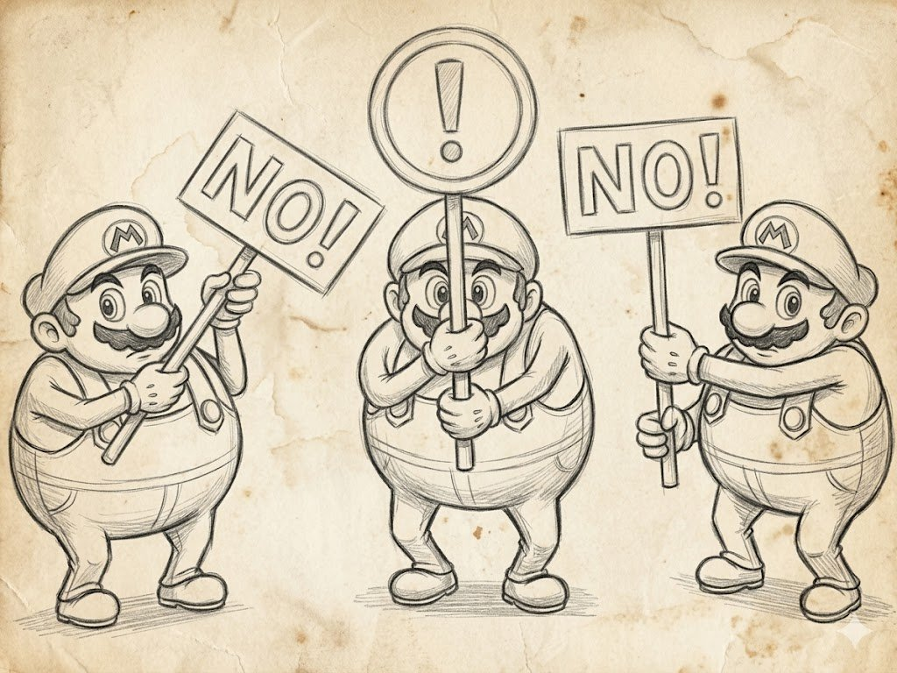
I programmatori creano sistemi di scripting SBAGLIATI perché li orientano ai programmatori, e di conseguenza solo i programmatori riescono a usarli. Questa è la diagnosi di una malattia professionale che ancora oggi si ripresenta regolarmente negli studi nuovi senza esperienza su grandi progetti, e la sua causa è sempre la stessa. Il programmatore crede che un linguaggio di scripting sia solo un C++ più semplice e più dinamico, e lo implementa nel modo che sarebbe comodo per sé, senza considerare che il pubblico di destinazione di un linguaggio di scripting è completamente diverso, e che per questo pubblico "comodo" significa qualcosa di totalmente diverso rispetto a un programmatore.
Lo script ideale per i non-programmatori non è affatto uno script. Questo significa che se vuoi dare a un game designer o a un tech artist la possibilità di cambiare qualcosa nel gioco senza chiamare un programmatore, il tuo compito non è consegnargli un IDE con l'evidenziazione della sintassi e un manuale di quattrocento pagine, ma nascondere la programmazione dietro un'interfaccia che sembri qualcosa di fondamentalmente diverso. Come una tabella, un diagramma di stati, una timeline, un grafo di nodi, un questionario, un editor di materiali con slider, qualsiasi cosa tranne testo con parentesi graffe. E l'industria, avendo percorso una lunga strada dalla console di Quake a Blueprints e Niagara, ha imparato questa lezione a caro prezzo e continua a impararla, perché ogni nuova generazione di sviluppatori inventa ancora regolarmente uno "script comodo per il game designer" che si rivela comodo solo per il programmatore stesso.
Perché serve uno strato di scripting
Prima di analizzare sistemi specifici, vale la pena rispondere alla domanda su a cosa serva mai tutta questa infrastruttura sopra il linguaggio principale del motore. Un sistema di scripting si fa per due cose, ed entrambe sono economiche più che tecniche. La prima è rendere il prodotto più economico, e ci sono solo tre modi per rendere un prodotto più economico. Meno persone, stipendi più bassi e tempi più brevi. Gli script aiutano a ottenere la seconda e la terza opzione in un colpo solo, perché un game designer e un tech artist costano meno di un programmatore di sistemi, e le iterazioni in uno script senza ricompilare il motore vanno dieci volte più veloci delle iterazioni in C++.
La seconda è migliorare il gioco, e c'è un solo modo per rendere un gioco più interessante. È dare la possibilità di muovere gli slider a chi se ne intende, e come avrai capito, quelli non sono affatto i programmatori. Questa è probabilmente la frase più importante di tutto questo articolo, perché spiega perché gli script non riguardano il risparmio di risorse ma l'accesso alle decisioni creative delle persone che sanno prenderle. Da questi due punti segue immediatamente che uno strato di scripting non è una questione di "serve o no" ma di "per chi è", e se sul tuo progetto c'è una sola persona, un design data-driven esteso non è solo inutile ma controindicato, perché scrivere infrastruttura di scripting da solo e per se stessi è puro spreco di tempo che faresti meglio a spendere sul gioco stesso.
Qualsiasi discorso sugli script comincia riconoscendo con quali non-programmatori esattamente lavoreranno, quanti saranno, qual è il loro livello e cosa esattamente vuoi lasciar loro cambiare senza il tuo coinvolgimento. La risposta a queste domande determina quasi interamente quale sistema di scripting dovresti costruire, e cercare di fare un "sistema di scripting universale" senza queste risposte è lo stesso errore di costruire un "motore universale" senza capire quali giochi ci verranno fatti sopra.
La console di Quake e i file cfg
La primissima e ancora vivissima forma di strato di scripting nell'industria è la console di Quake; formalmente non è affatto uno script, è solo un insieme di cvar e comandi che un giocatore o uno scripter può passare, e il motore li eseguirà al caricamento o a runtime. Carmack nel 1996 la fece non per grande pensiero architetturale ma puramente per necessità applicative, perché Quake doveva essere configurato su tante macchine diverse con hardware diverso, e i valori cablati nell'exe non davano al game designer e al QA la benché minima possibilità di modificare i parametri per una scena specifica senza ricompilazione.
La soluzione venne fuori semplice fino alla genialità, e ogni "nome più valore" era essenzialmente un comando per funzioni registrate con argomenti, e un file cfg è una sequenza di chiamate con la possibilità di eseguire questi comandi. È sorprendente quanto sia risultato longevo questo semplice costrutto. La console di Quake passò in Half-Life, poi nel Source Engine, poi in Source 2, e oggi in Counter-Strike 2 è esattamente la stessa interfaccia con bind, alias, cvar, +attack, mp_freezetime 5 che i giocatori scrivevano nel 1998.
Lo stesso approccio finì in id Tech 3, id Tech 4, id Tech 5/6/7, e in Doom Eternal puoi ancora aprire la console tramite un cvar nei parametri di avvio. In Unreal i comandi di console sono diversi, ma l'idea è la stessa. Questo formato attecchì così bene che apparve un'intera generazione di giochi che vendono proprio grazie alla capacità dei giocatori di configurare tutto tramite la console, rendendo sia la console sia i file cfg uno strato di scripting minimale che non richiede all'utente di saper programmare, dandogli comunque la possibilità di "muovere gli slider". Il paradosso è che molti motori moderni si sono dimenticati di questo livello e saltano dritti a qualcosa di complesso, e poi si stupiscono del perché il game designer Vasily trovi scomodo configurare il gioco attraverso trentatré menu.
DSL per non-programmatori
Il livello successivo è un linguaggio specializzato per un compito specifico, tipo par { loop { set_color(red); wait(1); ... } }, e l'idea qui è fondamentalmente diversa dalla console. Il linguaggio dev'essere domain-specific, cioè esprimere non potenza computazionale generica ma un pensiero comprensibile all'utente a un livello naturale per il dominio. In questo caso l'utente non scrive un programma, descrive un comportamento, e il linguaggio si fa carico al suo posto di come questo comportamento venga eseguito al momento giusto con le risorse giuste.
L'esempio più riuscito di un simile DSL nell'industria è probabilmente le timeline di Flash/Animate. Adobe Flash originariamente non veniva affatto percepito come "programmazione", l'animatore disegnava semplicemente i keyframe, li disponeva sulla timeline, aggiungeva livelli ed effetti, e nel giro di alcuni anni su queste basi crebbe praticamente tutta l'animazione web 2D degli anni 2000, più un mucchio di giochi (Machinarium, Limbo, Braid, Cuphead) la cui intera animazione 2D fu fatta in Flash/Animate con successiva esportazione in liste di sprite. Nessuno degli animatori si considerava un programmatore, mentre tecnicamente stavano programmando il movimento degli oggetti nel tempo.
DSL simili in forma di nodi o timeline vivono oggi ovunque. Unity Animator e Mecanim ti permettono di assemblare la macchina a stati di un personaggio da stati e transizioni, e un animatore può fare tutta l'animazione di combattimento di un personaggio senza scrivere una riga di C#. Unreal AnimGraph e Animation Blueprint fanno lo stesso a nodi, e in più permettono di applicare Inverse Kinematics, Aim Offset, Layered Blend Per Bone. Spine e DragonBones sono DSL specializzati per l'animazione scheletrica 2D, in cui l'animatore lavora con catene di ossa, mesh e atlanti e di nuovo non scrive programmi. Le UMG Animations di UE permettono a un UI designer di assemblare complesse animazioni di widget con i tween senza programmare. E in tutti questi casi lavorare in un DSL viene percepito non come "programmazione" ma come "creatività", ed è questo che distingue un DSL come si deve dalla sua pseudo-variante, in cui all'utente è stata formalmente data la possibilità di cambiare qualcosa, ma attraverso un editor di testo e con un rimando alla documentazione.
Linguaggi general-purpose come strato di scripting
Quando le capacità di un DSL non bastano, perché servono non descrizioni di movimento ma logica a tutti gli effetti con condizioni, variabili, cicli e strutture dati complesse, l'industria passa ai linguaggi general-purpose incorporati nel motore. Questo è un compromesso, perché un linguaggio general-purpose è facile da imparare per un programmatore, ma resta comunque difficile per un non-programmatore, e quindi un linguaggio general-purpose funziona bene solo per certi compiti, prima di tutto per l'IA e per "creare gli slider", quando un programmatore scrive la logica mentre spuntano fuori impostazioni comode per il designer.
Lua è il più riuscito dei linguaggi general-purpose e lo standard de facto dell'industria. L'interfaccia di World of Warcraft è scritta interamente in Lua, e la comunità di modding di WoW nell'arco di due decenni ha creato migliaia di addon di interfaccia che sarebbero stati impossibili in qualsiasi altro linguaggio senza enormi investimenti da parte di Blizzard. Roblox Studio usa Lua come linguaggio principale di sviluppo dei giochi, e attraverso di esso milioni di studenti in tutto il mondo fanno giochi in Roblox, e questa è in realtà la piattaforma di scripting di maggior successo nella storia dell'industria, che ha trasformato Lua in un linguaggio di programmazione di massa per bambini. Defold di King usa Lua come linguaggio principale della logica di gioco. Love2D su Lua è lo standard per l'indie 2D su Lua. Garry's Mod ha dato ai modder la possibilità di scrivere intere modifiche di Source in Lua, e da questo sono nati generi a sé come DarkRP, TTT, Murder.
Lua è attraente per diverse ragioni assenti in altri linguaggi. È minuscolo (circa 200 KB compilato), il che conta per l'embedding. Veloce, specialmente con LuaJIT, che in alcuni compiti raggiunge il C, e semplice fino alla primitività, il che facilita l'adozione da parte dei non-programmatori. Python era molto popolare nell'industria negli anni 2000 e ora si incontra meno spesso, EVE Online gira ancora su Stackless Python, che a suo tempo CCP scelse per lavorare con i thread, e attraverso il quale è implementata tutta la logica server del gioco.
Stackless Python non è più usato al 100% nel nuovo EVE: "il repository GitHub è archiviato da febbraio 2025, e il progetto è stato ufficialmente interrotto." A partire dal 2026 EVE sta migrando a Python ordinario.
Civilization IV su Python con il modding attraverso gli script ha portato a un'enorme scena di mod, mentre Battlefield 2 usava Python per gli script delle missioni; e questo è essenzialmente il secondo linguaggio incorporato più popolare nell'industria dopo Lua. C# come script ha attecchito soprattutto in Unity, e formalmente C# in Unity non è uno script nel senso classico perché viene compilato in IL e gira su Mono o IL2CPP, ma per il suo ruolo nel progetto è esattamente uno script, perché un normale sviluppatore Unity non scrive il motore, scrive la logica di gioco sopra l'API C#. Questo differisce molto da Lua/Python, perché C# è tipizzato molto più rigidamente, ha un runtime più pesante, ma in cambio dà un buon property editor, una serializzazione comoda, IntelliSense e sviluppo a tutti gli effetti in IDE. Unity ha puntato proprio su questo e si è rivelata nel giusto.
JavaScript/TypeScript vive come script di gioco in diversi progetti degni di nota, e Defold offre una scelta tra Lua e JS, Cocos Creator usa TypeScript come linguaggio principale, Babylon.js e Phaser sono motori web a tutti gli effetti su JS. JS non è il linguaggio più comodo per l'embedding, e il suo runtime è più pesante di quello di Lua, ma in cambio dà un enorme ecosistema di librerie e una base di sviluppatori, che per i compiti applicativi è spesso più importante delle qualità tecniche.
UnrealScript come controesempio
Vale la pena soffermarcisi, perché è un raro esempio di come un'azienda molto grande abbia pubblicamente ammesso un errore in un sistema di scripting e lo abbia cambiato con un altro. UnrealScript, inventato ancora ai tempi di Unreal Engine 1, somigliava a Java e C++ con un proprio compilatore, e in Unreal Tournament 1999 funzionava a meraviglia perché i programmatori gameplay di Epic lo conoscevano a memoria e ci scrivevano tutto. Ma dieci anni dopo, in Unreal Engine 3, si scoprì che UnrealScript era fondamentalmente scomodo per il game designer, non dava prestazioni normali per il codice generale, aveva il proprio set di bug, e allo stesso tempo era abbastanza potente da essere "vera programmazione", cioè spaventava proprio quelli per cui era presumibilmente stato fatto. UnrealScript era un serio mal di testa che i programmatori scrivevano per i non-programmatori, ma in cui non volevano scrivere loro stessi, preferendo scrivere in C++.
Epic in Unreal Engine 4 ha apertamente ammesso che era stato un errore e ha rimosso completamente UnrealScript, sostituendolo con C++ per i programmatori e Blueprints per i non-programmatori. C++ è rimasto per il codice generale e i sistemi complessi, mentre Blueprints è rimasto per i game designer, dove assembli la logica da nodi in un grafo, puoi eseguirla passo passo, puoi chiamare funzioni C++ ed estendere con i tuoi nodi. Blueprints è stato scritto da non-programmatori per non-programmatori, e così è diventato praticamente il principale vantaggio architetturale di UE4/UE5 sui concorrenti in termini di velocità di iterazione del game designer, e in parecchi progetti oggi Blueprints è l'unico linguaggio in cui è scritta tutta la logica di gioco, senza una sola riga di C++.
Blueprints usa la stessa virtual machine di UnrealScript.
DSL visuali
In parallelo a Blueprints nell'industria fiorirono altri DSL visuali per compiti specifici, ed elencarli è essenzialmente una mappa dei successi nel realizzare l'idea di "uno script che non è uno script". Niagara in Unreal per i sistemi di particelle e i VFX, VFX Graph in Unity, Shader Graph in Unity e Material Editor in Unreal per gli shader, Houdini VOPs per la geometria procedurale, Substance Designer per le texture procedurali, PCG (Procedural Content Generation) in UE5 per i livelli procedurali, Behavior Trees per l'IA, Sequencer in Unreal e Timeline in Unity per le cinematiche, Animation Graphs per l'animazione scheletrica, Bolt e PlayMaker come sistemi di visual scripting di terze parti per Unity. Ognuno di loro è un DSL strettamente specializzato che sembra uno strumento per la creatività più che programmazione, e ognuno di loro amplia la cerchia di persone che con il suo aiuto possono fare qualcosa di utile nel gioco.
L'osservazione più interessante qui è che col tempo i DSL visuali tendono a derivare gradualmente verso la "programmazione a tutti gli effetti", e quasi ognuno di quelli elencati sopra a un certo punto ha acquisito la possibilità di inserire un "Custom Node" con codice arbitrario, o una "Function Library" con funzioni utente, o di collegare moduli esterni C++ o HLSL. Questo succede perché i confini delle capacità di un DSL diventano gradualmente visibili ai suoi utenti esperti, che iniziano a chiedere una "piccola possibilità" di scriverci dentro qualcosa di più generale. E qui vale la pena dire che in questo momento il DSL inizia a trasformarsi in un linguaggio di programmazione a tutti gli effetti, e va già trattato come un linguaggio, cioè documentato, versionato, con la retrocompatibilità controllata e con strumenti di debug fatti. Senza questo lavoro il DSL si trasforma rapidamente in una palude di nodi impossibile da manutenere in cui qualcuno una volta ha infilato codice arbitrario, e in due anni nessuno si ricorda perché.
Dove i linguaggi di scripting si rompono
I problemi principali con i linguaggi incorporati sono molti, ma alcuni sono più acuti di altri. Il primo sono le prestazioni, e qualsiasi script funziona consapevolmente più lentamente del codice nativo, il che significa che la logica pesante non può essere eseguita lì. Lua con LuaJIT dà numeri decenti, ma anche lui in un gioco tipico è notevolmente più lento del C++ equivalente, e caricarci sopra la fisica o il render di basso livello è del tutto privo di senso. Perciò i motori dividono chiaramente il codice in uno "strato C++" e uno "strato script" e cercano di non lasciare che gli script si arrampichino nel primo strato. Le API di script fatte bene sono sempre concepite in modo che un game designer possa fare molto lavoro con una sola chiamata a funzione nativa invece di fare lo stesso lavoro con cento chiamate nello script.
Un altro problema è il debug. Il codice degli script per impostazione predefinita si debugga peggio di quello nativo, perché ha il proprio stack, il proprio sistema di profiling, e non tutti gli IDE ci sanno lavorare. I buoni sistemi di scripting risolvono questo con i propri debugger: Visual Studio Code + DAP per Lua, PyCharm per Python, Visual Studio + Rider per C# in Unity, il debugger di Blueprints integrato in Unreal proprio nel grafo visuale. Senza tali strumenti il codice degli script si trasforma rapidamente in "magia" che nessuno tocca, e di solito ricade di nuovo sui programmatori per la correzione, il che divora tutto il risparmio derivante dall'introduzione degli script.
L'ultimo problema è il versioning e la retrocompatibilità. Quando spedisci una nuova versione del motore con un'API di script aggiornata, tutti gli script scritti per la vecchia versione possono non partire o funzionare diversamente, e questo significa coordinamento aggiuntivo tra gli sviluppatori del motore e i game designer con seri costi organizzativi.
Come scegliere (gli script)
La regola pratica qui è semplice: comincia dalla console e dai cvar, sempre, qualunque motore tu stia scrivendo, perché è gratis e dà immediatamente al game designer e al QA la possibilità di modificare i parametri a runtime. Poi aggiungi DSL specializzati per i compiti per cui esistono nell'industria: animazione, materiali, particelle, IA, UI, cinematiche; non ha senso inventare i propri, prendi una soluzione pronta dal motore o dal set di strumenti standard. Incorpora un linguaggio general-purpose per i compiti per cui un DSL non basta, come l'IA con logica arbitraria, le missioni con lunghi script narrativi, la UI con stato, l'infrastruttura di modding. Lua qui è una scelta di default praticamente gratuita, se non hai altre forti ragioni per prendere qualcos'altro. E solo se stai scrivendo un tuo motore e ne hai il budget, considera di fare un tuo linguaggio, perché un linguaggio proprio è un investimento enorme e lungo che si ripaga solo su progetti della scala del GOAL di Naughty Dog o dei Blueprints di Epic, e se non sei un'azienda del genere, non provarci.
Molto spesso nei progetti mal organizzati lo script si trasforma in un posto dove viene scaricato tutto il codice che i programmatori erano troppo pigri per progettare come si deve, e nel giro di un anno lo strato script contiene migliaia di righe che mescolano la logica di business del gioco, ottimizzazioni di basso livello e hack. In tali casi lo script smette di essere uno strumento per non-programmatori e diventa un'architettura ombra in cui non funzionano né i principi del programmatore né quelli del game designer, e l'unico modo per rimetterlo in ordine è o spostarne una parte nel codice nativo o riscriverlo da zero. Per prevenire questo, il tech lead deve regolarmente guardare cosa c'è nello strato script e spostare fuori immediatamente ciò che non avrebbe dovuto finirci.
pubblico strumento esempio
-----------------------------------------------------------------
utente tecnico cfg + console Quake bind/cvar
QA, tester su invito cfg + .ini + hotkey Skyrim, Source mp_*
game designer DSL specializzato Behavior Trees,
AnimGraph, Sequencer
tech artist DSL visuale Material Editor,
Niagara, Shader Graph
programmatore linguaggio general-purpose Blueprints, Lua,
gameplay + binding C# in Unity
modder sandbox su un ling. generale Luau in Roblox,
Lua in Garry's Mod
programmatore di motore codice nativo C++, Rust, plain CGoF: cosa si usa oggi
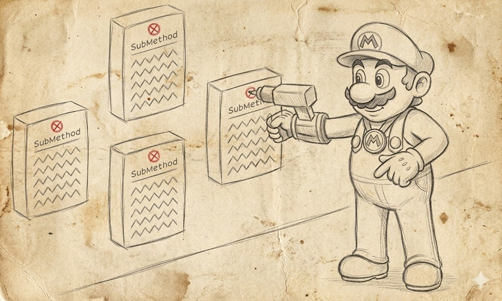
GoF, cioè il libro "Design Patterns: Elements of Reusable Object-Oriented Software" di Gamma, Helm, Johnson e Vlissides, è uscito nel 1994 e per molti anni è diventato il cervello OOP della programmazione, e io lo tratto con grande rispetto perché ci sono cresciuto io stesso. Ma il libro è stato scritto trent'anni fa in un contesto molto specifico che differisce enormemente da quello moderno, e molte delle sue raccomandazioni o sono diventate obsolete insieme ai linguaggi che le hanno generate, o si sono rivelate specifiche di una famiglia di linguaggi e poco applicabili in altre.
La critica principale al GoF da parte degli sviluppatori di giochi è che di pattern reali ce n'è ben poco. C'è molto sull'implementazione concreta e sulla protezione del codice già esistente, cioè il GoF in realtà non è un libro sui pattern di progettazione ma un libro sull'implementazione della protezione dai cambiamenti nello stile di Java e del primo C++. E va letto proprio con questa consapevolezza, altrimenti copierai nel tuo codice cose che nel C++ moderno per i giochi o non servono o sono implementate in modo fondamentalmente diverso.
Questo spostamento si vede chiaramente in come sono cambiati i linguaggi stessi. Il GoF è stato scritto in un'epoca in cui i programmatori avevano l'istanziazione in stile new ClassName() sparsa per tutto il codice, i template in C++ erano ancora esotici e le lambda erano assenti come categoria. MPL e DSEL erano appannaggio di uno o due esperti, mentre i variadic template e std::variant erano racconti da riviste di fantascienza. In un linguaggio del genere molti pattern del GoF erano davvero una svolta ingegneristica, perché mostravano come ottenere almeno un po' di flessibilità tramite una combinazione di metodi virtuali ed ereditarietà. Nel moderno C++23, in Rust, C# e Swift, gran parte di ciò che nel GoF era un pattern complesso con cinque classi viene implementato con una lambda o un std::variant, e questo va capito per non far proliferare infrastruttura inutile in nome di infrastruttura inutile.
Quindi i pattern del GoF "bisogna conoscerli", a volte bisogna conoscerli con la comprensione del contesto e magari non usarli, e se guardi nel codice dei motori moderni, le persone hanno già percorso questa strada, se ne sono rese conto e nella maggior parte dei casi l'hanno accettato.
Singleton: non è affatto un pattern
Singleton è un pattern che dichiara che nel sistema deve esistere esattamente un'istanza di una certa classe e fornisce un punto di accesso globale ad essa. Sembra solido finché non provi a costruirci sopra qualcosa di davvero grande e testabile, poi si scopre che un Singleton non è "un'istanza" ma solo una variabile globale con un grazioso involucro sintattico, e la pagherai con tutti gli stessi peccati per cui le variabili globali furono marchiate a fuoco nel settore alla fine degli anni novanta.
Nei giochi degli anni 2000 il Singleton era un'epidemia, e in idTech il celebre engine_t engine; viveva come oggetto motore globale a cui potevi rivolgerti da qualsiasi punto, e Carmack in seguito nei suoi post pubblici ha ammesso che non era l'idea migliore. Nel Source Engine c'erano g_pStudioRender, g_pPhysicsCollision, g_pSoundEmitterSystem, e sebbene Valve lo inquadrasse formalmente come service provider, in pratica attraverso di essi funzionava la stessa logica singleton "un puntatore per tutti". In CryEngine il globale gEnv è tuttora uno dei principali espedienti architetturali, e in Unity GameObject.Find e FindObjectOfType continuano a vivere come "singleton differito", e ogni progetto Unity prima o poi si crea il proprio GameManager con public static GameManager Instance.
I problemi principali del Singleton sono le dipendenze nascoste. Quando il tuo codice da qualche parte nelle sue profondità chiama Engine::Get().GetRenderer().DrawSprite(), la firma della funzione non dà alcun indizio del fatto che dipende dal renderer, da Engine e dal loro ciclo di vita, e quando provi a estrarre questa funzione in un modulo separato o a testarla in isolamento, scopri che si trascina dietro mezzo motore. Le dipendenze nascoste portano a un problema di ordine di inizializzazione. Si scopre che i Singleton si chiamano a vicenda all'inizializzazione in un ordine che dipende dall'ordine di inizializzazione statica in C++. Questo dà il classico static initialization order fiasco, in cui il tuo motore si comporta diversamente a seconda di quale versione del compilatore ha costruito il binario. E infine tutto ciò sfocia nell'inutilizzabilità per gli unit test, perché non puoi sostituire un Singleton con un mock, dato che si istanzia da solo e controlla l'accesso da solo.
L'industria moderna ha sostanzialmente superato questa malattia, e oggi la maggior parte dei motori usa un Service Locator ibrido con un lifetime esplicito. Gli Unreal Subsystems (ne abbiamo già parlato nella sezione sui subsystem) sono un riconoscimento esplicito del fatto che il Singleton come idea serve, ma va implementato dall'infrastruttura del motore con un ciclo di vita gestito piuttosto che come variabile statica in C++. La Dependency Injection in Unity tramite Zenject, Extenject, VContainer fa lo stesso, e al posto delle variabili globali hai un container in cui registri i servizi, e ogni pezzo di codice li ottiene tramite il costruttore o un campo. Le Bevy ECS Resources in Rust sono un approccio del tutto diverso, e un "singleton" ora è solo un componente del world a cui un system richiede accesso tramite Res e ResMut, e Rust a livello di borrow checker garantisce che vi acceda o un unico riferimento mutabile o più riferimenti immutabili alla volta. Tutte e tre le soluzioni sono fondamentalmente migliori del Singleton proprio perché rendono esplicite le dipendenze e restituiscono al programmatore il controllo sul ciclo di vita.
Quindi il consiglio pratico è questo: se vedi static T& Instance() nel codice, non scappare subito urlando, ma chiediti "perché questo oggetto non può semplicemente essere un campo in qualche parent creato esplicitamente all'avvio del progetto". Nel 95% dei casi può esserlo, e il Singleton è finito lì per pigrizia o inesperienza dell'autore. Nel restante 5% dei casi un Singleton è davvero giustificato, per esempio per un logger che deve essere accessibile da qualsiasi punto del codice ancora prima che il motore sia completamente inizializzato, o per un allocatore che deve anche vivere fino alla fine del programma, e questi casi vanno documentati proprio nel codice affinché la persona successiva capisca perché qui c'è un Singleton.
Command: soppiantato dalle lambda
Command nel GoF sembrava una conquista che trasformava la logica in un oggetto. Avvolgi una chiamata di funzione in un oggetto che può essere salvato, passato, annullato e rieseguito, e questo oggetto svolge il ruolo di comando nello stile "esegui questo poi, e io so già in anticipo come farlo". Nel 1994 questo era "un balzo per tutta l'umanità", perché nel vecchio Java e nel vecchio C++ passare una funzione come oggetto di prima classe era impossibile, e Command era un modo per farlo, e per farlo con eleganza.
Oggi in C++ Command nella maggior parte dei casi si sostituisce facilmente con std::function o una lambda, perché serve esattamente lo stesso effetto di "impacchettare una chiamata e salvarla per dopo", e per questo non ti serve assolutamente una classe base astratta con un Execute() virtuale e una factory di comandi concreti. C# dà lo stesso tramite Action e Func. Rust tramite Fn, FnMut, FnOnce. Lua tramite funzioni di prima classe. E in tutti questi linguaggi, se vedi codice scritto nello stile del Command del GoF con una classe base e discendenti, è stato molto probabilmente scritto prima che nel linguaggio comparissero i funtori normali, e ora può essere tranquillamente riscritto e reso dieci volte più corto.
E quando sostituisci il 90% dei comandi con dei funtori, si scopre che avresti potuto vivere senza di loro. Ma ci sono un paio di posti dove il Command in forma moderna vive e prospera, e lo farà ancora a lungo, e sono i sistemi di undo/redo negli editor. Quando lavori in Unity, Unreal, Godot, Blender o Houdini e premi Ctrl+Z, sotto il cofano funziona il pattern Command nella sua variante originale del GoF, perché ogni azione dell'utente viene avvolta in un oggetto che può eseguirsi e annullarsi, e lo stack di questi oggetti è la cronologia degli undo.
Lo stesso negli AI planner come GOAP, perché le azioni in un piano GOAP sono proprio comandi puri, dove ogni azione ha Execute, IsApplicable e precondizioni con effetti, e il planner assembla da esse una sequenza che porta all'obiettivo. Nei sistemi di replay e negli AI planner complessi, le azioni sono il posto giusto per applicare oggetti Command che vengono scritti su disco, modificati, salvati o rieseguiti in ordine inverso. Quindi usa le lambda e std::function dove vuoi "impacchettare una chiamata per dopo", ma quando ti serve undo, redo, serializzazione su disco, trasmissione in rete come oggetto, opta per un Command GoF a tutti gli effetti con una classe base, perché le lambda tutto questo non lo sanno fare.
Visitor: un legame rigido con gli anni '90
Visitor nel GoF è un pattern che separa le operazioni su un insieme di oggetti di tipi diversi dagli oggetti stessi. Scrivi una classe base Visitor con i metodi Visit(ConcreteA*), Visit(ConcreteB*), Visit(ConcreteC*), e ognuno dei tuoi oggetti ha un metodo Accept(Visitor*) in cui chiama il metodo giusto del visitor. Questo schema permette di aggiungere nuove operazioni a un insieme di tipi senza modificare i tipi stessi.
Visitor è un idioma potente rigidamente legato a specifici linguaggi con feedback. In Java e nel vecchio C++ Visitor era uno strumento funzionante, perché altrimenti aggiungere una nuova operazione a un insieme chiuso di tipi era o impossibile o molto scomodo. Nel C++ moderno c'è std::variant più std::visit per questo compito, in C# c'è il pattern matching tramite switch e i record, in Rust c'è match più enum con tipi algebrici, in Swift e Kotlin sicuramente c'è qualcosa anche lì, ma questi linguaggi non li conosco. Tutte queste possibilità danno la stessa cosa di Visitor, dieci volte più corta e senza bisogno di far proliferare infrastruttura di callback.
Ma l'idea di Visitor in sé non è andata da nessuna parte, e nei motori moderni compare in vari posti, solo che si chiama diversamente. Per esempio, l'idea in ECS con World.ForEach<A, B> è essenzialmente lo stesso Visitor rovesciato, quando dichiari un insieme di tipi di componenti che vuoi visitare, e il motore percorre tutte le entità che hanno questi componenti e chiama la tua lambda. Tecnicamente questo non è il Visitor classico, perché non c'è feedback tramite un metodo virtuale, ma logicamente è la stessa idea di "separare un'operazione dai tipi a cui si applica". Oppure i compilatori di shader e le trasformazioni dell'AST, quando DXC o slang compilano HLSL in SPIR-V, è un classico attraversamento Visitor dell'albero AST. Lo stesso nel compilatore di Blueprint in UE, che percorre i nodi del grafo e genera comandi. Anche la generazione di codice dell'Unreal Header Tool, che legge i file header C++ con UCLASS, UPROPERTY e UFUNCTION e genera per essi codice wrapper, usa anch'essa Visitor per attraversare i file C++. Oppure l'attraversamento della scena per il rendering, quando all'interno c'è un attraversamento Visitor di tutti i componenti Renderer che applica l'operazione "disegna" e li raccoglie in una render queue. Questo è Visitor, solo che nessuno lo chiama "Visitor" perché la parola ha finito per essere percepita come accademica.
Observer: mal realizzato nel GoF
Observer nel GoF è un pattern in cui un oggetto (il Subject) tiene una lista di osservatori (Observer) e al cambio di stato li notifica tutti tramite una chiamata al metodo virtuale Update(). Nel GoF questo è descritto in modo molto a basso livello, perché l'Observer classico in stile GoF richiede classi base con metodi virtuali, gestione manuale della lista dei sottoscrittori, disiscrizione manuale nel distruttore e così via.
Nei motori moderni Observer vive come librerie signal-slot che nascondono tutta questa infrastruttura dietro un'API di livello più alto. Il signal-slot di Qt è probabilmente l'implementazione più conosciuta, ed è stato usato in molti editor di giochi, tra cui il primo Unreal Editor e l'editor di Frostbite. boost::signals2 dà lo stesso in puro C++ con disiscrizione automatica tramite scoped_connection. MulticastDelegate in Unreal tramite DECLARE_MULTICAST_DELEGATE_* è un'implementazione videoludica di Observer con supporto per UObject e disiscrizione automatica alla distruzione del sottoscrittore. UnityEvent in Unity fa lo stesso per il mondo C#. I Signals in Godot sono integrati nel sistema di nodi stesso e vengono usati letteralmente su ogni pulsante della UI.
Ma non pensare che il pattern sia povero. Da questa idea è cresciuta tutta la programmazione reattiva ed è maturata in un paradigma a tutti gli effetti sotto forma di UniRx, UniTask, R3, che danno oggetti che possono essere filtrati, trasformati e combinati per ottenere gli eventi che ti servono. RxSwift, RxKotlin, RxJS fanno lo stesso nei loro ecosistemi. E Noesis GUI (usato in The Witcher 3, Cyberpunk 2077, Baldur's Gate 3) è cresciuto in una direzione software a sé stante e applica Observer per la UI reattiva. Cioè Observer come idea non è affatto obsoleto, al contrario, è diventato uno degli espedienti architetturali fondamentali dei motori moderni. Ciò che è obsoleto è la sua implementazione originale del GoF con metodi virtuali e gestione manuale delle sottoscrizioni. Se scrivi oggi un sistema di tipo Observer, non prenderlo dal GoF, prendilo da Unreal o Qt, o dalle moderne librerie di delegate, o dai framework reattivi, e tratta Observer come un'idea piuttosto che come una ricetta specifica.
Memento: ancora vivo nei giochi
Memento nel GoF propone un pattern in cui un oggetto può salvare il proprio stato in uno speciale oggetto snapshot e ripristinarlo più tardi senza violare l'incapsulamento. La descrizione di Memento nel GoF è più letteraria che tecnica, e le implementazioni reali di questo pattern nei giochi vanno ben oltre ciò che il GoF descrive.
Nei giochi Memento vive in diversi posti chiave come il sistema di Save/Load, quando al salvataggio del gioco tutte le entità del mondo di gioco devono serializzarsi in uno snapshot, e al caricamento ripristinarsi da esso, e questo è proprio Memento, solo molto sviluppato. Il secondo habitat sono i sistemi di Replay negli RTS, quando i giochi (StarCraft II, Age of Empires IV, Company of Heroes 3, Civilization VI) salvano non ogni frame dello stato dell'intero gioco ma una sequenza deterministica delle azioni dei giocatori più lo stato iniziale del mondo, e un replay è semplicemente la riesecuzione di questa sequenza con lo snapshot iniziale. Questa è un'implementazione molto elegante del pattern, in cui lo snapshot non è l'intera cronologia ma solo il suo stato iniziale più il flusso di input, cosicché i file di replay vengono minuscoli anche per partite di molte ore.
Oppure in certi sparatutto (Call of Duty, Modern Warfare, Battlefield), dove il motore mantiene costantemente in un ring buffer gli ultimi cinque-dieci secondi dello stato del mondo, e alla morte del giocatore mostra questa registrazione, spostando la telecamera sull'uccisore. L'implementazione in ogni gioco è a sé, ma l'idea è la stessa. Memento viene usato anche nei giochi di combattimento in rete (Tekken 8, Street Fighter 6, Mortal Kombat 1), quando ogni client tiene in memoria snapshot dello stato del gioco degli ultimi N frame, e alla ricezione dell'input dell'avversario riporta lo stato al frame necessario nel passato, riesegue dal momento del rollback con l'input corretto e recupera fino al frame attuale. Questo richiede che l'intero gioco sia deterministico e completamente serializzabile in uno snapshot in millisecondi, e implementare un tale Memento in un moderno picchiaduro è un compito ingegneristico estremamente complesso con migliaia di ore-uomo investite. L'Undo/Redo negli editor l'abbiamo già discusso nella sezione Command, ma tecnicamente è anche Memento, perché lo stack degli undo memorizza gli snapshot di stato "prima" e "dopo" di ogni azione.
Facade: un approccio, non un pattern
Facade nel GoF è un pattern in cui un sottosistema complesso viene nascosto dietro un'interfaccia facciata semplificata attraverso la quale lo si usa esclusivamente. Facade descrive non una struttura di codice specifica ma la decisione architetturale "nascondiamo questa complessità dietro un'interfaccia più semplice", e non è implementato in alcun modo particolare, appare semplicemente come effetto collaterale di un buon design.
Nei giochi Facade si incontra a ogni passo ma non viene chiamato con questa parola. Il confine tra Engine e Game in Unreal, Unity e qualsiasi altro motore è una Facade sul codice del motore. L'API nella Steamworks SDK è una Facade sulle complesse interazioni server con Steam. L'API di Wwise o FMOD è una Facade su una complessa infrastruttura audio. L'API di un motore fisico (PhysX, Havok, Box2D, Bullet, Jolt) è una Facade su un milione di righe di calcoli fisici. L'API di un motore grafico (Vulkan, DX12, Metal) è una Facade sul driver della GPU, che è a sua volta una Facade sull'hardware. Questo non è un pattern nel senso di "prendi questa struttura specifica e usala", è l'idea generale di "nascondere la complessità dietro un'interfaccia semplificata" che è alla base di ogni buon design di API. Quindi Facade vive ovunque nel settore, ma sostanzialmente non c'è bisogno di discuterlo come pattern separato, perché qualsiasi modulo normale dovrebbe comunque avere un'interfaccia esterna semplificata.
Cosa bisogna sapere a memoria
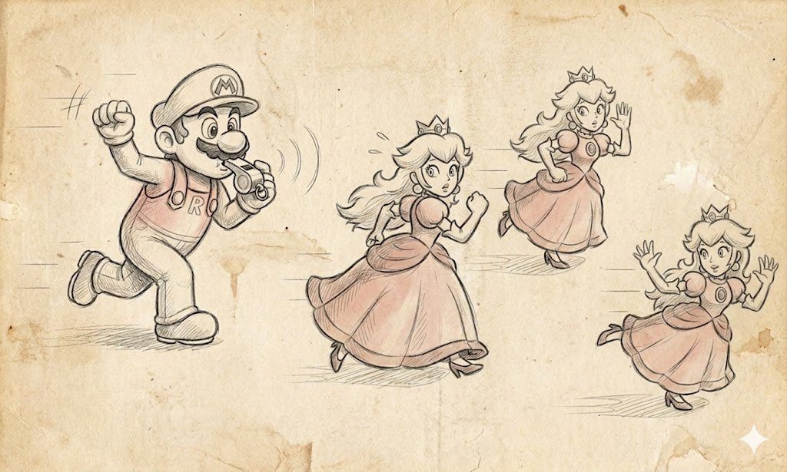
Del GoF devi davvero ricordare e conoscere bene i pattern strutturali e creazionali, perché li implementerai in ogni progetto, e non sono andati da nessuna parte con l'arrivo dei linguaggi moderni. Abstract Factory vive nei provider VFS, dove ogni formato di file ha la sua factory, nei render backend (IRenderBackendFactory crea DX12Backend, VulkanBackend, MetalBackend), nei trasporti di rete (INetworkTransportFactory crea TCPTransport, UDPTransport, WebRTCTransport), e negli AI planner (una factory crea GOAPPlanner, BehaviorTreePlanner, TNPlanner). Questo è un pattern del tutto vivo che torna utile ogni volta che hai una famiglia di oggetti correlati con implementazioni diverse.
Builder vive nei sistemi di creazione dei personaggi (CharacterBuilder assembla un eroe da razza, classe, equipaggiamento, abilità), nei generatori di livelli (DungeonBuilder assembla un livello da stanze, corridoi, trappole), nei mesh builder per la geometria procedurale, negli shader builder, nei command-list builder per il rendering. Prototype vive nei sistemi di prefab (Instantiate(prefab) in Unity, SpawnActor(class, transform) in Unreal, instance in Godot), nelle operazioni di copia degli oggetti, nella generazione procedurale (prendi un prototipo di nemico e parametrizzalo). È uno dei pattern più basilari e usati più di frequente nei giochi.
Adapter vive nei wrapper sopra librerie di terze parti, quando integri una SDK esterna con una certa API nel tuo motore con un'altra API e scrivi un adapter. Nei sistemi di input che adattano diversi formati di gamepad (XInputAdapter, DualShockAdapter, SteamInputAdapter) a un'unica interfaccia IGamepad. Nei wrapper legacy, quando il nuovo codice del motore lavora con una nuova API mentre il vecchio codice tramite un adapter continua a lavorare con l'API deprecata. Bridge nella sua forma pura è raro, ma la sua idea di "separare astrazione e implementazione" è alla base di ogni buona API. La Render Hardware Interface in Unreal (Engine vs RHI vs implementazione RHI per ogni API) è esattamente Bridge. Anche l'astrazione del backend audio in Wwise (Sound Engine vs backend audio specifico per piattaforma).
Composite è uno dei pattern più popolari nei giochi, perché qualsiasi struttura gerarchica è Composite. Lo Scene Graph in Unity (Transform.parent + children), AActor + USceneComponent in Unreal, la gerarchia di Node in Godot — tutto questo è Composite. I Behavior Tree sono Composite sui nodi di comportamento. Le gerarchie di UI tramite widget contenitori. Il Render Graph tramite un gruppo di pass. Proxy vive nell'esecuzione e nel caricamento differiti (AssetProxy carica l'asset reale solo al primo accesso), nei client di rete (RemoteServiceProxy rappresenta localmente il server), nelle cache (CachingProxy ricorda i risultati degli accessi). Flyweight è uno dei pattern più caratteristici dei giochi, perché nei giochi ci sono costantemente migliaia di oggetti dello stesso tipo con un sacco di dati condivisi. Un Particle System tramite Flyweight tiene un descrittore di emettitore condiviso e migliaia di particelle leggere che condividono i suoi dati. Il mesh instancing nella GPU è Flyweight: una geometria e migliaia di trasformazioni.
Se proviamo a formulare un approccio pratico al GoF nel moderno C++ per giochi, appare all'incirca così. I pattern strutturali e creazionali (Factory, Builder, Prototype, Adapter, Bridge, Composite, Decorator, Proxy, Flyweight) vanno saputi a memoria, perché non sono andati da nessuna parte e aiutano ogni giorno. I pattern comportamentali (Command, Observer, Strategy, Visitor, Memento, State, Mediator, Iterator, Chain of Responsibility) vanno conosciuti nei termini di come funzionano, ma non affezionarti all'implementazione, perché i linguaggi moderni danno per ciascuno di essi mezzi di realizzazione molto più eleganti di quanto il GoF potesse permettersi. Singleton — è ora di seppellire la hostess, ormai... E Facade intendilo come un principio, non come un pattern.
È utile conoscere i pattern del GoF a blocchi, cioè Factory + Builder + Prototype è il blocco "creazione degli oggetti", e ha senso pensarlo come un unico compito — come creiamo in generale le cose in questo gioco — piuttosto che come tre pattern separati. Adapter + Bridge + Facade è il blocco "adattamento delle API", e ha senso pensarlo come la questione di come isoliamo tra loro le diverse parti del sistema. Observer + Mediator + Chain of Responsibility è il blocco "comunicazione tra oggetti", e così via. Quando pensi a blocchi, vedi l'architettura, e quando pensi a pattern separati, vedi solo dettagli implementativi, mentre l'architettura stessa ti sfugge.
Dopo trent'anni il GoF è diventato un documento storico dell'era del primo OOP, e va trattato come la vecchia letteratura ingegneristica. Molto di ciò che vi è scritto è rilevante oggi, ma molto richiede una revisione alla luce dello sviluppo dei linguaggi e del settore. Un programmatore che ha letto il GoF nel 2026 e cerca di riprodurne le ricette alla lettera assomiglia all'incirca a un programmatore del 1994 che cerca di seguire libri sulla programmazione strutturata del 1974. Otterrai certo codice funzionante, ma sarà codice arcaico in cui metà dello sforzo viene speso in ciò che in un linguaggio moderno si risolve con una riga. Ma un programmatore che ha letto il GoF e ne ha preso la cosa principale, cioè l'idea stessa di dare un nome ai pattern e di discuterne, ottiene un vocabolario per parlare con il tech lead che ripaga ogni volta che devi spiegare cosa hai fatto e perché.
Cosa leggere alla fine
Da quando è comparso il GoF è uscito molto materiale utile, e se ti trovi all'inizio della tua carriera o hai semplicemente deciso di colmare le lacune in architettura, di seguito c'è una lista di letture che ho letto io stesso e posso consigliare.
POSA (Pattern Oriented Software Architecture). Questo è il libro più importante, perché POSA non è GoF — contiene davvero i veri pattern architetturali del livello di cui abbiamo discusso sopra: Layers, Pipes and Filters, Blackboard, Microkernel, Broker, Reflection. Il Volume I sono i pattern architetturali di base di uso generale, e senza di esso non considererei affatto una persona come avente finito di studiare l'architettura del software.
GoF (Design Patterns) di Gamma, Helm, Johnson e Vlissides. L'ho già trattato in dettaglio; bisogna conoscerlo, si può leggere, quelli strutturali e creazionali è bene impararli a memoria, il resto prendilo a dosi misurate con la comprensione del contesto storico. Non è la Sacra Scrittura, ma un documento storico dell'era dei mammut.
Booch, Object-Oriented Analysis and Design with Applications. Il libro è obsoleto nei suoi esempi (C++ degli anni 90, Smalltalk, Ada), ma metodologicamente molto solido, e lì l'autore fornisce un buon apparato concettuale per l'analisi del dominio. Oggi è come Roger Zelazny con le sue Cronache di Ambra — follemente interessante, ma più per la crescita generale che per il lavoro applicato.
Fowler, Refactoring. Questo libro è di lettura obbligata, e leggilo nell'attuale seconda edizione (2018) o successiva se disponibile, perché i suoi esempi sono in JavaScript e più moderni. Il beneficio principale non sta nel refactoring in quanto tale, ma nel fatto che Fowler dà un vocabolario per parlare del codice goffo: extract method, inline variable, replace conditional with polymorphism. Quando questo diventa un vocabolario condiviso nel tuo team, la velocità della code review cresce di diverse volte.
Lakos, Large-Scale C++ Software Design. Questa è lettura obbligata per qualsiasi sviluppatore C++, e Lakos a suo tempo ha descritto come strutturare grandi progetti C++ affinché compilino e facciano il link in un tempo ragionevole. Le sue raccomandazioni sul physical design, le gerarchie di dipendenze, il pattern pImpl, le forward declaration salvano ancora oggi i progetti dal collassare sotto il proprio peso.
"Game Programming Patterns" di Robert Nystrom (disponibile gratis su gameprogrammingpatterns.com). Questo è essenzialmente un remake videoludico del GoF, e l'autore si è chiaramente posto tale obiettivo scrivendo il libro. Prende ogni pattern del GoF più quelli specifici dei giochi (Game Loop, Update Method, Component, Event Queue, Service Locator, Data Locality, Dirty Flag, Object Pool, Spatial Partition, Type Object, Subclass Sandbox, Bytecode), dà contesto videoludico ed esempi videoludici, e lo scrive in un linguaggio molto accessibile. Se scrivi codice per giochi, questo è il primo libro che dovresti leggere, ed è disponibile gratis online.
"Game Engine Architecture" di Jason Gregory. Questo è il libro più completo sull'architettura dei motori di gioco, scritto dalla persona che era responsabile del motore di Naughty Dog. Qualsiasi edizione copre praticamente tutti gli aspetti, e se stai scrivendo qualcosa che assomiglia a un gioco, è lettura obbligata. "Software Engineering at Google" è un "Lakos" moderno per i grandi progetti, e analizza in dettaglio come costruire i processi intorno al codice, ai test, alla code review, alla gestione delle dipendenze, ai build system, e molto di questo è direttamente applicabile ai grandi progetti videoludici. Ho la forte sensazione che la maggior parte degli studi AAA non ne abbia mai sentito parlare affatto.
GDC Vault (gdcvault.com). Un enorme archivio di talk della GDC, in parte a pagamento, in parte gratuiti. Segnalerei alcuni talk chiave da vedere assolutamente:
- Jason Gregory su "State-Based Scripting in Uncharted 2" (2009).
- Christian Gyrling su "Parallelizing the Naughty Dog Engine Using Fibers" (GDC 2015).
- Damián Isla su "Handling Complexity in the Halo 2 AI" (GDC 2005).
- Jeff Orkin su "Three States and a Plan: The AI of F.E.A.R." (GDC 2006).
- Yuriy O'Donnell su "FrameGraph: Extensible Rendering Architecture in Frostbite" (GDC 2017).
- Tim Sweeney su "Programming the Future" in vari anni.
- Michael Acton su "Data-Oriented Design and C++" (CppCon 2014, non GDC, ma da vedere assolutamente).
- Niklas Frykholm su "Implementing Subsystems" nell'architettura del motore Bitsquid/Stingray.
Canali YouTube che consiglierei: The Cherno per le basi del C++ e dell'architettura dei motori; Game Dev Underground per interviste con sviluppatori indie; il canale ufficiale della GDC con talk gratuiti; CppCon per l'approfondimento del C++.
Blog di specifici sviluppatori. Questa è una miniera d'oro, e chiunque li legga ha un livello di comprensione completamente diverso nel giro di un anno. I file .plan di John Carmack (un archivio storico, ma molto istruttivo); Casey Muratori e la sua serie Handmade Hero; Mike Acton e i suoi articoli sul data-oriented design; Sebastian Sylvan e il suo blog; Aras Pranckevičius (ex CTO di Unity) e il suo blog; Branimir Karadžić (autore di bgfx); Adrian Courrèges sulle analisi dei frame nei giochi moderni; Wolfgang Engel (diary of a graphics programmer).
Motori open-source e il loro codice. Questo è probabilmente il modo migliore per imparare l'architettura. id Tech 1-4 (sorgenti disponibili), Doom 3 BFG, Quake III Arena, Half-Life 1, Unreal Engine 3-5 (per gli sviluppatori), Godot, Bevy, EnTT, flecs, bgfx, The Forge. Leggere i sorgenti di questi progetti dà più comprensione dell'architettura di dieci manuali.
Cosa leggere oggi e in che ordine
Se stai appena iniziando e hai un anno per l'autoformazione, proporrei questo piano:
- Game Programming Patterns (Nystrom) per il vocabolario di base e una prima conoscenza dei pattern nei giochi. 2 mesi + fai gli esempi.
- GoF per il fondamento accademico, si può saltare. Un mese.
- POSA Volume I per i veri pattern architetturali. Due mesi.
- Game Engine Architecture (Gregory) per il quadro generale del motore. Tre mesi, con esperimenti.
- Refactoring (Fowler) per la capacità di lavorare con codice esistente. Un mese.
- Real-Time Rendering (se sei un programmatore grafico) o Real-Time Collision Detection (se di fisica) o POSA Volume II (se di rete) per la specializzazione. Due mesi.
- Large-Scale C++ Software Design (Lakos) per la comprensione di un grande progetto C++. Due mesi, soprattutto se lavori in un team grande.
- Designing Data-Intensive Applications (Kleppmann) per la crescita generale. Un mese e mezzo.
- Peopleware (DeMarco/Lister) per capire che lavori con persone, non con macchine. Due settimane, molto breve.
In parallelo a questo, almeno un talk della GDC a settimana, almeno un post di blog tecnico al giorno, e almeno una pull request a un progetto open-source a settimana. Ma soprattutto, nessun libro sostituisce lo scrivere codice. Tutti questi libri diventano utili esattamente nel momento in cui li leggi dopo aver incontrato il problema che descrivono. Se leggi Lakos prima che la compilazione del tuo grande progetto cominci a richiedere un'ora, le sue raccomandazioni resteranno solo parole sulla carta. Se leggi POSA Volume II prima di aver avuto un compito reale con codice asincrono, i pattern Reactor e Proactor sembreranno un'inutile astrazione accademica. Quindi leggi nel problema, non in anticipo, e tieni questa biblioteca a portata di mano affinché, quando sorge un problema, tu trovi rapidamente la sezione giusta e la applichi a un caso fresco.
TL;DR
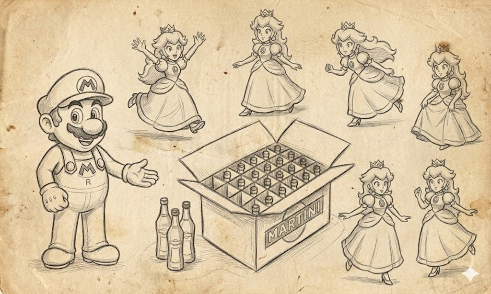
Uff... sei arrivato fin qui, allora, è stato interessante? )
Se proviamo a condensare tutto quanto scritto sopra in una pagina a cui puoi tornare tra un anno e rinfrescarti rapidamente i punti principali, viene fuori all'incirca quanto segue.
L'architettura di un gioco non è una questione di "cosa è più figo" ma di quali compromessi sei disposto a pagare per quali vantaggi, e senza una risposta onesta a questa domanda qualsiasi architettura "corretta" si trasforma in un costoso ornamento che al progetto non dà nulla.
La prima cosa che devi scoprire del tuo progetto è la sua scala (una persona o duecento), chi apporterà i cambiamenti (programmatore, designer, artista, localizzatore), quanto sono frequenti questi cambiamenti (ogni giorno o una volta ogni sei mesi), quali forze sei disposto a mantenere (coesione, accoppiamento, velocità di iterazione, velocità del codice nativo, velocità di onboarding delle nuove persone, stabilità dell'ABI per gli sviluppatori esterni). Circa nove decimi delle decisioni architetturali che prenderai poi dipendono dalle risposte a queste domande; non esistono risposte corrette "generali".
I "grandi" pattern architetturali ti danno un vocabolario per parlare dell'organizzazione della codebase. Dove hai layer, dove subsystem, e dove metalayer, e così via, e la maggior parte dei progetti è un misto di tutti con tutti, e un misto consapevole piuttosto che casuale.
Le strategie di progettazione determinano da quale estremità posi i mattoni: top-down funziona con un design forte e un team grande, bottom-up funziona con una tecnologia unica e un piccolo gruppo centrale, il refactoring costante funziona con i prototipi e i team indie, e passare dall'uno all'altro a seconda delle fasi del progetto è normale, non un segno di debolezza.
L'asse push vs pull determina chi è responsabile dell'attualità dei dati. Pull è più economico in infrastruttura e si diffonde per il codice, push è più costoso, ma il sistema sa SENZA DI TE dove cercare cosa. Nei giochi moderni lo streaming degli asset, le impostazioni con effetti collaterali, la UI reattiva, la replica di rete e la percezione dell'AI sono solitamente push; le regole di gameplay, le utility matematiche, la UI in immediate-mode e l'hot path sono solitamente pull; la maggior parte dei motori è un ibrido in cui le cvar e i riferimenti agli asset ti danno una scelta tra una sottoscrizione push e una lettura pull.
Il data-driven design non è "come programmare in modo più figo", è un modo per portare nel progetto nuove specialità, in primo luogo quelle non-programmatore. Se sul tuo progetto c'è una persona sola, il data-driven esteso è controindicato; se hai una dozzina di game designer e un team di technical art, senza data-driven non riuscirai a caricarli di lavoro.
I linguaggi di scripting esistono non per i programmatori ma per i non-programmatori, e lo script ideale per i non-programmatori è tutto tranne che uno script. Nella maggior parte dei casi la risposta giusta è o un DSL visuale specializzato (Blueprints, Behavior Tree, Material Editor, Niagara, Sequencer), o un linguaggio di uso generale come Lua o C# avvolto in un'interfaccia amichevole per i non-programmatori. È incredibilmente allettante per un programmatore alle prime armi fare un "comodo linguaggio di scripting", ma la comodità di questo linguaggio si rivela sempre essere la comodità del programmatore stesso piuttosto che quella del game designer, e tra due anni sarai tu stesso a scrivere tutto il codice degli script in esso, perché i game designer l'hanno trovato scomodo due anni fa e non lo trovano più comodo ora.
La gestione di risorse e asset distingue due cose fondamentalmente diverse: un asset è un'unità di contenuto, una risorsa è un'unità di una risorsa fisica limitata (una pagina di VRAM, un descrittore, un thread). Il caching lavora con l'identità (le texture per nome), il pooling con risorse anonimizzate (un pool di proiettili), il prefetching e lo streaming tirano in anticipo ciò che servirà, l'acquisizione lazy e parziale tirano solo ciò che serve, il leasing rilascia temporaneamente e ritira indietro, un evictor decide chi buttare fuori, un coordinator mantiene la coerenza. La maggior parte dei giochi open-world moderni è un complesso fascio di tutti questi pattern, e un tentativo di cavarsela con tecniche semplici finisce di solito o in un OOM o in stutter al caricamento.
Il GoF è utile; i pattern strutturali e creazionali (Factory, Builder, Prototype, Adapter, Bridge, Composite, Decorator, Proxy, Flyweight) conoscili a memoria e applicali regolarmente. I pattern comportamentali (Observer, Command, Strategy, State, Visitor, Memento, Chain of Responsibility, Iterator, Mediator) conoscili nella sostanza, ma implementali tramite gli idiomi dei linguaggi moderni. Non usare Singleton senza un'esplicita necessità. Intendi Facade come un principio, non come un pattern. Il GoF è un documento storico, trattalo di conseguenza.
I pattern sono un vocabolario per discutere i compromessi architetturali, non un catalogo di ricette e non un manuale su "come farlo nel modo giusto". Sono utili esattamente nel momento in cui due ingegneri, un tech lead e un game designer, o tu e te-tra-sei-mesi, vi sedete a discutere cosa è stato fatto nel codice e perché, e parlate una lingua comune. Senza questo vocabolario le discussioni architetturali si trasformano in un'ora di improvvisazione col pennarello alla lavagna, mentre con il vocabolario sono tre volte più corte e dieci volte più produttive.
E la cosa più importante che voglio dire proprio alla fine, dopo tutte queste molte migliaia di parole, pattern sviscerati ed esempi videoludici. L'architettura non è un fine in sé ma uno strumento. L'obiettivo è un gioco divertente da giocare, e l'architettura deve servire questo obiettivo piuttosto che il contrario. Un programmatore che sceglie i pattern in base alla loro bellezza o alla conformità ai libri è un cattivo programmatore, perché lavora per la propria biblioteca piuttosto che per il progetto. Un programmatore che sceglie i pattern in base alle forze specifiche di un progetto specifico e accetta consapevolmente i compromessi è un buon programmatore, e i giochi che fa ripagano tutto sul lungo periodo, perché escono, arrivano al rilascio, piacciono ai giocatori e portano al team sia piacere sia denaro.
Ed è esattamente questo il pensiero che non sono riuscito a trasmettere nel mio libro Game++, perché in esso mi sono lasciato prendere troppo dalle implementazioni e ho detto troppo poco sui compromessi, ed è proprio per questo che mi sono messo a scrivere questo articolo, per provare a correggere questo errore. Il tempo di un programmatore è più importante delle implementazioni, e un architetto che comincia il discorso con le factory non è ancora un granché come architetto. Aggiungerei da parte mia che anche un architetto che finisce il discorso senza aver discusso di forze e compromessi non è ancora un granché come architetto, ed è bene appendere questa frase sopra la scrivania, perché c'è sempre la tentazione di finire prima. Un buon architetto è quello che non cede a questa tentazione, e spero vivamente che questo articolo abbia aiutato il lettore a muoversi almeno un po' in quella direzione.
Grazie per aver letto. Se mi correggi da qualche parte sui dettagli fattuali di specifici motori e progetti, te ne sarò grato. Se obietti sulla sostanza, te ne sarò ancora più grato, perché il beneficio principale di un articolo come questo è provocare una discussione di qualità. Ci vediamo nei prossimi articoli, e magari anche in nuovi libri.
Una bozza del prossimo libro è in parte pubblicata su GitHub, basata sugli articoli di Habr (playful_programming_cpp); in generale il libro stesso è già scritto, e ne pubblico i capitoli interessanti come articoli. P.S. Le immagini di apertura sono prese dal meraviglioso sito refactoring.guru con il loro permesso e leggermente ritoccate con la lima.
← Tutti gli articoli